Research Cultures in
Applied Linguistics and TESOL
Edited by
Lee McCallum, Dara Tafazoli & Ali H. Al-Hoorie
Published 2025 by Applied Linguistics Press.
www.appliedlinguisticspress.org
www.appliedlinguisticspress.org
Copyright © 2025 the editors and contributing authors. Authors retain copyright of their work.
ccbyBY-NC-ND 4.0
This work is licensed under a Creative Commons Attribution-NonCommercial-NoDerivatives 4.0 International License (CC BY-NC-ND 4.0). You may share it with appropriate credit.
Recommended citation
McCallum, L., Tafazoli, D., & Al-Hoorie, A. H. (Eds.) (2025). Research cultures in applied linguistics and TESOL. Applied Linguistics Press.
About the Editors
Lee McCallum (https://leemccallum.net)
Lee McCallum, (Ed.D.) is a Lecturer in Assessment and Feedback at Edinburgh Napier University and an Associate Tutor in Language Education at The University of Edinburgh. She has previously worked as a Lecturer in Academic Writing and a Coordinator of Academic Writing Tutors and Academic Writing Developers for Coventry University. She has held teaching and research posts in the UK, USA, Spain, Saudi Arabia and China. As a teacher trainer, she has worked extensively with second language teachers, academic writing tutors and university faculties to embed technology into teaching and academic research initiatives. As a corpus linguist and writing assessment specialist, her work has been published at Cambridge University Press and Assessment, Routledge, Springer and Palgrave Macmillan. This includes leading edited volumes, encyclopaedias and co-authored monographs in language teaching, corpus linguistics and writing assessment. She has also contributed articles to a number of international journals and peer reviewed for journals such as the Journal of English for Academic Purposes, Assessing Writing, System and Applied Corpus Linguistics. She has led special issues in journals and is currently the lead editor of a special issue on corpus linguistics research methods in Research Methods in Applied Linguistics (Elsevier). lmccall2@ed.ac.uk
Dara Tafazoli (www.daratafazoli.com)
Dara Tafazoli (PhD, University of Cordoba, Spain) is a Research Officer of VR School Study and Higher Education Research Academy (HERA) at the University of Newcastle, Australia. His research and teaching interests include computer-assisted language learning (CALL), teacher education, and cultural issues in language education. Dara has conducted technology-enhanced language education projects and published articles in a variety of journals, including Online Learning, Computers and Education: Artificial Intelligence, JALT CALL Journal, Journal for Multicultural Education, CALL-EJ, Journal of Computers in Education, Teaching English with Technology, Porta Linguarum, and The Qualitative Report. His recent co-edited volumes are Computer-assisted language learning in the Global South (Routledge, 2024, co-edited with L. McCallum) and Handbook of CALL teacher education and professional development (Springer, 2023, co-edited with M. Picard). With L. McCallum, he is co-editing The Palgrave Encyclopedia of Computer-Assisted Language Learning (Live edition). Dara serves as an editor for several prestigious journals, including CALL-EJ, Online Learning Journal, and Artificial Intelligence in Language Education. Dara.Tafazoli@newcastle.edu.au
Ali H. Al-Hoorie (https://www.ali-alhoorie.com)
Ali H. Al-Hoorie is an Associate Professor of English Language at the Jubail English Language and Preparatory Year Institute, Royal Commission for Jubail and Yanbu, Saudi Arabia. He completed his PhD in English Language at the University of Nottingham under the supervision of Professors Zoltán Dörnyei and Norbert Schmitt. He also holds an MA in Social Science Data Analysis from Essex University. His research interests include motivation theory, research methodology, and complexity. His publications have appeared in various journals including Language Learning, Modern Language Journal, Studies in Second Language Acquisition, ELT Journal, Language Teaching Research, and Learning and Individual Differences. His books include Research Methods for Complexity Theory in Applied Linguistics (Multilingual Matters, 2020, with Phil Hiver), Student Engagement in the Language Classroom (Multilingual Matters, 2021, coedited with Phil Hiver and Sarah Mercer), and Contemporary Language Motivation Theory: 60 Years Since Gardner and Lambert (1959) (Multilingual Matters, 2020, coedited with Peter MacIntyre). The latter book is the winner of the Jake Harwood Outstanding Book Award. hoorie_a@rcjy.edu.sa
About the Contributors
Anwar Ahmed is an Assistant Professor in the Department of Language and Literacy Education at the University of British Columbia in Canada. He completed PhD at the Ontario Institute for Studies in Education (OISE) of the University of Toronto. Anwar’s articles have appeared in refereed journals such as Oxford Review of Education, Discourse, Educational Philosophy and Theory, Curriculum Inquiry, Language Learning Journal, TESOL Quarterly, CALICO Journal, and the Journal of Second Language Writing. His recent book is Exploring Silences in the Field of Computer Assisted Language Learning (Palgrave Macmillan, 2022). Email: anwar.ahmed@ubc.ca
Ali H. Al-Hoorie is an Associate Professor of English Language at the Jubail English Language and Preparatory Year Institute, Royal Commission for Jubail and Yanbu, Saudi Arabia. He completed his PhD in English Language at the University of Nottingham under the supervision of Professors Zoltán Dörnyei and Norbert Schmitt. He also holds an MA in Social Science Data Analysis from Essex University. His research interests include motivation theory, research methodology, and complexity. His publications have appeared in various journals including Language Learning, Modern Language Journal, Studies in Second Language Acquisition, ELT Journal, Language Teaching Research, and Learning and Individual Differences. His books include Research Methods for Complexity Theory in Applied Linguistics (Multilingual Matters, 2020, with Phil Hiver), Student Engagement in the Language Classroom (Multilingual Matters, 2021, coedited with Phil Hiver and Sarah Mercer), and Contemporary Language Motivation Theory: 60 Years Since Gardner and Lambert (1959) (Multilingual Matters, 2020, coedited with Peter MacIntyre). The latter book is the winner of the Jake Harwood Outstanding Book Award.
Mojtaba Asaie is currently a Ph.D. student in TEFL at the Department of English Language & Literature within the Faculty of Letters & Human Sciences at Shahid Beheshti University in Tehran, Iran. His academic focus has centered on TEFL research and its associated topics since his Master's studies. In his doctoral program, Mojtaba remains committed to advancing this line of research.
Othman (Osman) Z. Barnawi is a professor of Language and Education at the Royal Commission for Yanbu Colleges and Institutes, Saudi Arabia. He is the founding editor of Global South Perspectives on TESOL (Book Series published by Routledge-Taylor and Francis Group). He is also a co-founding editor of Southern Studies in Education (Book Series published by Routledge-Taylor and Francis Group). His research interests include the intersection(s) of language and political economy, social and education policy studies, the cultural politics of education, multilingual and multicultural studies, Global South studies, and international/transnational education. His recent books are Transnational Assessment Practices in the Age of Metrics (Routledge, 2023), International TESOL Teachers in a Multi-Englishes Community: Mobility, On-the-Ground Realities and the Limits of Negotiability (Multilingual Matters, 2022), TESOL Teacher Education in a Transnational World: Turning Challenges into Innovative Prospects (Routledge, 2023), and TESOL and the cult of speed in the age of neoliberal mobility. His works appear in leading peer-reviewed journals such as Language and Education, Critical Studies in Education, Critical Inquiry in Language Studies, Australian Review of Applied Linguistics, Applied Linguistics (Oxford University Press), International Journal of Bilingual Education and Bilingualism, Applied Linguistics Review, and British Journal of Educational Studies.
Ismaeil Fazel, PhD, is a Lecturer in the Faculty of Education of the University of British Columbia and a Professor of Liberal Arts at Yorkville University. His research interests include assessment and instruction of written literacy, as well as emergent issues surrounding knowledge mobilisation and scholarly communication. His scholarship has appeared in numerous book chapters and reputable journals, including System, the Journal of English for Academic Purposes, and English for Specific Purposes Journal.
Dennis Foung is a research writing teacher at the University of British Columbia, Canada. He holds a doctorate in language education and a Cambridge Delta (Diploma in Teaching English to Speakers of Other Languages). He has a keen interest in online education and learning analytics. He coordinated the development of various online language learning platforms and conducted learning analytics on those platforms using data logs.
Pejman Habibie is an Assistant Professor of TESOL and Applied Linguistics at the University of Western Ontario, Canada. He is also a founding co-editor of the Journal of English for Research Publication Purposes and the book series Routledge Studies in English for Research Publication Purposes. His research interests and scholarly publications focus on the geopolitics, socio-economics, and scientometrics of knowledge construction and dissemination, writing for scholarly publication, and generative artificial intelligence and academic literacies. His work has been published in international journals such as The Annual Review of Applied Linguistics, The Journal of Second Language Writing, and Research Methods in Applied Linguistics, among others.
Brian Hibbs, Ph.D., is Professor of Education/ESOL at Dalton State College, USA. He regularly teaches courses in applied linguistics, language teaching methodology, and culture and education to prepare pre-service elementary education teacher candidates to work with English learners in public schools. His scholarly interests include applied linguistics, children’s and adolescent literature, dialectical variation, funds of knowledge, intercultural competence, second language acquisition, study abroad, and teacher development.
Özkan Kırmızı works as a full professor at English Language and Literature Department of Karabuk University, Türkiye. He completed his Ph.D. at Hacettepe University, English Language and Teaching Department. His interest areas include L2 teacher education, pedagogical content knowledge, practicum experience, psychology of language learning and teaching in addition to teacher psychology. Even though he publishes in a wide range of topics related to language teaching and learning or EFL teacher education, his most specific research areas include EFL teacher education, positive psychology beside academic writing. Kırmızı has edited two books published by international publishing houses. One is titled Situated Nature of EFL Teacher Psychology: Insights from Türkiye (2023) and the other is Positive Psychology Components in Language Learning and Teaching in The Turkish Context (2024).
Ayşe Kızıldağ has been working as Associate Professor in Türkiye at Aksaray University, English Language Teacher Training Department since 2012. She completed her postgraduate study in 2007 where she had examined novice EFL teachers’ professional learning processes regarding their classroom management frames. During her consequent post-doc studies in Australia (2008- sponsored by Endeavour Scholarship Program) and Sweden (2009-2011- sponsored by Swedish Institute), she focused on and investigated about the mentoring models offered by respective teacher education programs at Edith Cowan University and University of Borås. She continues working and conducting research about English language teachers and pre-service teachers. Her current research interests are foreign language teacher initial learning, teacher motivation, cognition and emotions, professional identity formation, critical and transformative pedagogy, and qualitative research methodology including narrative inquiry and ethnography. She has attended numerous international conferences beside publishing peer-reviewed articles and book chapters on teacher education with reference to English language teachers’ professional learning and development. Her most recent publication is a peer-reviewed article titled “Exploring Turkish EFL teachers’ negative emotions and professional detachment in episodic narratives: A Ricoeurian analysis of the critical incidents”.
Lucas Kohnke (Ed.D., FHEA) is a senior lecturer at The Education University of Hong Kong, specializing in technology-supported teaching and learning with a focus on teacher professional development and emerging technologies (GenAI). Passionate about enhancing educational practices, Dr. Kohnke teaches courses on integrating technology into language classrooms, AI in education, teacher training, and English language teaching methodologies. He has authored over 60 articles in leading journals, including Computers and Education: Artificial Intelligence, Educational Technology & Society, Education and Information Technologies, SYSTEM, and TESOL Quarterly. Recognized for his contributions, Dr. Kohnke is ranked among the top 2% of most-cited scholars in education for 2024, reflecting his commitment to advancing the field.
Lee McCallum, (Ed.D., SFHEA) is a Lecturer in Assessment and Feedback at Edinburgh Napier University and an Associate Tutor in Language Education at The University of Edinburgh. She has previously worked as a Lecturer in Academic Writing and a Coordinator of Academic Writing Tutors and Academic Writing Developers for Coventry University. She has held teaching and research posts in the UK, USA, Spain, Saudi Arabia and China. As a teacher trainer, she has worked extensively with second language teachers, academic writing tutors and university faculties to embed technology into teaching and academic research initiatives. As a corpus linguist and writing assessment specialist, her work has been published at Cambridge University Press and Assessment, Routledge, Springer and Palgrave Macmillan. This includes leading edited volumes, encyclopaedias and co-authored monographs in language teaching, corpus linguistics and writing assessment. She has also contributed articles to a number of international journals and peer reviewed for journals such as the Journal of English for Academic Purposes, Assessing Writing, System and Applied Corpus Linguistics. She has led special issues in journals and is currently the lead editor of a special issue on corpus linguistics research methods in Research Methods in Applied Linguistics (Elsevier).
Musa Nushi is an Associate Professor in TEFL at the Department of English Language & Literature of Shahid Beheshti University in Tehran, Iran. He teaches Academic Writing, Discourse Analysis, Psycholinguistics and Technology in Second Language Teaching and Learning at graduate level. His primary research focus is on the connection between teaching methods and learning EFL, with particular emphasis on the role of technology and personality traits. His publications have appeared in a number of international journals, including Asia Pacific Education Review, ELT, and Language Teaching Research.
Jonathon Ryan received a Ph.D. in Applied Linguistics in 2012 and is currently Research Operations Manager of Wintec, a vocational education provider in New Zealand. He has investigated topics including L2 reference, miscommunication, and L2 listening, with these studies being published in journals such as Language Learning, TESOL Quarterly, Language Teaching Research, System, Journal of Pragmatics, IRAL, and ELT Journal, while also co-editing two books published by Routledge (2017 and 2020).
Dara Tafazoli (PhD, University of Cordoba, Spain) is a Research Officer of VR School Study and Higher Education Research Academy (HERA) at the University of Newcastle, Australia. His research and teaching interests include computer-assisted language learning (CALL), teacher education, and cultural issues in language education. Dara has conducted technology-enhanced language education projects and published articles in a variety of journals, including Online Learning, Computers and Education: Artificial Intelligence, JALT CALL Journal, Journal for Multicultural Education, CALL-EJ, Journal of Computers in Education, Teaching English with Technology, Porta Linguarum, and The Qualitative Report. His recent co-edited volumes are Computer-assisted language learning in the Global South (Routledge, 2024, co-edited with L. McCallum) and Handbook of CALL teacher education and professional development (Springer, 2023, co-edited with M. Picard). With L. McCallum, he is co-editing The Palgrave Encyclopedia of Computer-Assisted Language Learning (Live edition). Dara serves as an editor for several prestigious journals, including CALL-EJ, Online Learning Journal, and Artificial Intelligence in Language Education.
Acknowledgements
We would like to thank all authors for their hard work, diligence and patience throughout the publication journey. We would also like to thank chapter and volume reviewers for their insightful comments which greatly improved the quality and cohesion of the volume. We also owe a special thanks to Vania Tafazoli and Javid Tafazoli for designing the volume’s cover.
Table of Contents
- About the Editors iii
- About the Contributors vii
- Acknowledgements xv
- Foreword xix
- Preface xxiii
-
1
Lee McCallum1
-
2
Dennis Foung & Lucas Kohnke29
-
3
Anwar Ahmed53
-
4
Pejman Habibie & Ismaeil Fazel85
-
5
Brian Hibbs113
-
6
Jonathon Ryan153
-
7
Özkan Kırmızı & Ayşe Kızıldağ193
-
8
Mojtaba Asaie & Musa Nushi229
-
9
Dara Tafazoli, Lee McCallum & Ali H. Al-Hoorie273
Foreword
Othman Z. Barnawi
Royal Commission for Yanbu Colleges and Institutes, Saudi Arabia
Research Cultures in Applied Linguistics and TESOL is timely and compelling. The editors and chapter contributors have made a convincing case for its currency and relevance. Before exploring research cultures in applied Linguistics and its subfields, it is imperative to understand how the scope and boundary of inquiry in the field itself was/is defined, constrained, contested, enacted, and protected from being challenged. Under what conditions are language scholars required to conduct their research? How do universities trust language researchers and their scientific productivity?
Deeply troubled by the reduction of financial support from their own governments, higher education institutions worldwide “have embraced and are embracing several austerity measures that have their roots in the cultural logic and ethical system of business operations/management, including budget reduction, cost-sharing, obsession with profit generation, the re-conceptualization of students as consumers, entrepreneurial education, and intensification of the marketization of HE products” (Barnawi, 2021, p. 1173). Discourses of accountability, transparency, efficiency, effectiveness, incessant competition, self-branding, and the like penetrate intellectual and policy infrastructures of HE institutions worldwide.
Further, HE institutions worldwide use accountability frameworks that draw upon different metrics as well as national and international indicators (e.g., publishing in highly ranked journals) to judge and trust the quality of research among their faculty members. Teachers are encouraged to translate their ideas, research outputs and skills into profitable and tradable commodities, thereby serving the interests of their business-friendly universities. These instrumental agendas have implications for research cultures in HE. As O’Neil (2002) succinctly captures,
We set detailed performance targets for public bodies, but are complacent about the perverse incentives they create. We try to micro-manage complex institutions from the centre, and wonder why we get over-complex and inadequate rather than good and effective governance. We try to judge quality by performance indicators rather than by seeking independent and informed evaluation. We aspire to complete transparency in public life, but neglect the more fundamental goal of limiting deception. We endorse a version of press freedom that is not supported by the reasons why we need a free press. (p. 29)
Worse, indicators and metrics have become “a janus-faced technology of power.” That is, they may subject HE institutions and individuals “to a regime of performativity that reconfigures academic practice.” They may also entertain emancipation from “informal power networks in academia” (Bloch et al, 2022, p. 784).
How do researchers in the field of applied linguistics and TESOL navigate the aforementioned concerns? This edited volume, the first in its kind, explores research cultures in applied linguistics and TESOL in different geopolitical locations. Throughout different theoretical and methodological interventions, contributors engage with various issues related to the development, maintenance and evolution of research in applied linguistics/TESOL, offering various suggestions for navigating research cultures in the contemporary neoliberally-oriented HE environment. The chapters of this volume are grouped based on two major themes: (i) holistic insights into research cultures and (ii) context-specific insights into research cultures. Taken together, they contribute to the constantly changing landscape of research cultures in contemporary higher education, with a particular focus on applied linguistics/TESOL.
This edited volume serves a diverse audience, including graduate students, policymakers, researchers, curriculum specialists, language teacher educators, and governments.
References
Barnawi, Z. (2021). EMI as a performative technology of acceleration in higher education contexts: Academics and administrators’ perspectives. International Journal of Bilingual Education and Bilingualism, 26(10), 1170–1182. https://doi.org/10.1080/13670050.2021.1954385
Bloch, R., Hartl, J., O’Connell, & O’Siochru, C. (2022). English and German academics’ perspectives on metrics in higher education: evaluating dimensions of fairness and organisational justice. Higher Education, 83, 765–785. https://doi.org/10.1007/s10734-021-00703-w
O’Neill, O. (2002). A question of trust: The BBC Reith Lectures 2002. Cambridge University Press.
Preface
The dynamic landscape of academic research presents unique challenges and opportunities, especially within the fields of applied linguistics and TESOL. Against a backdrop of shifting institutional expectations, shrinking academic budgets, and the evolving role of English in global contexts, scholars in these areas navigate increasingly complex research cultures. This volume, Research Culture(s) in Applied Linguistics and TESOL, is both a response to and an exploration of these changes, offering a window into the research practices, priorities, and struggles faced by academics in a diverse range of institutional and cultural settings.
The impetus for this collection stems from the recognition that, despite a robust foundation in research and pedagogy, applied linguistics and TESOL remain relatively marginalised in broader academic discourse on research culture. The impact of ‘publish or perish’ pressures, debates on data transparency and open science, and the sometimes fraught relationship with interdisciplinary work have all contributed to shaping the current research environments in these fields. This volume takes a critical and comprehensive approach to these issues, drawing on empirical and theoretical contributions from scholars worldwide to highlight the diversity, challenges, and evolving nature of research cultures in these disciplines. Including insights in this book from underrepresented settings such as Turkey, Iran, New Zealand, and smaller colleges in the United States provides a more nuanced picture of how research is conducted and valued across different academic environments.
Through its three sections, the volume addresses broad issues in research culture, sheds light on context-specific experiences, and offers reflections and projections on future directions. The intended audience includes language teachers, teacher educators, researchers, and graduate students in applied linguistics, TESOL, and related areas, as well as higher education professionals who may navigate or influence research culture in academia. This volume also speaks to a broader audience interested in understanding how academic identities, motivations, and policies shape research practices in local and global contexts.
Structure of the Volume
The chapters of this volume are organised into three sections, each examining different dimensions of research culture in applied linguistics and TESOL.
Section One: Broad Issues in Applied Linguistics and TESOL Research Culture
The first section presents overarching issues that shape research culture at both global and local levels in applied linguistics and TESOL.
In Chapter 1, McCallum, Tafazoli, and Al-Hoorie offer an introduction to the current state of research culture in these fields, highlighting the impact of funding cuts, fluctuating student enrolment, and institutional shifts. They identify critical challenges and new research directions that scholars are pursuing to sustain and advance these disciplines despite these obstacles. Their discussion provides a foundation for understanding the complexities of academic and professional pressures that frame much of the research discussed in the following chapters.
Chapter 2 by Foung and Kohnke investigates data-sharing practices in three leading applied linguistics journals, analysing the adoption and impact of data availability statements and badges. Their findings reveal discrepancies in data-sharing practices, suggesting that journals employing a badge system see higher levels of data transparency. This study sheds light on the barriers to open science within these fields, underscoring the need for ongoing institutional support and policy development.
In Chapter 3, Ahmed examines interdisciplinarity in applied linguistics, arguing that while the field has benefitted from interdisciplinary approaches, it also faces a “triple crisis” in legitimation, representation, and praxis. He suggests that a more critical, reflective approach to interdisciplinarity could support greater intellectual coherence and identity within the field.
Chapter 4, authored by Habibie and Fazel, uses duoethnography to explore early-career researchers’ experiences with interdisciplinarity, presenting interdisciplinarity as a “third space” that demands resilience and adaptability. They discuss the benefits and challenges of crossing disciplinary boundaries, including issues of academic identity, epistemological divides, and the need for supportive frameworks for interdisciplinary work.
Section Two: Context-Specific Insights into Research Culture
This section focuses on the lived experiences of researchers working in specific institutional and geographic contexts, illuminating how local cultures shape research practices and priorities.
Chapter 5 by Hibbs reflects on his efforts to foster a research culture at a small liberal arts college. He draws on Boyer’s (1990) model of scholarship, particularly the Scholarship of Teaching and Learning (SoTL), to explore how research can be integrated with pedagogy in teaching-intensive settings. His insights reveal the unique challenges and opportunities for applied linguistics faculty in non-research-intensive institutions.
In Chapter 6, Ryan investigates the research microcultures within New Zealand polytechnics, where applied linguists often work in teaching-centred roles. He discusses how research support structures, institutional expectations, and policies influence the development of these microcultures. His chapter highlights how applied linguists in non-university settings navigate research expectations while prioritising teaching responsibilities.
Chapter 7 by Kırmızı and Kızıldağ explores the research agenda-setting practices of early-career researchers (ECRs) in Turkey. Using interviews to understand how ECRs in English language teaching (ELT) align their research with their professional identities, the authors find that the participants often view research as both a requirement for professional advancement and a means to enhance classroom practice. This chapter offers insight into how the “publish or perish” culture intersects with teacher identity and instructional goals.
In Chapter 8, Asaie and Nushi discuss the perceptions of teaching English as foreign language (TEFL) graduate students in Iran regarding rapid publication culture. Their study uncovers scepticism among students about the ethical and qualitative standards of frequently published research, with some viewing the emphasis on quick publication as compromising academic rigor. This chapter calls for a re-evaluation of publication practices and ethical standards in response to the pressures of accelerated publication timelines.
Section Three: Reflections and Future Directions
The final section of the book synthesises the insights from earlier chapters and looks toward future developments in research culture within applied linguistics and TESOL.
In Chapter 9, Tafazoli, McCallum, and Al-Hoorie provide a summative reflection on the state of research culture and offer directions for cultivating more inclusive, ethical, and responsive research environments. They explore the potential role of open science, interdisciplinary partnerships, and technology in advancing research culture, suggesting that these trends could help applied linguistics and TESOL scholars address the diverse, interconnected challenges faced by today’s globalised academia.
Taken together, the chapters in this volume underscore the diversity and complexity of research culture in applied linguistics and TESOL. From interdisciplinary challenges and data-sharing initiatives to localised accounts of research struggles in various educational settings, this book provides a rich, multi-faceted examination of the forces shaping scholarly work in these fields. It is hoped that readers will find both insights and inspiration in these accounts, enabling a deeper understanding of the realities faced by researchers and the potential for innovation, collaboration, and growth within these disciplines. This volume invites stakeholders at all levels, researchers, educators, policymakers, and students, to consider how they might contribute to a research culture that is robust, reflective, and resilient in the face of evolving academic demands.
Lee, Dara & Ali
November 2024
References
Munafò, M., Nosek, B., Bishop, D., Button, K. S., Chambers, C. D., du Sert, N. P., Simonsohn, U., Wagenmakers, E-J., Ware, J. J., & Ioannidis, J. P. A. (2017). A manifesto for reproducible science. Nature Human Behaviour, 1, 0021. https://doi.org/10.1038/s41562-016-0021
Research Culture(s) in Applied Linguistics and TESOL: Challenges, Critiques, and Emerging Alternatives
Abstract
Historically, applied linguistics and TESOL have evolved as distinct yet interrelated fields, each experiencing significant growth through a strong foundation of academic and pedagogical research. Today, however, both fields face complex challenges, including increasing job cuts, declining student enrolment, shifts in the political status of English, and wider institutional and disciplinary changes impacting research agendas. Despite these challenges, faculty continue to strive for and produce high-quality research in both areas. This chapter unpacks key challenges that faculty encounter in their research efforts and illuminates promising global and local research initiatives that are advancing the fields despite these barriers.
Keywords: Applied linguistics research cultures, Higher education policy, Neoliberal university, Research evaluation, TESOL research cultures
1.1Understanding Research Culture(s) as a Multifaceted Construct
Before exploring the research cultures within applied linguistics and TESOL (teaching English to speakers of other languages), it is necessary to clarify how research culture(s) are defined, compartmentalised, and understood from a holistic perspective. Broadly, research culture encompasses the shared values, attitudes, beliefs, and practices that shape how research is carried out within an academic or scientific community (Kara, 2019). When we discuss research and its surrounding environment, we can envisage a singular research culture or multiple research cultures in recognition that while a dominant culture may exist within an organisation, various sub-cultures can also thrive alongside it. For example, in higher education (HE), a university may be primarily influenced by traditional STEM (science, technology, engineering, and mathematics) research cultures, which promote apparent objectivity and rigour; while there may also be “space” for more individualised cultures, such as those prevalent in philosophy and the humanities (Heinze et al., 2009; Knorr Cetina, 1999; Salazar et al., 2012).
Irrespective of its perception as a dominant or sub-culture, research culture is broadly understood as its simplest as “the way we do research around here” (Hill, 1991, p. 1). This “way” is game-like in that it is governed by established rules, customs, and norms. Yet, this simple understanding can obscure the extensive range of these rules, customs, and norms, as well as the inherent complexities involved in constructing, developing, transforming, and critiquing particular research cultures. Salazar-Clemeña and Almonte-Acosta (2007, p. 2) describe research culture as “the structure that gives [research behaviour] significance and that allows us to understand and evaluate the research activity.” This structure is influenced by power relations, institutional policies, funding mechanisms, collaborative networks, and the broader societal context in which research is conducted. A robust research culture is typically characterised by its support for collaboration, ethical conduct, methodological rigor, and the dissemination of findings. Additionally, it promotes critical thinking, creativity, and the continuous improvement of research practices (Evans, 2012).
1.2Understanding HE Research Cultures
The following sections describe and critique the current HE landscapes and how this landscape has an impact on the creation, maintenance, and transformation of research cultures.
1.2.1Research Cultures in Neoliberal Universities
HE is particularly sensitive to the forces shaping the creation, maintenance, and transformation of research culture. Today, universities are heavily influenced by neoliberalism, often being described as “neoliberal universities.” Setting down roots in the 1980s, these neoliberal universities have adopted free-market principles, marketisation, and corporate business models, prioritising income generation, branding, marketing, and competitive enrolment of “customers” - or simply put, students seeking degrees (Giroux, 2002, 2014). Under the label of neoliberal, universities are sometimes portrayed as “knowledge-selling factories,” where marketisation and internationalisation drive intense competition for student enrolments and where knowledge is increasingly commodified (Busch, 2023). Universities now increasingly rely on private sources of funding through tuition fees, corporate partnerships, and commercial activities. For example, in the UK, this reliance is visible in the purchasing, building, and selling of property as a revenue strategy. Critics of this focus often berate the purchase of these “shiny” new buildings at the expense of educational quality, and such purchases raise questions about what is valued and by who in the sector (Marmot, 2015; Neary & Saunders, 2011; Temple, 2008).
Driven by the message that a university education will open doors for employment, domestic students often enrol and pay tuition fees which are not proportionate to their incomes and thus result in substantial debts upon graduation. As Chomsky (2014) notes, this means university education for public benefit is cast aside in favour of seeing education as a consumer good. While this picture applies largely to domestic students, the alternative experienced by international students is equally bleak with these students either seen as “cash cows” when they attend university outside their home countries where English is the medium of instruction (EMI) (Steele et al., 2024) or they enrol in “branch campuses” and/or online programmes in their home countries in the hope that their foreign credentials will pay dividends when it comes to job-hunting at home. However, these branch campuses are laden with managerial and cultural issues that can undermine the quality of education students receive (Wilkins & Huisman, 2012; Wilkins et al., 2012).
The drive for efficiency and profit impacts faculty and research in profound ways. Degree modules taught on home and branch campuses are often taught by adjunct or fixed-term staff who may lack access to research funding or career pathways leading to full-time stable employment. These contingent positions are vulnerable, as cost-effectiveness often dictates program continuance; degree programmes that fail to meet financial benchmarks are routinely discontinued (Eckel, 2002; Tight, 2019). The types of research valued in this climate are those likely to attract corporate funding and generate profits through licensing or patents. This prioritisation often marginalises research carried out in the arts and humanities that tackles critical social issues and the kinds of power structures that typify neoliberal organisations and structures they should strive to diversity from and distance themselves from (Newfield, 2008, 2021).
Behind the crude take on this university model, there are a myriad of complex policies, micro-politics and emotions that play a role in how a research culture is created, maintained and/or transformed. Scholars such as Tight (2012) recognise that research culture is not static but evolves in response to shifts in academic landscapes, technological advancements, and societal needs. It plays a crucial role in defining and shaping the identity and reputation of both higher education institutions (HEIs) and individual researchers. Consequently, research cultures are susceptible to influence from a range of direct and indirect HE stakeholders. Direct stakeholders include senior university management and university administrators, support staff, and faculty members, while indirect stakeholders encompass funding bodies, academic publishers, and industry professionals.
Figure 1.1 shows that HE research cultures revolve around six elements: (i) funding, (ii) collaboration, (iii) innovation, (iv) ethics, (v) publication, and (vi) methodology. These elements interact in both unidirectional and bidirectional ways. For example, funding is often a prerequisite and enables collaboration, while successful collaboration may be needed to show an existing team track record when applying for funding (Davies et al., 2022). In its own right, collaboration can also foster innovation (methodologically or theoretically), while funding can influence methodological choices.
It is also important to acknowledge the relationship between methodology and innovation is bidirectional; the former drives new discoveries, while the latter may drive new methodological approaches in its own right. Publication, in turn, supports funding by showcasing research outcomes that can attract further financial support and inspires innovation through the dissemination of new ideas that spur further research development.
Moreover, the role of ethics within research culture is pivotal. It informs methodology, guiding researchers to adopt practices that ensure the protection of participants, integrity in data collection, and adherence to ethical standards. Ethical considerations are an especially important element of research cultures, encompassing issues such as informed consent, data privacy, and research integrity. In recent years, ethical frameworks have evolved in light of the rise of big data and open science principles (Resnik & Elliott, 2016). In addition, ethical guidelines impact the way research is published, with academics expected to adhere to particular ethical practices associated with different respective funding bodies and publishers.
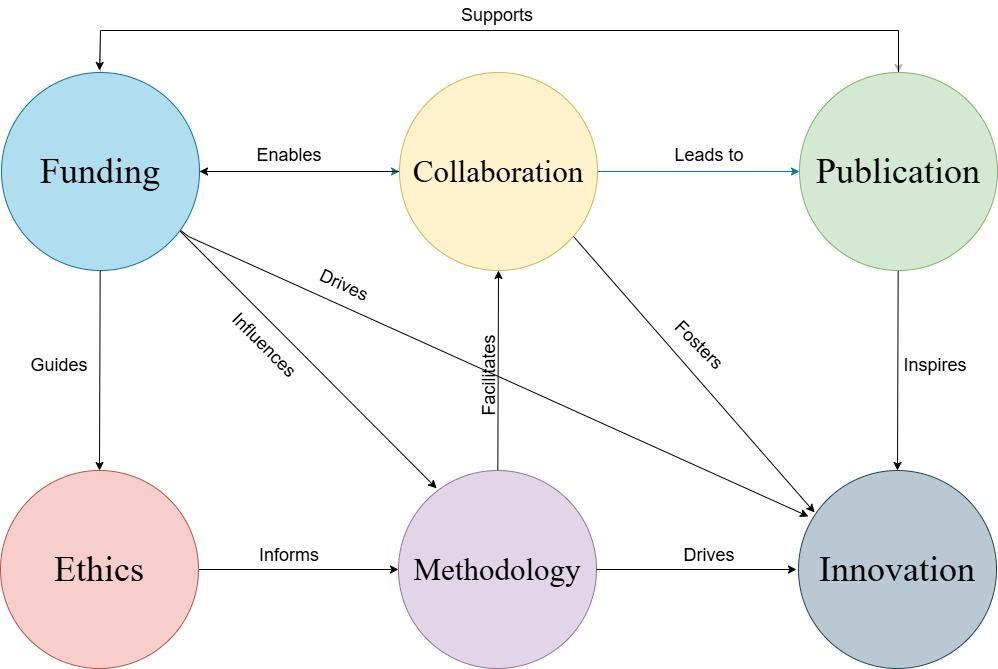
Edgar and Geare (2011) further weigh in on six “on-the-ground” components that characterise a robust research culture in HEIs: (i) a shared commitment to research excellence; (ii) clear research goals and strategies; (iii) adequate resources and support for research activities; (v) recognition and reward for research achievements; (vi) opportunities for collaboration and mentorship; and (vi) a balance between research, teaching, and other academic responsibilities.
However, the success of these components and the overall research culture depends on “buy-in” from stakeholders, especially faculty members. Faculty members are central to research culture: they attract funding, conduct research, and stimulate the production of new knowledge through mentoring research students and junior colleagues. Faculty are expected to hold the necessary values and beliefs and exhibit behaviours that allow the top-down research culture from HE management to flourish. However, the top-down nature of a research culture and the fact it is a learned, potentially engrained behaviour means it is open to tensions, challenges, and a sense of dissatisfaction from faculty (Cheetham, 2007).
Research Evaluation Systems and Their Role in Maintaining and Shaping
Research Cultures
The six components listed by Edgar and Geare (2011) in shaping research cultures, such as commitment to excellence, adequate resources, and support for collaboration, are dynamic and subject to individual change and have the potential to impact each other over time. Furthermore, research culture(s) and the performance they yield vary widely across countries, among groups of similarly oriented countries, and in nations that “aspire” to emulate the research success of other regions. However, comparisons between countries are often difficult as each country has its own research evaluation system.
| Rating | Definition |
|---|---|
| 4* | Quality that is world-leading in terms of originality, significance and rigour. |
| 3* | Quality that is internationally excellent in terms of originality, significance and rigour but which falls short of the highest standards of excellence. |
| 2* | Quality that is recognised internationally in terms of originality, significance and rigour. |
| 1* | Quality that is recognised nationally in terms of originality, significance and rigour. |
| Unclassified | Quality that falls below the standard of nationally recognised work. Or work which does not meet the published definition of research for the purposes of this assessment. |
Despite these differences, in our three respective countries of the UK, Australia, and Saudi Arabia, there are frameworks in place to measure research on a local and international footing. In the UK, the Research Excellence Framework (REF henceforth) serves as the primary evaluation mechanism that all universities participate in. REF evaluates broad disciplinary areas, requiring those on research-focused employment contracts to submit selected research outputs for evaluation. It aims to offer a robust and transparent mechanism for evaluating research quality across UK universities. Table 1.1 illustrates the rating scale applied to research outputs under the REF framework.
Despite its widespread influence, the REF has attracted significant criticism regarding its methodology, impact, and broader implications for the research landscape. A primary criticism levied against the REF concerns its reliance on bibliometric indicators to assess research quality. While supporters argue that metrics like citation counts provide an objective measure of research impact, critics believe that this approach privileges certain disciplines and publication practices over others. For example, research in the humanities and social sciences, often published as monographs or in non-English language journals, typically garners fewer citations compared to STEM fields (Bahji et al., 2023). This inherent bias within bibliometric analysis raises questions about the fairness and inclusivity of the REF, potentially disadvantaging certain disciplines and hindering diversity in research outputs.
Beyond methodological concerns, the REF has been criticised for its impact on university research cultures. The high stakes associated with REF outcomes, including significant financial rewards and reputational gains, have fostered a hyper-competitive environment, where chasing a high university ranking almost becomes fetish-like (Moore et al., 2017). This pressure can drive researchers to prioritise alignment with REF requirements over intellectual curiosity, potentially stifling innovation, and discouraging risk-taking in research endeavours.
In Australia, a similar research evaluation exercise exists in the Excellence in Research for Australia (ERA) framework. Since its introduction in 2010, the ERA framework aims to benchmark Australian research against international standards, create incentives to improve research quality, and identify emerging research areas and opportunities for further development (Australian Research Council, 2018). Like the REF, the ERA uses multiple metrics and expert reviews from internationally recognised experts. Some of the metrics used include citation analysis, peer review of a sample of research outputs, and additional quantitative measures such as research income and patents. However, similar concerns to the REF have been raised with the metrics used disadvantaging humanities and social science disciplines because not all of the metrics are favoured in these disciplines like traditional natural sciences (Martin-Sardesai et al., 2017). There is also concern that this metric-based approach encourages short-term, output-focused research agendas over long-term, impactful research, with some arguing that the system’s demands can compromise researchers’ intrinsic motivation for inquiry (Kidd et al., 2021; Sandel, 2012).
In Saudi Arabia, the research evaluation system is less established and less centralised than that of the UK and Australia, with various regulatory bodies playing a role in promoting academic rigour. For example, the Education and Training Evaluation Commission (ETEC) have been evaluating education and training qualifications since 2018, while the National Science, Technology and Innovation Plan (NSTIP) has been evaluating research outputs geared towards science and technological innovation since 2008 (Alshayea, 2013). More recently, the Saudi Universities Commission/Council of Universities Affairs (SUC) has begun setting quality standards and research performance evaluation across universities (SUC, 2021). These initiatives align with the Kingdom’s drive to be an innovation and knowledge-driven society.
This overview highlights the complex interplay between the components of any particular research cultures and the frameworks that evaluate them. Each evaluation system inevitably shapes the priorities and practices within its research culture, influencing how research is carried out across various academic disciplines, including applied linguistics and TESOL. In the next section, we explore how specific research agendas and trends have emerged in this landscape and examine the evolving role of research cultures in shaping these disciplines.
1.3Research Agendas and Trends in Applied Linguistics and TESOL
In this book, we are concerned with applied linguistics and TESOL. Both of these disciplines engage with the study of language acquisition, use, and pedagogy, drawing from linguistics, psychology, and education to inform their theoretical and practical frameworks. They share a commitment to understanding how language functions in diverse social and cultural contexts, as well as how it can be effectively taught and learned. Additionally, both fields have increasingly embraced interdisciplinary approaches, integrating insights from technology, policy studies, and cognitive sciences to address evolving linguistic and educational challenges. While TESOL is primarily focused on the teaching and learning of English, applied linguistics involves a wider range of language-related inquiries, including discourse analysis, language assessment, and sociolinguistics. Despite these distinctions, both fields are shaped by similar external pressures, particularly those imposed by shifting institutional priorities, research evaluation frameworks, and the global demand for English proficiency. As universities recalibrate their focus in response to economic and political shifts, research cultures in both applied linguistics and TESOL have to constantly navigate their evolving disciplinary boundaries, funding structures, and the broader implications of neoliberal higher education policies.
Both applied linguistics and TESOL have experienced enormous growth internationally since the mid 20th century until now, driven by an increasing need for English speakers and understanding how language functions as a communication tool across cultures (Kramsch, 1998). Within this growth, several lines of research have emerged, challenging traditional conceptions of language structure (Chomsky, 1957), language acquisition, and language change. These trends include the development of behaviourist, audio-lingual, and communicative methods in language learning (Hymes, 1972); the role of computer-assisted language learning (CALL) (Collett, 1980); and the study of language through large-scale corpora of spoken and written texts (Biber et al., 1998). Moreover, there has been an increasing interest in the social, cultural, and political dimensions of language learning and use, as reflected in the seminal work of Norton (2000) and Pennycook (2001) and work such as Canagarajah (2016), Flores and Rosa (2015) and Brunfaut (2023) which questions issues of equity and access in language learning, teaching, and assessment.
While these research agendas and trends continue to shape research in the field, they now do so within increasingly difficult research cultures. At the time of writing in late October 2024, the inter-related fields of applied linguistics and TESOL are representatives of a wider political attack on arts and humanities as a discipline with their status facing significant threats (Bell, 2021). Broadly speaking, in western HE, the number of courses, staff, and subsequently, students’ enrolments in applied linguistics and TESOL programmes are falling at an alarming rate as the typical neoliberal university model crumbles and re-evaluates its priorities (Neilsen et al., 2020). This current situation stands in stark contrast to the “boom” that this model has previously achieved. In the past three decades especially, these two fields have been the subject of unprecedented interest as a study and career option and they have gone on to form the backbone of disciplinary study in English (Steele et al., 2024). More narrowly, this drive to capture these students has focused on international students, with several universities targeting these students as they pay vast amounts in fees and accommodation and contribute to local economies (Steele et al., 2024). In response, universities have also maximised their ability to capitalise on the profitability of international students by increasingly relying on casually employing faculty on typically fixed terms or other precarious contract types which offer few benefits (Goodman et al., 2023).
This somewhat bleak picture is evidenced by the enormous number of redundancies, both voluntary and compulsory, that have taken place in UK universities in the last three to five years (Universities and Colleges Union, 2024; Weale, 2022). Similar patterns are also evident in the USA (Moody, 2024), Australia (Owens et al., 2022), and Canada (Nash, 2024), where arts and humanities programmes have been reduced or removed from universities due to political policy changes and/or the preference for (international) students to study alternative options in alternative locations. For example, there is now a downturn in international student numbers in UK HE in favour of studying elsewhere because of the UK’s immigration and visa policies (Bolton et al., 2024). There is also a slight but growing shift in the attraction of English-medium programmes in other countries such as China (see Xu et al., 2024) while the learning of Chinese itself is on the rise in previously English as a medium of instruction (EMI) heavy contexts as other languages attract interest (e.g., see the rise of Chinese in Saudi Arabia in Hersi et al., 2024).
Yet, it is important to appreciate that the predicament of these Western contexts is also experienced across the Global South, where scholars strive to comply and keep up with Western academic ideologies while also working within the same wide reaching neoliberal university model. This includes the prevalence of unstable precarious work offers and conditions with the added strain of politically challenging contexts (Heleta & Bagus, 2021), and the expectation of maintaining an academic research track record with work published via “Big Publisha” which is on par with Global North counterparts, adhering to the “publish or perish” paradigm that dominates academia (Al-Hoorie, 2024).
Despite these constraints, researchers in applied linguistics and TESOL continue to conduct world-leading high-impact academic research and drive innovation in their fields. Indeed, many scholars, irrespective of their geographical locations, have not only risen to this challenge but continue to surpass expectations. There are now multiple initiatives underway in applied linguistics and TESOL to promote carrying out ethical and rigorous research and in doing so, allow that research to be professionally showcased in these fields and beyond.
In the penultimate section below, we provide a snapshot of field-leading initiatives which illuminate how research cultures are being created from within and beyond institutions. The initiatives below are not tied to one specific institution and are instead created to promote better research practices in applied linguistics and TESOL communities globally. The principles underlying these efforts offer a broad framework that institutions would do well to adopt, supporting the development of sustainable and impactful research cultures within and beyond academia.
1.4Initiatives that Resist Established Research Cultures and Promote Alternatives
1.4.1Initiative 1: Data and Knowledge Sharing via Resource Repositories
One prominent movement in the field of applied linguistics and TESOL involves enhancing data and knowledge sharing through open-access repositories. The rationale behind data sharing is a simple one: researchers make their datasets and related research instruments available to users on a repository. Applied linguistics and TESOL now have an impressive range of repositories with which to store their datasets and research instruments. One field-leading and longest-serving repository in this respect is IRIS (Instruments for Research Into Second Languages) (Marsden & Mackey, 2014; Marsden et al., 2016). IRIS facilitates the uploading and downloading of any data collection instrument or dataset associated with a peer-reviewed piece of research, including doctoral-level theses and multimedia resources, which allows greater research quality, study replication, and data collection instrument improvements and context-specific adaptations (Marsden & Mackey, 2014; Marsden et al., 2016).
Three other initiatives which focus on knowledge sharing have also gained traction in recent years within applied linguistics and TESOL: OASIS (Open Accessible Summaries in Language Studies) repository, TESOL Graphics, and the TBLT (Task-Based Language Teaching) Language Learning Task Bank at Indiana University (Gurzynski-Weiss & IATBLT, 2024). The OASIS, for instance, provides accessible summaries of research studies, enabling a broader audience to engage with findings without requiring full access to academic journals (Marsden et al., 2018), which is vital for scholars in contexts with very limited or no access to databases. These repositories collectively emphasise the value of open data and knowledge sharing, driving more equitable access to resources and encouraging collaboration within the research community.
1.4.2Initiative 2: The Post-print Pledge
The Post-print Pledge, initiated by Ali Al-Hoorie (https://www.ali-alhoorie.com/postprint-pledge), is an open scholarship initiative that promotes accessibility by simply encouraging researchers to “pledge” to share the accepted version of every article published in compliance with publishers’ copyright policies. The post-print version of a publication is the accepted version of the work, known as the author accepted manuscript (AAM). This accepted version excludes final copyediting but retains the full research content, allowing it to be freely accessible to the public (Al-Hoorie & Hiver, 2023). By February 2025, around 130 international researchers had joined the pledge, committing to share their post-prints. This initiative mitigates the high cost associated with subscription-based journals and helps to democratise access to research findings by making scholarly work more readily available.
1.4.3Initiative 3: The Open Applied Linguistics Network to Promote Open Scholarship
Open Applied Linguistics is an international research network which was created in 2022. It is affiliated with The International Association of Applied Linguistics (AILA) and aims to promote open scholarship within the field of applied linguistics. The network operates on an understanding that open scholarship involves the following activities: (i) making scholarly knowledge openly available, accessible, and reusable, (ii) increasing scholarly collaborations and information sharing, and (iii) opening the processes of scholarly knowledge creation, evaluation, and communication (Liu et al., 2023). As a research network, Open Applied Linguistics regularly hosts webinars and a reading club, offering an interactive platform for researchers to engage with open scholarship practices. By encouraging global participation, the network strives to build a more inclusive research culture that benefits from diverse perspectives across geographical and disciplinary boundaries.
Initiative 4: Open Access Publishing: The Applied Linguistics Press
Many initiatives we have highlighted have emerged as a direct response to, and a countermeasure against, the commodification of academic knowledge and intellectual property. The first three initiatives not only seek to adhere to principles of open science, but they also go against the grain of what “mainstream” academic publishers represent. Mainstream academic publishers represent a business model which publishes academic knowledge primarily in the form of journal articles and books and charges readers for access to that knowledge (Collyer, 2018; Schiffrin, 2001). In return for their hard work, academics are often paid paltry royalties or one-off payments which do not reflect their hard work or the “cost” of that knowledge in terms of the years spent researching their chosen specialisation. The first three initiatives aim to provide free access to scholarly knowledge with merely a published academic research piece.
In 2023, Luke Plonsky launched Applied Linguistics Press, a dedicated open-access publisher for applied linguistics and related sub-fields, including TESOL. This publisher adheres to principles and practices of open science and promoting fairness for authors, reviewers, and editors, and increasing the awareness and visibility of applied linguistics research for both academic and public audiences. The Press publishes books in digital formats at no cost to readers or authors and also encourages multimedia and non-traditional text types, such as datasets, which go beyond conventional text-based articles and books. This approach contrasts with mainstream publishers, who often impose strict limits on word count, tables, figures, and multimedia elements. It also contrasts with many other open access publishers who charge authors enormous fees to publish their work with the latter coming to perhaps expect that any quality of work will be published once the feeds have been settled. The Press’s innovative model is poised to make scholarly knowledge in applied linguistics more accessible and adaptable to various formats, broadening the impact of research in the field.
1.5Conclusion
In examining the interplay between research evaluation systems, evolving research cultures, and emergent initiatives in applied linguistics and TESOL, this chapter highlights the complex dynamics shaping contemporary academic landscapes. Evaluation frameworks, while essential for establishing research standards and benchmarks, have introduced pressures that can compromise intellectual curiosity and inclusivity, particularly in disciplines like arts and humanities. The REF in the UK, the ERA in Australia, and other international evaluation systems exemplify both the potential and the challenges of standardised research assessments. While these frameworks aim to promote high-quality scholarship, they also introduce competitive pressures that can skew research priorities toward easily measurable outputs, inadvertently marginalising fields less suited to bibliometric measures.
Against this backdrop, applied linguistics and TESOL have navigated significant challenges, including decreasing enrolment, funding cuts, and shifting priorities in higher education. The impact of these trends is felt not only in Western academic institutions but also across the Global South, where scholars face additional constraints within politically and economically challenging contexts. Yet, despite these challenges, initiatives within the fields of applied linguistics and TESOL have emerged to promote equitable and open research practices, often resisting the neoliberal norms of mainstream academic publishing. Platforms like IRIS and OASIS, the Post-print Pledge, and the establishment of Applied Linguistics Press exemplify innovative responses to the restrictive models of conventional academic publishing. These initiatives emphasise open access, collaboration, and resource sharing, fostering a more inclusive and adaptable research culture that benefits scholars and practitioners globally.
The continued success of applied linguistics and TESOL will likely depend on the sustained growth of such alternative initiatives, which prioritise ethical scholarship, accessibility, and interdisciplinarity. As these fields move forward, embracing open scholarship and resisting the constraints of traditional evaluation metrics will be essential to maintaining intellectual diversity and fostering meaningful contributions to global knowledge. Through a renewed commitment to these principles, applied linguistics and TESOL can remain responsive to the evolving demands of a globalised, multilingual world, advancing research that is both impactful and accessible to broader audiences.
References
Al-Hoorie, A. H. (2024). The moral schizophrenia in the fight against Big Publisha. Dutch Journal of Applied Linguistics, 13. https://doi.org/10.51751/dujal19167
Al-Hoorie, A. H., & Hiver, P. (2023). The Postprint Pledge – Toward a culture of researcher-driven initiatives: A commentary on “(why) are open research practices the future for the study of language learning?”. Language Learning, 73(S2), 388-391. https://doi.org/10.1111/lang.12577
Alshayea, A. (2013). Scientific research in the Kingdom of Saudi Arabia: Potential for excellence and indicators of underdevelopment. Higher Education Studies, 3(5), 47-51. http://dx.doi.org/10.5539/hes.v3n5p47
Australian Research Council. (2018). Standard: Excellence in Research for Australia (ERA) and Engagement and Impact (EI) 2018 outcomes. Australian Research Council. https://www.arc.gov.au/standard-excellence-research-australia-era-and-engagement-and-impact-ei-2018-outcomes
Bahji, A., Acion, L., Laslett, A. M., & Adinoff, B. (2023). Exclusion of the non-English-speaking world from the scientific literature: Recommendations for change for addiction journals and publishers. Nordic Studies on Alcohol and Drugs, 40(1), 6-13. https://doi.org/10.1177/14550725221102227
Bell, D. E. (2021). Accounting for the troubled status of English language teachers in Higher Education. Teaching in Higher Education, 28(8), 1831–1846. https://doi.org/10.1080/13562517.2021.1935848
Biber, D., Conrad, S., & Reppen, R. (1998). Corpus linguistics: Investigating language structure and use. Cambridge University Press.
Bolton, P., Lewis, J., & Gower, M. (2024). International students in UK higher education. Common Library. https://researchbriefings.files.parliament.uk/documents/CBP-7976/CBP-7976.pdf
Busch, L. (2023). Knowledge for sale: The neoliberal takeover of higher education. The MIT Press.
Cheetham, A. (2007, May 4). Growing a research culture. University of Western Sydney. https://docdrop.org/download_annotation_doc/Item_3.6_Building_a_Research_Culture__Tabled_Doc-7qfos.pdf
Chomsky, N. (1957). Syntactic structures. Mouton.
Collett, M.J. (1980). Examples of applications of computers to modern language study 1: The step-wise development of programs in reading, grammar, and vocabulary. System, 8(3), 195-204. https://doi.org/10.1016/0346-251X(80)90001-9
Collyer, F. M. (2018). Global patterns in the publishing of academic knowledge: Global North, global South. Current Sociology, 66(1), 56-73. https://doi.org/10.1177/0011392116680020
Davies, B., Gush, J., Hendy, S. C., & Jaffe, A. B. (2022). Research funding and collaboration. Research Policy, 51(2), 104421. https://doi.org/10.1016/j.respol.2021.104421
Eckel, P. D. (2002). Decision rules used in academic program closure: Where the rubber meets the road. The Journal of Higher Education, 73(2), 237-262. https://doi.org/10.1080/00221546.2002.11777142
Edgar, F., & Geare, A. (2011). Factors influencing university research performance. Studies in Higher Education, 38(5), 774-792. https://doi.org/10.1080/03075079.2011.601811
Evans, L. (2012). Leadership for researcher development: What research leaders need to know and understand. Educational Management Administration & Leadership, 40(4), 423-435. https://doi.org/10.1177/1741143212438218
Flores, N., & Rosa, J. (2015). Undoing appropriateness: Raciolinguistic ideologies and language diversity in education. Harvard Educational Review, 85(2), 149-171. https://doi.org/10.17763/0017-8055.85.2.149
Giroux, H. A. (2002). Neoliberalism, corporate culture, and the promise of higher education: The university as a democratic public sphere. Harvard Educational Review, 72(4), 425-464. https://doi.org/10.17763/haer.72.4.0515nr62324n71p1
Giroux, H. A. (2014). Neoliberalism's war on higher education. Haymarket Books.
Goodman, J., Parfitt, C., Yasukawa, K., & Connell, R. (2023). The transformation of academic work. Palgrave Macmillan.
Grabe, W. (2010). Applied linguistics: A twenty-first-century discipline. In R. B. Kaplan (Ed.), The Oxford handbook of applied linguistics (2nd ed., pp. 34-44). Oxford University Press.
Gurzynski-Weiss, L., & IATBLT (n.d.). The TBLT Language Learning Task Bank. https://tblt.indiana.edu
Hawkins, M. R., & Mori, J. (2018). Considering ‘Trans-’ perspectives in language theories and practices. Applied Linguistics, 39(1), 1–8, https://doi.org/10.1093/applin/amx056
Heinze, T., Shapira, P., Rogers, J. D., & Senker, J. M. (2009). Organizational and institutional influences on creativity in scientific research. Research Policy, 38(4), 610-623. https://doi.org/10.1016/j.respol.2009.01.014
Heleta, S., & Bagus, T. (2021). Sustainable development goals and higher education: Leaving many behind. Higher Education, 81(1), 163-177. http://dx.doi.org/10.1007/s10734-020-00573-8
Hersi, M., Alzahrani, A., Alharbi, M., & Qadi, A. (2024). Desiring Chinese as a foreign language policy in Saudi Arabia. Journal of Multilingual and Multicultural Development, 46(1), 10-25. https://doi.org/10.1080/01434632.2024.2393706
Hill, R. (1999, July 12-15). Revisiting the term “Research Culture” [Conference presentation]. HERDSA Annual International Conference, Melbourne, Australia. www.reconstrue.co.nz/RevisitCult.pdf.
Howatt, A. P. R., & Widdowson, H. G. (2004). A history of English language teaching (2nd ed.). Oxford University Press.
Hymes, D. (1972). On communicative competence. In J. B. Pride & J. Holmes (Eds.), Sociolinguistics: Selected readings (pp. 269-293). Penguin.
Kara, H. (2019). Research ethics in the real world: Euro-Western and indigenous perspectives. Bristol University Press.
Kidd, I. J., Chubb, J., & Forstenzer, J. (2021). Epistemic corruption and the research impact agenda. Theory and Research in Education, 19(2), 148-167, https://doi.org/10.1177/14778785211029516
Knorr Cetina, K. (1999). Epistemic cultures: How the sciences make knowledge. Harvard University Press.
Kramsch, C. (1998). Language and culture. Oxford University Press.
Liu, M., Chong, S. W., Marsden, E., McManus, K., Morgan-Short, K., Al-Hoorie, A. H., … Hui, B. (2023). Open scholarship in applied linguistics: What, why, and how. Language Teaching, 56(3), 432–437. https://doi.org/10.1017/S0261444822000349
Marmot, A. (2015, Sep 21). Flashy university buildings: Do they live up to the hype? The Guardian. https://www.theguardian.com/education/2015/sep/21/flashy-university-buildings-do-they-live-up-to-the-hype
Marsden, E., & Mackey, A. (2014). IRIS: A new resource for second language research. Linguistic Approaches to Bilingualism, 4(1), 125-130. https://doi.org/10.1075/lab.4.1.05mar
Marsden, E., Mackey, A., & Plonsky, L. (2016). The IRIS repository: Advancing research practice and methodology, In A. Mackey & E. Marsden (Eds.), Advancing methodology and practice: The IRIS repository of Instruments for Research into Second languages (pp. 1-20). Routledge.
Marsden, E., Alferink, I., Andringa, S., Bolibaugh, C., Collins, L., Jackson, C., ... & Plonsky, L. (2018). Open accessible summaries in language studies (OASIS)[database]. https://www. oasis-database.org
Martin‐Sardesai, A., Irvine, H., Tooley, S., & Guthrie, J. (2017). Accounting for research: Academic responses to research performance demands in an Australian university. Australian Accounting Review, 27(3), 329-343. https://doi.org/10.1111/auar.12151
Ministry of Economy and Planning. (2012). National science, technology and innovation plan: Project setup regulations. https://npst.ksu.edu.sa/sites/npst.ksu.edu.sa/files/imce_images/Governing%20Rules%20Part-II%20%28English%29.pdf
Moody, J. (2024, June 7). A rough month for campus cuts. Inside Higher Ed. https://www.insidehighered.com/news/business/cost-cutting/2024/06/07/rough-month-campus-cuts
Moore, S., Neylon, C., Paul Eve, M., Paul O’Donnell, D., & Pattinson, D. (2017). “Excellence R Us”: university research and the fetishisation of excellence. Palgrave Communications, 3, 16105. https://doi.org/10.1057/palcomms.2016.105
Nash, P. (2024, May 2). Higher ed policies drive layoffs and cuts in the UK, Australia and Canada. The PIE News, https://thepienews.com/layoffs-cuts-uk-australia-canada-higher-ed-policies-take-hold/
Neary, M., & Saunders, G. (2011). Leadership and learning landscapes: The struggle for the idea of the university. Higher Education Quarterly, 65(4), 333-352. https://doi.org/10.1111/j.1468-2273.2011.00494.x
Neilsen, R., Weinmann, M., & Arber, R. (2020). Editorial: Teaching and learning English in the age of COVID-19: Reflecting on the state of TESOL in a changed world. TESOL in Context, 29(2), 1-13. https://doi.org/10.21153/tesol2020vol29no2art1427
Newfield, C. (2008). Unmaking the public university: The forty-year assault on the middle class. Harvard University Press. https://doi.org/10.2307/j.ctv1cbn3np
Newfield, C. (2021). Universities after neoliberalism. A tale of four futures, Radical Philosophy, 2(10), 77-86. https://www.radicalphilosophy.com/wp-content/uploads/2021/07/rp210_newfield.pdf
Norton, B. (2000). Identity and language learning: Gender, ethnicity and educational change. Longman.
Owens, A., Loomes, S., Kearns, M., & Mahoney, P. (2022). Restructures, redundancies and workforce downsizing: Implications for Australian higher education sector post COVID-19. The Australian Universities’ Review, 64(2), 7-14. https://files.eric.ed.gov/fulltext/EJ1389656.pdf
Pennycook, A. (2001). Critical applied linguistics: A critical introduction. Lawrence Erlbaum.
Resnik, D. B., & Elliott, K. C. (2016). The ethical challenges of socially responsible science. Accountability in Research, 23(1), 31-46. https://doi.org/10.1080/08989621.2014.1002608
Salazar, M. R., Lant, T. K., Fiore, S. M., & Salas, E. (2012). Facilitating innovation in diverse science teams through integrative capacity. Small Group Research, 43(5), 527-558. https://psycnet.apa.org/doi/10.1177/1046496412453622
Sandel, M. (2012). What money can’t buy: The moral limits of markets. Penguin.
Saudi Universities Commission/Council of Universities Affairs. (2021). https://www.my.gov.sa/wps/portal/snp/agencies/agencyDetails/AC558/!ut/p/z0/04_Sj9CPykssy0xPLMnMz0vMAfIjo8zivQIsTAwdDQz9LQwNzQwCnS0tXPwMvYwNDAz0g1Pz9L30o_ArAppiVOTr7JuuH1WQWJKhm5mXlq8f4ehsamqhX5DtHg4AYlIK3Q!!/
Schiffrin, A. (2001). The business of books: How the international conglomerates took over publishing and changed the way we read. Verso.
Seidlhofer, B. (2011). Understanding English as a lingua franca. Oxford University Press.
Steele, C., Tankosić, A., & Dovchin, S. (2024). English medium instruction or exploitative models of income? International students’ experiences of EMI by default at an Australian university. Journal of English as a Lingua Franca, 13(1), 73-94. https://doi.org/10.1515/jelf-2024-2011
Temple, P. (2008). Learning spaces in higher education: An under-researched topic. London Review of Education, 6(3), 229-241. https://doi.org/10.1080/14748460802489363
Tight, M. (2012). Researching higher education (2nd ed.). Open University Press.
Tight, M. (2019). The neoliberal turn in higher education. Higher Education Quarterly, 73(3), 273-284. https://doi.org/10.1111/hequ.12197
Torrance, H. (2020). The Research Excellence Framework in the United Kingdom: Processes, consequences, and incentives to engage. Qualitative Inquiry, 26(7), 771-779. https://doi.org/10.1177/1077800419878748
Universities and Colleges Union. (2024). UK HE shrinking. UCU – Queen Mary University of London. https://qmucu.org/qmul-transformation/uk-he-shrinking/
Watermeyer, R., Crick, T., Knight, C., & Goodall, J. (2021). COVID-19 and digital disruption in UK universities: Afflictions and affordances of emergency online migration. Higher Education, 81(3), 623-641. https://doi.org/10.1007/s10734-020-00561-y
Weale, S. (2022, Nov 14). Dismay at threat of ‘devastating’ job cuts at Birkbeck, University of London. The Guardian. https://www.theguardian.com/education/2022/nov/13/dismay-at-threat-ofdevastating-job-cuts-at-birkbeck-university-of-london
Wilkins, S., & Huisman, J. (2012). The international branch campus as transnational strategy in higher education. Higher Education, 64, 627–645. https://doi.org/10.1007/s10734-012-9516-5
Wilkins, S., Balakrishnan, M. S., & Huisman, J. (2012). Student satisfaction and student perceptions of quality at international branch campuses in the United Arab Emirates. Journal of Higher Education Policy and Management, 34(5), 543-556. https://doi.org/10.1080/1360080X.2012.716003
Wilsdon, J., Allen, L., Belfiore, E., Campbell, P., Curry, S., Hill, S., … Wouters, P. (2015). The metric tide: Report of the independent review of the role of metrics in research assessment and management. Higher Education Funding Council for England, https://doi.org/10.13140/RG.2.1.4929.1363
“Available Upon Reasonable Request”: A Case Study of the Open Data Culture in Three Language Learning Journals
Abstract
This chapter examined data sharing culture by reviewing all papers published between September 2022 and January 2024 in three top applied linguistics journals: The Journal of Second Language Writing (SLW; n = 91), Language Learning (LL; n = 131) and Studies in Second Language Acquisition (SLA; n=80). All three journals require the disclosure of data-sharing practices when papers are submitted. LL and SLA allow authors to obtain a badge by sharing their data, while SLW requires authors to indicate data availability with a statement. We found that 44.74% (n = 34) of authors in LL and 28.75% in SLA shared their data, but only 3.85% (n = 2) of authors in SLW did so. We argue journals with the badge system have a higher proportion of articles sharing their data, so journals should promote it and encourage authors to participate.
Keywords: Data sharing, Open Science (OS), Language learning, Badge system
2.1Introduction
Over the past decade, the Open Science (OS) movement has become integral to various fields of scientific inquiry. OS is characterised by making information available, accessible, and reusable (Al-Hoorie et al., 2024) and democratising the knowledge creation, evaluation, and communication processes (UNESCO, 2021). The cornerstone of OS is transparency, which enhances accessibility, visibility, and rigour (Marsden, 2020). In applied linguistics, for example, methodological transparency ensures that all empirical results are valid and reproducible. Openly sharing materials (e.g., datasets, survey results, findings) facilitates replication, promotes cumulative analyses, and fosters innovation in new contexts (e.g., Nosek et al., 2015). Especially in qualitative research, achieving this degree of transparency requires significant preparation and caution with regard to privacy and confidentiality.
Methodological transparency has many advantages. First, it establishes confidence in the results of a study and its applications. It also enables peer reviewers to conduct critical assessments, gives journals a clear picture of the studies they publish, and helps professional associations make more informed decisions. Therefore, transparency preserves the integrity of a field and fulfils the ethical obligation to disseminate knowledge responsibly (e.g., Gennetian et al., 2020; Ortega, 2005; Schroeder et al., 2023). It also promotes collaborative and trustworthy research environments. One crucial way to achieve transparency is data sharing, which allows researchers to build upon existing studies and verify their findings through replication, thereby expanding the collective knowledge.
This chapter further examines the data-sharing practices in applied linguistics journals to cultivate an OS culture among researchers in the field.
2.2Literature Review
Data sharing leads to greater reproducibility, but it also brings some challenges. Some significant barriers to data sharing include the varying standards of fields, journals, and organisations and the need to protect personal information (Hicks, 2023). Applied linguistics researchers can navigate these challenges by participating in specialised training about ethical data sharing and informed consent processes, which are crucial for responsible data management and privacy (Al-Hoorie et al., 2024; Hicks, 2023). Using simulated data (i.e., data created using a model) is another way to preserve privacy without sacrificing integrity (In’nami et al., 2022). Researchers must remain committed to data protection to remain credible and respectful (Zipper et al., 2019).
To realise the principles of the OS movement, specialised platforms for data sharing have also been created, including the Instruments for Research Into Second Languages (IRIS; Mackey & Marsden, 2016) database, Open Science Framework, OASIS (Open Accessible Summaries in Language Studies), Figshare, and Data Planet. IRIS is used for applied linguistics research. Many platforms are affiliated with publishers; for example, Data Planet is affiliated with Sage. They permit researchers to embrace OS in various ways, either by sharing only their materials or all of their data.
While there are no formal requirements for authors to participate in data sharing, the practice is encouraged. For example, 39 journals recommend using IRIS (n.d.) in their acceptance letters or author guidelines. Incentives for researchers who embrace OS have also been introduced. Journals support data sharing by assigning a badge to each published manuscript or giving authors the option to declare their data sharing practices.
The Center for Open Science (COS, n.d.) advocates a badge scheme as the best way to acknowledge researchers’ commitment to the principles of the movement. This scheme is supported by over 100 journals, including prestigious applied linguistics journals such as Language Learning and The Modern Language Journal. Authors apply for a badge by completing a disclosure form as part of the manuscript submission process; they can also opt out of this process, declining to reveal whether they have shared their data. Each manuscript published in such journals includes a section indicating if it has received the “Open Data,” “Open Materials” and/or “Preregistered” badges (see Figure 2.1).
To be eligible for the “Open Data” badge, the research must be shared with the public through a permanent link and the shared material must be sufficient to allow an independent researcher to recompute all of the original results. For the “Open Materials” badge, there must be a permanent, publicly available way to access the materials used in the research. The “Preregistered” badge indicates that the research procedures/plans have been pre-registered before conducting the study. In such a case, authors should determine their intention: either they want to conduct an exploratory study or a confirmatory study, but not both.
Other journals instead make it mandatory for authors to declare their data-sharing practices. Such journals include The International Journal of Educational Technology in Higher Education (n.d.), Applied Psycholinguistics (n.d.), and The Journal of Second Language Writing. If an author does not declare the availability of their data, the manuscript is returned.
These practices suggest a general shift towards greater transparency in research. To examine data-sharing culture more particularly, two lines of research deserve attention: (1) the prevalence of replication studies and (2) the existence of studies evaluating journals’ data-sharing policies. First, replication studies in applied linguistics are infrequent compared to other disciplines (e.g., Foung & Kohnke, 2023; Nicklin & Plonsky, 2020). While Marsden et al. (2018a, b) revealed that more studies (i.e., 20) were conducted between 2010 and 2015 than between 1973 and 1999, 17 replication studies using the original data set to re-analyse/re-interpret the data (i.e., exact replication) remain rare. In addition, many existing studies have called for authors to share their data more openly (e.g., Foung & Kohnke, 2023). Studies in Second Language Acquisition has recently (in 2024) published a special issue devoted to replication studies.
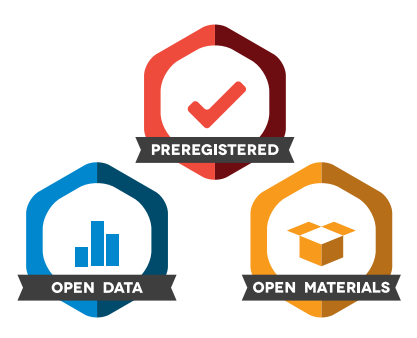
Second, some studies have found that the badge system is promising. Kidwell et al. (2016) compared the availability of the data from empirical research articles in reputable psychology journals published between 2012 and 2015. The study had two aims: compare the number of articles in one journal releasing their data before and after the introduction of the badge system in 2014 and compare it to four other journals that did not introduce the badge system. They found that the journal that introduced the badge system saw a 20.3% increase (from 2.5% to 22.8%), but the other journals saw a slight decrease (from 3.3% to 2.1%). They concluded that a simple badge system promotes data-sharing practices in psychology. However, Crüwell et al. (2023) recently examined 14 studies in a psychology journal and found that some did not deserve to earn a badge, as the data shared was insufficient to replicate all of the results.
Despite studies on the effectiveness of the badge system in other disciplines, similar studies in applied linguistics are lacking. It is necessary to investigate whether the policies adopted by various journals in this field cultivate a robust culture of data sharing. This study aims to fill this gap by examining the practices of researchers published in two journals with different data-sharing practices (i.e., badge and mandatory). The specific research questions are:
- Do more researchers share their data in journals using a badge system than those using a data availability statement?
- How effective and complete is the data that the authors share?
2.3Methods
2.3.1Research Design
This study aims to identify a general trend of data-sharing practices in applied linguistics and thus adopts a positivist approach. However, we acknowledge that these practices vary based on sub-discipline and author. For example, in applied linguistics, some authors may believe referring readers to raw language data (e.g., an online blog post) is sufficient. In addition, culture is a subjective construct; we may perceive it differently than other scholars. For example, the concept of ‘openness’ is ambiguous and debatable. Therefore, despite its positivist approach, this study does not seek to identify ‘rules’ for data sharing but to explore actual practices. We purposely chose journals with different data-sharing policies. We retrieved all articles published between August 2022 and January 2024 and conducted data analysis.
2.3.1.1Journal Identification
In the initial search process, we needed to choose appropriate journals. We first identified the top 10 journals classified under ‘Language and Linguistics’ based on 2022 Scopus metrics. We then examined the title, aim, and scope of each. Only five related directly to language learning, the sub-discipline of applied linguistics in which we were interested. We then checked the submission portals and published manuscripts for information about their data-sharing policies. Only The Journal of Second Language Writing (SLW; ranked 9th) requires submissions to indicate their data-sharing practices explicitly and publishes this statement along with each manuscript. Language Learning (LL; ranked 8th) invites authors to participate in a badge system, displaying these badges on the published manuscripts. Language Teaching and Language Learning & Technology do not list any data-sharing requirements. While Computer Assisted Language Learning asks authors if their submission has an associated dataset, this information is not published, and no data availability statement is required.
As only two journals were identified in this initial process (i.e. SLW - no badge system; LL - badge system), we wanted more evidence from additional journals to strengthen the argument.
Therefore, we looked for the next language learning journal on the Scopus list that adopts the badge system: Studies in Second Language Acquisition (SLA; ranked 11th).
2.3.1.2Article Identification and Screening
We examined the articles published in the three journals. For SLW, only articles published in Volume 57 (September 2022) and later include data availability statements. To align with this timeframe, we limited the articles from Language Learning (LL) to those published in Volume 72 (September 2022) and later and limited the articles from Studies in Second Language Acquisition (SLA) to those from Issue 4 of Volume 44 (September 2022) and later. We then retrieved all articles from these three journals using the search/download function on Scopus. The search was conducted in February 2024, so no articles from after this time were included in the analysis. In total, 91 documents from SLW, 131 from LL, and 126 from SLA were retrieved and subjected to the data extraction process.
As some of the articles were book reviews, editorials, or commentaries, we identified those using empirical data based on (1) the section the article was in and (2) the abstract. After screening for articles without data, a total of 52 papers in SLW (57.14%), 76 in LL (58.02%), and 80 in SLW (63.49%) used some data. All analyses are based on these articles.
2.3.1.3Data Extraction
Because we aimed to examine data-sharing culture, we focused on this topic when collecting data. We examined the open research section of LL and data availability sections of SLW and SLA for information regarding whether and how data had been shared. We then recorded the data availability statements. If the paper provided a link, we visited it and examined the data further.
The original definition of ‘open data’ requires it to be publicly accessible without making a request or logging in to a system. Moreover, the data provided should be sufficient for independent researchers to replicate all of the original results. Although we used the links provided to examine the data, attempting to replicate the results of each study would have been outside the scope of our work. Therefore, we only considered whether (a) the data was accessible to the public, and (b) a spreadsheet with the relevant variables mentioned in the manuscript was provided. We grouped the studies into three categories (see Table 2.1).
| Category | Description |
|---|---|
| No Open Data Commitment | The article indicated that data were not available or did not mention it. |
| Open Data Commitment - Data Not Available | The article indicated that the data were available but no link was provided or the data were not accessible. |
| Open Data Commitment - Public Access | The data were accessible with the link provided. |
2.3.1.4Data Analysis
To examine the data-sharing culture in language learning studies, we adopted a descriptive approach to data analysis. Tables and visualisations were used to identify differences between the articles published in journals with different policies.
2.4Results and Discussion
This paper explores how journals’ data-sharing policies affect authors’ choices. Accordingly, we examined empirical articles published in three language learning journals between September 2022 and January 2024. All three journals require authors to indicate data availability during the submission process. LL and SLA ask authors to apply for a badge (e.g., the ‘Open Data’ badge); if the paper is eligible, the badge appears in the final published version. SLW requires all submissions to provide a data availability statement.
Figure 2.2 below uses a bar chart to illustrate how authors shared their data. Among the studies, 44.74% (n = 34) from LL and 28.75% (n = 23) from SLA made their data publicly accessible, while only 3.85% (n = 2) from SLW did so. Some shared leaners’ original data (e.g., Regan, 2023; Valentini & Serratrice, 2023).
Some authors did not share their data. In some cases, they did not have permission to share the data (e.g., Hankerson, 2022; Safari & Ahmadi, 2023). Interestingly, some stated they had made the data available, but either no link was provided or the data could not be found (44.23% for SLW, 22.37% for LL, and 6.25% for SLA). In this category, we included articles that required readers to request access (e.g., Xu & Casal, 2023), provided sample data (e.g., Kremmel et al., 2023), offered restricted access (e.g., Peters et al., 2023) or only included study materials (e.g., Mizumoto, 2022). The remaining articles made no data commitment (51.92% for SLW, 32.89% for LL, 65.00% for SLA) and did not indicate if the data were available.
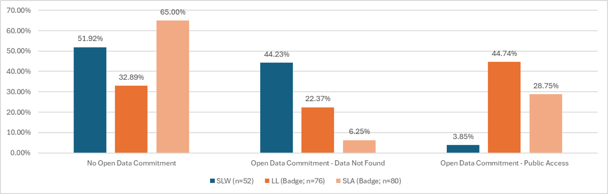
For this chapter, we reviewed 208 empirical studies published in three language learning journals with different data-sharing policies. After excluding articles without data, we found that more authors from LL and SLA published their raw datasets than SLW. Two other interesting findings related to the high percentage of SLW articles requiring people to request access to their datasets, and articles in LL and SLA receiving a badge for which they did not qualify.
2.4.1Success of the Badge System
Generally, this study provides evidence that more articles published in journals using a badge system share their data. This pattern is similar to findings in the field of psychology (Kidwell et al., 2016). However, we can only speculate about the reasons why more authors share their data under a badge scheme. One possible explanation is the visual appearance of badges. Authors in SLW provide a data availability statement, which is printed with the published paper, but badges are displayed visually; this may make them more appealing to authors.
In addition to being more visually attractive, badges may carry more weight as they are designed and implemented by an external party rather than journals themselves. Feger et al. (2021) examined the enhanced design of tailored science badges with gamification elements developed by the Association for Computing Machinery (ACM). Among other factors, they argued that badges make research more visible and facilitate further interactions with scholars. Although they argued their badge was better than OS Badges, the argument about visibility also applies to the comparison between OS Badges and data availability statements. Greater visibility may be one reason why a badge system encourages authors to release their data.
Previous studies have suggested several key factors in the successful implementation of the badge system. First, Hurrel et al. (2020) argued that authors will only adopt badges if they see their value and it takes less than five minutes to apply for them. They were not optimistic about the OS badges in the Canadian context. Second, Amin et al. (2022) reinforced the fact that authors have limited time to adopt the badge, i.e., adopting a badge takes time. Third, other researchers believe researchers are more likely to share data and adopt badges when the norm of the discipline is to share data, (Kim, 2021). These insights suggest potential ways to further increase the likelihood of data-sharing practices among researchers.
Issues with “Available Upon Request”
Many authors indicated that interested parties should request access to their data (e.g., Köylü et al., 2023; Xu & Casal, 2023). However, a lack of transparency can hinder the advance of science. Grahe (2018) argues that openly sharing data allows an independent researcher to reinterpret the findings and conduct further testing, if necessary, which aligns with the original spirit of science: falsifiability (Propper, 2002/1959). When data are not accessible, it is possible to question whether the study was conducted properly, especially with highly quantitative studies.
Language learning researchers generally see replication as “valuable” and “relevant” (McManus, 2022, p. 1415). While some successful Exact Replications (i.e., using the original dataset to re-interpret the findings; see Porte & McManus, 2019 for an in-depth discussion of different types of replications) have been conducted using original datasets (e.g., Nicklin & Plonsky, 2020), many researchers have called for improved data analysis strategies. This can only take place after re-computing the results of the original study. Making data ‘available upon request’ (without free, public access), only creates additional barriers for researchers who want to conduct replication studies. While we acknowledge the potential career risks of sharing data (e.g., criticism [Liotta et al., 2005] or being unable to publish [Savage & Vickers, 2009]) and we acknowledge that scholars in humanities disciplines, in general, do not see the need of “repeatability” (Goatly, 2024), we argue that authors must fulfil their ethical obligation to disseminate knowledge responsibly (e.g., Gennetian et al., 2020; Ortega, 2005; Schroeder et al., 2023) by releasing their data openly.
Ultimately, not all data can be shared, nor is all open data used for replication. Some authors claim that their data is confidential or they do not have permission to share it, which is understandable (Hicks, 2023). In fact, according to a survey by Amin et al. (2022), confidentiality is the main concern authors have with sharing data. Kim (2021) has elaborated that many authors are also unsure about the steps they must take to protect participants’ confidentiality based on the institutional review board guidelines by which they must abide. Accordingly, the problem can be partially attributed to the confidentiality guidelines authors are obligated to follow as part of the institutional review process. Institutions should review their guidelines to ensure they align with the goals of the OS movement.
Not Releasing the “Right” Data
This paper also found that some authors only released their codes (e.g., Mizumoto, 2022) or materials, which is concerning in terms of cultivating a culture of data sharing. In particular, some authors in LL claimed to have published their data but had only published their materials. Moreover, we believe that the concept of open data has not been adequately communicated, which both editors and authors can take steps to prevent.
The potential for miscommunication is not a surprise. Amin et al. (2022) reported that despite their (self-reported) high degree of knowledge about open data, participants in their study had a “high desire” to know more (p. 1943). This suggests the need for better communication regarding open data practices and/or OS badges. Editors can review the forms their journals use to see how the idea of open data can be better communicated. Authors can also make sure they understand the commitment they are making. As Feger et al. (2021) have confirmed, communicating the expectations of badges is an important part of their successful implementation. Authors should be made aware that they can apply for the ‘Open Materials’ badge instead of the ‘Open Data’ badge if they choose to only release their materials.
While we intend to advocate for open data, we believe that providing materials can still contribute to the field by allowing other authors to conduct conceptual replication (Kic-Drgas et al., 2023) or validate a given instrument in other contexts (Phipps, 2023). We would prefer authors to release their materials rather than nothing; however, we believe they should utilise the ‘Open Materials’ badge rather than mislead readers by applying for the ‘Open Data’ badge. Open data serves different purposes: it facilitates Exact Replication with the same dataset and instils confidence in readers. Journals should encourage authors to release all of their data, when possible, but also inform them that the ‘Open Materials’ badge is a viable option.
2.5Limitations and Recommendations
This chapter provides an overview of how authors who publish in journals with different policies share their data. Because this is an exploratory study, it has several limitations. First, we only sampled three journals and covered a relatively short period due to the limited data availability statements in SLW. Accordingly, the results do not offer a full picture of data sharing in the field of language learning.
Second, we can only speculate about why authors shared or did not share their data. We suspect they were influenced by the badges, but our results only demonstrate differences in the proportion of studies sharing their data, not the reasons for these discrepancies. Their motivations and intentions can only be revealed through a survey (e.g., Kim, 2021). Other factors, such as the nature of the data, may have affected the authors’ decisions. For example, there may have been additional copyright or anonymity concerns for the student writing data published in SLW. Another example may be that the ethics boards of some institutions may take additional time to approve a study when the team intends to share the data. Accordingly, some research teams may choose not to share the data to avoid delaying the process.
Promotion of the Badge System
As the badge system seems to attract authors to release their data because of its reputation and weight, this influence can be increased by further promoting these badges. At the moment, only four out of the top 20 journals (20%) categorised under ‘Language and Linguistics’ in Scopus use a badge system. The ultimate goal is to make authors aware of the significance of these badges. If more renowned authors and scientists were to acknowledge the importance of the badges, other authors would see them as a norm and release their data. As Kim (2021) has suggested, a data-sharing culture can further encourage others to share their data.
Stronger Enforcement
As previously mentioned, some authors were awarded an ‘Open Data’ badge when they had only released their materials. While this may be a technical (and thus unintentional) error, stronger oversight at editorial offices could mitigate this problem. This will make the ‘Open Data’ badge more credible and inspire authors to take pride in it. It will also help journals avoid technical problems. For example, Crüwell et al. (2023) examined the data released by some authors and found that it was often insufficient to facilitate the full replication of the original study. This review study made both journals and authors aware of the issue and led to actual change (see Editor’s Note in Crüwell et al., 2023). A stronger control system at editorial offices may prevent such issues in the future and preserve the credibility of the badge system.
2.5.1Better Implementation of the Badge System
This study found that authors tend to share their data when they are invited to participate in a badge system during the manuscript submission process, which is encouraging. We suggest that all journals include an invitation to apply for an OS badge as a step in the submission process (i.e., once again, a mandatory invitation to participate in the badge system, not mandatory to participate). However, we are not advocating mandatory participation; authors can still check ‘no’ if they are not interested in a badge. However, if links with further information are provided, authors are more likely to upload their datasets and earn badges. Making this part of the submission process would make the badge system more accessible to authors who may not share their data otherwise. In addition, echoing the suggestions of Robson et al. (2021), a priority review process can be implemented to encourage authors to apply for a badge: manuscripts applying for an ‘Open Data’ badge (or other OS Badge) can be reviewed sooner than other manuscripts (without changing the criteria for acceptance). This will provide an incentive to apply for these badges.
2.6Conclusion
This paper has examined the data-sharing culture of three language learning journals. In particular, we explored the differences between journals using a badge system and those that have a mandatory data statement. We found that the journals with a badge system attracted more authors to release their data. However, some manuscripts claimed to have released all of their data when they had not done so. Most of the authors published in the journal with mandatory data statements chose to make their data ‘available upon request.’ We argue that the scientific community can promote the badge system so that authors understand the value of badges. Stronger oversight and invitations to participate in the badge system as part of the submission process can also promote a culture of data sharing in applied linguistics.
References
Al-Hoorie, A. H., Cinaglia, C., Hiver, P., Huensch, A., Isbell, D. R., Leung, C., & Sudina, E., (2024). Open science: Considerations and issues for TESOL research. TESOL Quarterly, 58(1), 537-556. https://doi.org/10.1002/tesq.3304
Amin, M., Borders, J. C., Long, H. L., Keller, M. A., & Kearney, E. (2023). Open science practices in communication sciences and disorders: A survey. Journal of Speech, Language, and Hearing Research, 66(6), 1928-1947. https://doi.org/10.1044/2022_JSLHR-22-00062
Applied Psycholinguistics. (n.d.). Preparing your materials. https://www.cambridge.org/core/journals/applied-psycholinguistics/information/author-instructions/preparing-your-materials
Center for Open Science. (n.d.). About the Center for Open Science. https://www.cos.io/
Crüwell, S., Apthorp, D., Baker, B. J., Colling, L., Elson, M., Geiger, S. J., Lobentanzer, S., Monéger, J., Patterson, A., Schwarzkopf, D. S., Zaneva, M., & Brown, N. J. L. (2023). What’s in a badge? A computational reproducibility investigation of the open data badge policy in one issue of Psychological Science. Psychological Science, 34(4), 512-522. https://doi.org/10.1177/09567976221140828
Feger, S. S., Woźniak, P. W., Niess, J., & Schmidt, A. (2021). Tailored science badges: Enabling new forms of research interaction. In Proceedings of the 2021 ACM Designing Interactive Systems Conference (pp. 576-588). ACM. https://doi.org/10.1145/3461778.3462067
Foung, D., & Kohnke, L. (2023). Beyond replication: An exact replication study of Łodzikowski (2021). ReCALL, 35(2), 225-238. https://doi.org/10.1017/S0958344023000071
Gennetian, L. A., Tamis-LeMonda, C. S., & Frank, M. C. (2020). Advancing transparency and openness in child development research: Opportunities. Child Development Perspectives, 14(1), 3–8. https://psycnet.apa.org/doi/10.1111/cdep.12356
Goatly, A. (2022). Two dimensions of meaning – Similarity and contiguity in metaphor and metonymy language, culture and ecology. Routledge. https://doi.org/10.4324/9781003285977
Grahe, J. (2018). Another step towards scientific transparency: Requiring research materials for publication. The Journal of Social Psychology, 158(1), 1-6. https://doi.org/10.1080/00224545.2018.1416272
Hankerson, S. (2022). “Why can’t writing courses be taught like this for real”: Leveraging critical language awareness to promote African American language speakers’ writing skills. Journal of Second Language Writing, 58, 100919. https://doi.org/10.1016/j.jslw.2022.100919
Hicks, D. J. (2023). Open science, the replication crisis, and environmental public health. Accountability in Research, 30(1), 34–62. https://doi.org/10.1080/08989621.2021.1962713
Hurrell, C., Ruddock, K., & Pival, P. (2020). Open badges for promoting open practices in the institutional repository: A pilot project. Journal of Librarianship and Scholarly Communication, 8(1), eP2325. https://doi.org/10.7710/2162-3309.2325
In’nami, Y., Mizumoto, A., Plonsky, L., & Koizumi, R. (2022). Promoting computationally reproducible research in applied linguistics: Recommended practices and considerations. Research Methods in Applied Linguistics, 1, 100030. https://doi.org/10.1016/j.rmal.2022.100030
International Journal of Educational Technology in Higher Education. (n.d.). Research articles. https://educationaltechnologyjournal.springeropen.com/submission-guidelines/preparing-your-manuscript/research-articles
IRIS. (n.d.). Welcome to IRIS. https://www.iris-database.org/
Kic-Drgas, J., Seferoğlu, G., Kılıçkaya, F., & Pereira, R. (2023). Polish, Portuguese, and Turkish EFL teachers’ perceptions on the use of OER language processing technologies in MALL: A replication study. ReCALL, 35(2), 143–159. https://doi.org/10.1017/S0958344023000058
Kidwell, M.C., Lazarević, L. B., Baranski, E., Hardwicke, T. E., Piechowski, S., Falkenberg, L. S., Kennett, C., Slowik, A., Sonnieitner, C., Hess-Holden, C., Errington, T. M., Fiedler, S., Nosek, B. (2016). Badges to acknowledge open practices: A simple, low-cost, effective method for increasing transparency. PLoS Biology, 14(5), e1002456. https://doi.org/10.1371/journal.pbio.1002456
Kim, Y. (2021). A study of the determinants of psychologists' data sharing and open data badge adoption. Learned Publishing, 34(4), 499-509. https://doi.org/10.1002/leap.1388
Köylü, Z., Eryılmaz, N., & Pérez-Vidal, C. (2023). A dynamic usage-based analysis of L2 written complexity development of sojourners. Journal of Second Language Writing, 60, 101002. https://doi.org/10.1016/j.jslw.2023.101002
Kremmel, B., Indrarathne, B., Kormos, J., & Suzuki, S. (2023). Unknown vocabulary density and reading comprehension: Replicating Hu and Nation (2000). Language Learning, 73(4), 1127-1163. https://doi.org/10.1111/lang.12622
Liotta, L. A., Lowenthal, M., Mehta, A., Conrads, T. P., Veenstra, T. D., Fishman, D. A., & Petricoin Iii, E. F. (2005). Importance of communication between producers and consumers of publicly available experimental data. Journal of the National Cancer Institute, 97(4), 310–314. https://doi.org/10.1093/jnci/dji053
Mackey, A., & Marsden, E. (Eds.). (2016). Advancing methodology and practice: The IRIS repository of instruments for research into second languages. Routledge.
Marsden, E. (2020). Methodological transparency in applied linguistics and its consequences for the quality and scope of research. In J. McKinley & H. Rose (Eds.), Routledge handbook of research methods in applied linguistics (pp. 15–28). Routledge.
Marsden, E., Morgan-Short, K., Thompson, S., & Abugaber, D. (2018a). Replication in second Language research: Narrative and systematic reviews and recommendations for the field. Language Learning, 68(2), 321–391. https://doi.org/10.1111/lang.12286
Marsden, E., Morgan-Short, K., Trofimovich, P., & Ellis, N. C. (2018b). Introducing registered reports at Language Learning: Promoting transparency, replication, and a synthetic ethic in the language sciences. Language Learning, 68(2), 309–320. https://doi.org/10.1111/lang.12284
McManus, K. (2022). Are replication studies infrequent because of negative attitudes?: Insights from a survey of attitudes and practices in second language research. Studies in Second Language Acquisition, 44(5), 1410-1423. https://doi.org/10.1017/S0272263121000838
Mizumoto, A. (2022). Calculating the relative importance of multiple regression predictor variables using dominance analysis and random forests. Language Learning, 73(1), 161-196. https://doi.org/10.1111/lang.12518
Nicklin, C., & Plonsky, L. (2020). Outliers in L2 research in applied linguistics: A synthesis and data re-analysis. Annual Review of Applied Linguistics, 40, 26–55. https://doi.org/10.1017/S0267190520000057
Nosek, B. A., Alter, G., Banks, G. C., Borsboom, D., Bowman, S. D., Breckler, S. J., … Yarkoni, T. (2015). Promoting an open research culture. Science, 348(6242), 1422–1425. https://doi.org/10.1126/science.aab2374
Ortega, L. (2005). For what and for whom is our research? The ethical as transformative lens in instructed SLA. The Modern Language Journal, 89(3), 427–443. https://doi.org/10.1111/j.1540-4781.2005.00315.x
Peters, E., Puimège, E., & Szudarski, P. (2023). Repetition and incidental learning of multiword units: A conceptual multisite replication study of Webb, Newton, and Chang (2013). Language Learning, 73(4), 1211-1251. https://doi.org/10.1111/lang.12621
Phipps, J. (2023). The validation of Two L2 self-efficacy instruments using Rasch analysis. Research Methods in Applied Linguistics, 2(3), 100084. https://doi.org/10.1016/j.rmal.2023.100084
Porte, G., & McManus, K. (2019). What kind of replication should you do? From the inside, looking out: Initial critique and internal replication. In G. Porte, & K., McManus (Eds.), Doing replication research in applied linguistics (pp. 48–68). Routledge. https://doi.org/10.4324/9781315621395
Propper, K. R. (2002). The logic of scientific discovery. Routledge. https://doi.org/10.4324/9780203994627 (Original work published 1959)
Regan, B. (2023). Individual differences in the acquisition of language-specific and dialect-specific allophones of intervocalic/d/by L2 and heritage Spanish speakers studying abroad in Sevilla. Studies in Second Language Acquisition, 45(1), 65-92. https://doi.org/10.1017/S027226312200002X
Robson, S. G., Baum, M. A., Beaudry, J. L., Beitner, J., Brohmer, H., Chin, J. M., Jasko, K., Kouros, C.D., Laukkonen, R., Moreau, D. Searston, R, Slagter, H., Steffens, N., Tangen, J. & Thomas, A. (2021). Promoting open science: a holistic approach to changing behaviour. Collabra: Psychology, 7(1), 30137. https://doi.org/10.1525/collabra.30137
Safari, F., & Ahmadi, A. (2023). Developing and evaluating an empirically-based diagnostic checklist for assessing second language integrated writing. Journal of Second Language Writing, 60, 101007. https://doi.org/10.1016/j.jslw.2023.101007
Savage, C. J., & Vickers, A. J. (2009). Empirical study of data sharing by authors publishing in PLoS journals. PLoS One, 4(9), e7078. https://doi.org/10.1371/journal.pone.0007078
Schroeder, S. R., Gaeta, L., El Amin, M., Chow, J. C., & Borders, J. C. (2023). Evaluating research transparency and openness in communication sciences and disorders journals. Journal of Speech, Language, and Hearing Research, 66(6), 1977– 1985. https://doi.org/10.1044/2022_jslhr-22-00330
UNESCO. (2021). Draft recommendation on Open Science. https://unesdoc.unesco.org/ark:/48223/pf0000378841
Valentini, A., & Serratrice, L. (2023). Longitudinal predictors of listening comprehension in bilingual primary school‐aged children. Language Learning, 73(1), 5-46. https://doi.org/10.1111/lang.12513
Xu, Y., & Casal, J. E. (2023). Navigating complexity in plain English: A longitudinal analysis of syntactic and lexical complexity development in L2 legal writing. Journal of Second Language Writing, 62, 101059. https://doi.org/10.1016/j.jslw.2023.101059
Zipper, S. C., Stack Whitney, K., Deines, J. M., Befus, K. M., Bhatia, U., Albers, S. J., ... Schlager, E. (2019). Balancing open science and data privacy in the water sciences. Water Resources Research, 55(7), 5202–5211. https://doi.org/10.1029/2019WR025080
Applied Linguistics Research and the Triple Crisis of Interdisciplinarity
Abstract
The chapter offers a meta-disciplinary commentary on Applied Linguistics (AL) research culture, focusing particularly on the concept of interdisciplinarity. It outlines AL’s openness to ideas from various fields and its tendency to adopt an interdisciplinary approach to research. Then, the author interrogates the idealized view of interdisciplinarity in AL research, highlighting a triple crisis of legitimation, representation, and praxis. The chapter is structured into four sections: an introduction to applied linguistics, an exploration of interdisciplinarity, an argument about the crises within AL’s interdisciplinary practices, and a proposal for reconceptualizing interdisciplinarity for genuine interdisciplinary dialogue. The author suggests identifying keystone practices in AL, which should metaphorically uphold the disciplinary archway.
Keywords: Applied linguistics (AL), Research culture, Interdisciplinarity, Triple crisis, Keystone practices
3.1Introduction
There are many ways of understanding how research is conceptualized and conducted in an academic field. This chapter is a meta-disciplinary analysis of Applied Linguistics (AL) to understand its research culture. I focus specifically on the notion of interdisciplinarity. As an eclectic and relatively young field, AL has been very open to ideas coming from other fields of study. AL researchers often adopt an interdisciplinary approach to research, and the positive sides of interdisciplinarity are usually taken for granted. I would like to take a critical look at the lofty position of interdisciplinarity in AL research. Then, I will put forward an argument that while there are numerous benefits of taking an interdisciplinary approach to knowledge creation, AL research has suffered – albeit to varying degrees depending on research areas and contexts – from a triple crisis of interdisciplinarity.
The crises are about legitimation, representation, and praxis. First, AL researchers have borrowed ideas disproportionately from more ‘prestigious’ disciplines such as psychology, philosophy, sociology, and anthropology. However, researchers in those disciplines have rarely utilized ideas generated by AL researchers. Thus, there has been a one-way borrowing of ideas. A possible reason for this tendency is that, as a new discipline, AL has been under pressure to legitimize its existence in academia. For this reason, researchers often borrow popular ideas from older disciplines to justify AL research and to enhance the validity of their findings. However, as I will illustrate, rather than overcome this crisis of legitimation, the one-way borrowing practices perpetuates it. Second, many AL researchers have designed studies to conform to dominant theories coming from other disciplines. For example, various ‘turns’ in AL research – the social turn, the narrative turn, the critical turn, and the affective turn – generated findings that generally conform to the ideas that had already been popular in other disciplines. Thus, much AL research has overlooked on-the-ground stakeholders such as teachers and students, and resulted in a crisis of representation, i.e., people whose everyday practices are concerned with language use are not sufficiently represented and the research priorities are often detached from the realities of practice in such spaces as the language classroom. Finally, the practice of one-way borrowing and the need to align with dominant ideas have significantly shaped applied linguistics research. Many practitioners have argued that AL research findings are often contradictory and inconclusive, which explains why they hesitate to utilize research findings in their practice. This creates a crisis of praxis in AL.
To address these crises, I propose that we reconceptualize interdisciplinarity by identifying keystone practices in AL. I look at these crises and my proposal from the vantage point of being, first, an English for Academic Purposes (EAP) instructor and, then, a faculty member in a university department that studies language and literacy education. I believe that the AL research community has produced ample evidence of how knowledge of linguistics can be effectively utilized. In other words, we now have a strong knowledge base. Moving forward, what we need is to identify some keystone practices for AL. Metaphorically, these practices should hold the disciplinary archway. If a keystone is removed, it will lead to the destabilization or collapse of the archway. Any borrowing of ideas from other disciplines should be carefully vetted against the field-internal keystone practices of AL. Therefore, I call on AL researchers to work collaboratively and negotiate keystone practices in their respective domains of research. In this way, future borrowing of ideas from other disciplines can be more judicious and beneficial for those who rely on AL research to improve practice.
3.2A Brief Note on Applied Linguistics
We can perhaps begin by describing applied linguistics “as a broad interdisciplinary field of study concerned with solutions to problems or the improvement of situations involving language and its users and uses” (Berns & Matsuda, 2006, p. 394). However, this definition may not be universally accepted because as an interdisciplinary field, it is often understood in many ways and for different purposes. There are also problems about looking at AL from a geographical perspective. A view of applied linguistics from North America can be quite different from a view from Asia. For instance, in North American history, the origin of applied linguistics is often attributed to the establishment of the English Language Institute at the University of Michigan in 1941. However, in India, the roots of applied linguistics can be traced back to ancient times when grammarians used to get together and discuss various ways of language teaching and text preservation (Berns & Matsuda, 2006). With this challenge in mind, I look at AL mainly from a North American vantage point.
Another challenge in conceptualizing applied linguistics is selecting a disciplinary vantage point. As a broad field, applied linguistics investigates language-related issues and informs practices in various areas, including language teaching, language policy, translation, lexicography, and language assessment. In contrast, language teaching specifically focuses on helping learners acquire or improve proficiency in a target language. Thus, defining and understanding applied linguistics from a single disciplinary perspective is inherently difficult. Any specific approach to applied linguistics is inevitably exclusionary due to the field’s diverse scope, focus, and objectives. Based on my personal and professional experience in English language teaching (ELT), I take ELT as my entry point into the discussion of applied linguistics. However, my intention is not to conflate applied linguistics with ELT. While ELT serves as the entry point, my discussion of applied linguistics extends to various other disciplinary perspectives as appropriate.
The year 1948 was significant in the history of applied linguistics because Language Learning: A Journal of Applied Linguistics was launched in this year. The launch of this journal materialized the desire of a group of professors and language teachers to establish a scientific knowledge base of language studies. Another important year was 1959 when the Center for Applied Linguistics was established in Washington, D.C. One more year I would like to mention is 1977 when the American Association for Applied Linguistics (AAAL) was established. In the same year, the University of California, Los Angeles (UCLA) offered a PhD program in applied linguistics. This is considered to be the first PhD program in the field (Grabe & Kaplan, 2006). The following years and decades witnessed a growing interest in AL. For example, the inaugural issue of the journal Applied Linguistics published in 1980 included three articles on communicative approaches to second language teaching, foreign language acquisition, and pedagogical grammar. The issue also included a review article on MAK Halliday’s work on language as social semiotics. The focus of this inaugural issue of Applied Linguistics predicted what came to be known as a widely accepted definition of AL as a discipline for “the theoretical and empirical investigation of real-world problems in which language is a central issue” (Brumfit, 1995, p. 27).
Today AL encompasses diverse areas of study. Its evolution continues, and it embraces interdisciplinary approaches, methodological diversity, and technological advancements to address the complexities of language teaching, use, maintenance, policies and perceptions in an ever-changing globalized world. Despite various ways of conceptualizing the field, e.g., a descriptive or a critical AL (Pennycook, 2021), a commonality across various conceptualizations is that the field is inherently interdisciplinary. As Grabe and Kaplan (2006) wrote, “there is no longer serious debate about the larger interdisciplinary scope of applied linguistics, as opposed to an earlier and more limited interpretation as a designation for language teachers, language-teacher trainers, and language testers” (p. 364).
3.3Interdisciplinarity and Research Culture
Interdisciplinarity is generally understood as the quality or fact of drawing upon two or more branches of knowledge or areas of study to develop an in-depth understanding of a phenomenon in question. It combines theories and methods from multiple disciplines. This general definition raises the question about what a ‘discipline’ means in the first place. While the word ‘discipline’ is very familiar to academics, its meaning is debatable and can be confusing at times. One of the early works that shed light on this concept was The Curriculum and the Disciplines of Knowledge by Arthur King and John Brownell (1966). In this book, the authors theorized curriculum development by highlighting the relationship between disciplinary knowledge and pedagogical practices. They investigated how different disciplines shape curriculum content and pedagogical approaches. King and Brownell underscored the importance of integrating disciplinary perspectives to create a meaningful and transformative curriculum.
Based on King and Brownell’s work, Miller (2020, pp. 8-9) made the following list, which can be helpful to understand the idea of discipline:
- Field of demarcated study (subject matter boundaries, inclusions and exclusions).
- Shared set of underlying premises (basic assumptions about how the world works).
- Shared set of concepts (jargon).
- Shared set of organizing theories/models (explanatory frameworks).
- Shared set of truth-determining methods (what counts as data—how to make sense of them—i.e. research protocols).
- Shared set of values and norms (preferred approaches to the material field that is studied by the discipline—e.g. economists prefer the approach of the free market; also preferred conduct by the practitioners of the discipline).
- These six qualities cumulatively come together as a unique perspective—a coherent worldview—a disciplinary paradigm or matrix.
- Community of scholars who share this worldview (professional identity—academic tribes).
- Shared set of literature and great scholars in the discipline.
- Agreement on what to teach (structure and content of the basic texts and curriculum from the introductory course to the advanced graduate seminars).
- Means of reinforcing the professional standards (graduate training, hiring, and tenure control, associations, conferences, peer-reviewed journals, and grant-making processes).
- Departmental home in a college/university (bureaucratic recognition, resource allocation, and territorial ownership).
If the list above gives us an idea of discipline, then we can say that an interdisciplinary approach to research involves the utilization of theoretical and methodological perspectives and frameworks from more than one conventional discipline to investigate and understand a topic/phenomenon in question.
Some scholars like to differentiate interdisciplinarity from multi-, cross-, and trans-disciplinarity. But others see interdisciplinarity as a broader concept encompassing various types. Miller (2020) discussed three types of interdisciplinary approaches:
- Multidisciplinary approaches involve the simple act of juxtaposing parts of several conventional disciplines in an effort to get a broader understanding of some common theme or problem.
- Crossdisciplinary approaches involve real interaction across the conventional disciplines, though the extent of communication; thus, combination, synthesis, or integration of concepts and/or methods vary considerably.
- Transdisciplinary approaches, meanwhile, involve articulated conceptual frameworks that seek to transcend the more limited world views of the specialized conventional disciplines. (p. 1)
While some researchers see multidisciplinary, cross-disciplinary, and transdisciplinary research as three different types of interdisciplinary research, others view them as distinct categories (see, e.g., Pun, 2019). My purpose in this chapter is not to delve into the similarities and differences between these types or categories. Instead, I am concerned with interdisciplinary research, and how interdisciplinarity has shaped the research culture of applied linguistics.
I consider interdisciplinarity as a way of conceptualizing, designing, and conducting research that integrates theories and methods from various relevant disciplines that can help the researcher develop in-depth understandings of the topic under investigation. In the context of applied linguistics, researchers who are concerned with finding solutions to real-world language-related problems take a mediating role between language-related disciplines and other disciplines that may lend helpful methodological and theoretical lenses. In their interdisciplinary research and inquiry, applied linguists tend to “use theories and principles from language-related disciplines to understand language-related issues and solve language-related problems” (Pun, 2019, p. 110). In short, the interdisciplinary nature of applied linguistics acknowledges the limitations of drawing exclusively from linguistics as a knowledge source because the language-related issues addressed by applied linguists span various aspects of human life (Cook, 2003; Berns & Matsuda, 2006).
Another key concept in this chapter is research culture. Research culture encompasses the values, norms, practices, and expectations within a research community or institution. It shapes how research is conceptualized, conducted, disseminated, and evaluated. This culture influences researchers’ behaviors, decisions, and interactions, including their choice of topics, methodologies, and the nature of collaboration or a lack thereof. It may also encompass aspects such as ethical standards, academic integrity, collaboration, competition, funding priorities, and dissemination channels. In institutional and disciplinary contexts, research culture plays a pivotal role in shaping the quality, impact, and sustainability of research endeavors. The following two definitions are helpful:
- “Research culture encompasses the behaviours, values, expectations, attitudes and norms of our research communities. It influences researchers’ career paths and determines the way that research is conducted and communicated” (The Royal Society, 2014, para. 2).
- “Research culture comprises the beliefs, expectations and actions of our researchers, including how they select and carry out research projects; review the efforts of peer researchers; mentor and assist colleagues near and far; engage with external research partners; and influentially disseminate discoveries” (UBC, 2024, para. 1).
What is the role of interdisciplinarity in the research culture of applied linguistics? How has interdisciplinarity been conceptualized and practiced by AL researchers? Has AL research become interdisciplinary to the extent that the discipline’s core values and identities may be at risk? Is it possible, or desirable, to imagine AL as a disparate discipline? These are some of the difficult questions that come to mind while thinking about interdisciplinarity in AL research culture. I believe that, because of the diversity of research areas within AL, it is difficult to imagine AL as a disparate discipline. However, some areas of work (e.g., teaching English as a second/additional language, conversation analysis, or language policy and planning) can be more or less disparate. Moreover, there are internal hierarchies within AL that render some areas of work ‘less prestigious’ than others. But AL – as a whole – cannot be called a disparate discipline because there is a great internal diversity in AL and some areas of research benefit greatly from an interdisciplinary approach.
3.4The Triple Crisis of Interdisciplinarity in AL Research Culture
I would like to put forward an argument that while there are numerous benefits of taking an interdisciplinary approach to knowledge creation, much of AL research has suffered from a triple crisis of interdisciplinarity. To be clear, this argument is not intended to criticize AL researchers who take an interdisciplinary approach. I agree that many “interdisciplinary researchers provide an integrative and a comprehensive understanding of complex problems, taking advantage of investigative concepts, expertise, tools and methodologies from different disciplines to produce practical outcomes for the benefit of individuals and society” (Pun, 2019, p. 120).
The core of my argument is that an uncritical adoption of interdisciplinarity may lead to a number of methodological and practical problems that we can discuss in light of the three crises. I begin with Denzin and Lincoln’s (2005) observation of a triple crisis in the context of qualitative research. According to them, the first crisis—the problem of representation—is concerned with the argument that “researchers can no longer directly capture [the] lived experience” of their participants (p. 19). The second crisis involves a re-thinking of legitimation and validity of research findings and recommendations. The third crisis is concerned with praxis, that is, how “to effect change in the world” (p. 20).
First, after the postmodern, poststructuralist, postcolonial, and feminist turns in social theory, we have seen widespread skepticism in one’s ability to represent the other. For example, Alcoff (2009) wrote about a growing consensus about the problem of representing the other. This consensus has resulted from the acceptance of two principal claims:
First, there has been a growing awareness that where one speaks from affects both the meaning and truth of what one says, and hence that one cannot assume an ability to transcend one’s location.... The second claim holds that not only is location epistemically salient, but certain privileged locations are discursively dangerous. In particular, the practice of privileged persons speaking for or on behalf of less privileged persons has actually resulted (in many cases) in increasing or re-enforcing the oppression of the group spoken for (Alcoff, 2009, p. 118).
Regarding research, the concept of representation can be described as a crisis, which questions the ability of the researcher to adequately describe social realities and the lived experiences of others (e.g., research participants). Some commentators question the researcher’s ability as well as their moral right to represent those who are researched. In short, the crisis of representation in the social and human sciences is about the researcher’s inability to present the lived experiences of those they study (Willis, 2007).
Second, the concept of legitimation refers to the issues arising from authority, i.e., “the claim a text makes to be an accurate, true, complete account of experience, meaning, a way of life, and so forth” (Schwandt, 2007, p. 46). Some commentators question the researcher’s ability to claim ‘objective’ truth. In other words, the crisis of legitimation in research is about warrant, i.e., “what warrants our attention and why” (Willis, 2007, p. 155). This question is usually addressed through discussions about validity. Researchers attempt to demonstrate that their study is credible, and their findings are valid by arguing that they are true and certain (Schwandt, 2007). Thus, researchers are “caught between a rock of responsibility and accountability and a soft place of the continued claims of scientism to one-best-way production and legitimation of knowledge” (Lather, 2001, p. 248). The confusion and disagreements about validity can be illustrated through Geertz’s (1973) story about a British man in colonial India. The Indian man told the British man that “the world rested on a platform which rested on the back of an elephant which rested in turn on the back of a turtle” (pp. 28-29). The British man asked, “What did the turtle rest on?” “Another turtle,” replied the Indian man. “And that turtle?” asked the British man again. The Indian man said, “Ah, Sahib, after that it is turtles all the way down” (p. 29). Through this story, Geertz made the point that there is no ‘bottom turtle’ in ethnographic interpretation and that interpretive analysis is always incomplete (Maxwell, 2013). For this difficulty, many researchers believe that we “do not have to get to the bottom turtle to have a valid conclusion” (Maxwell, 2013, p. 122). We just need to get to a turtle that we can stand on securely.
The third crisis that Denzin and Lincoln (2005) mentioned is about praxis. The concept of praxis can be traced in the works of many philosophers from Aristotle to Hegel to Marx to Gramsci to Freire. In ordinary usage, the Greek word praxis is roughly translated as ‘practice.’ When somebody uses the word praxis, the intent is generally to talk about action or doing something. However, it is perhaps best to begin with Aristotle’s idea of praxis because it achieves a distinctive meaning in his thinking. Aristotle referred to particular ways of life that are concerned with ethics and politics (Bernstein, 1971). In Bernstein’s reading, Aristotle’s notion of praxis requires both knowledge and practical wisdom. In praxis, a person is concerned not merely with gaining knowledge and wisdom for its own sake, but also with “doing—living well” (p. x).
Gadamer is one of the philosophers whose works have been instrumental in popularizing the concept of praxis in social science research. For him, praxis denotes a particular form of human activity, which is different from the common usage of the term practice. Practical activity (praxis) is concerned with the conduct of one’s life in society. This kind of activity requires practical wisdom (phronesis), which enables one to do the right thing and to do it well. Practical activity “leaves no separably identifiable outcome as its product, hence the end (aim) of the activity (i.e., being a ‘good’ human being, teacher, doctor, lawyer, etc.) is realized in the very doing of the activity itself” (Schwandt, 2007, p. 242). However, in phronesis (practical wisdom), which Gadamer also described as moral knowledge, the concept of application becomes highly problematic. Gadamer (1975/2013) believed that we can apply something that we already have, but moral knowledge is something we cannot learn and possess like a techne. Moral knowledge is not possess-able in that it is always context-dependent. As Gadamer (1975/2013) explained, what is right cannot be fully determined independently of the situation that requires us to perform a right action. In contrast, when a craftsman wants to make a tool, its essence can be fully determined by the use for which the tool is intended. Gadamer (2001) summarized that:
Our praxis does not consist in our adapting to pregiven functions or in the thinking out of suitable means for achieving pregiven purposes…. Rather, our praxis must consist in prudent choices as we pursue common goals, choices we arrive at together and in practical reflection making concrete decisions about what is to be done in our present situation. (pp. 83-84)
In Gadamer’s view, praxis is not simply the application of abstract principles but rather an embodied, lived experience that shapes and is shaped by interpretation, understanding, and moral judgement.
Denzin and Lincoln’s (2005) discussion of the three crises has been valuable not only in qualitative and post-qualitative research but also in various areas, such as language teachers’ engagement with research as a form of continuing professional learning (e.g., Anwaruddin, 2016). In the following pages, I will reorder these three crises and explore how the crises of legitimation, representation, and praxis connect to applied linguistics research.
The crisis of legitimation: AL researchers have borrowed ideas disproportionately from older and more ‘prestigious’ disciplines such as psychology, sociology, anthropology, and – very obviously – from theoretical linguistics. However, researchers in those disciplines have rarely utilized ideas generated by AL researchers. Thus, there has been a one-way borrowing of ideas. A possible reason for this tendency is that, as a relatively new discipline, AL has been under pressure to legitimize its existence in academia. Perhaps, for this reason, many researchers tend to borrow popular ideas from older disciplines to justify AL research and to enhance the validity of their findings. Another reason for borrowing is the well-meaning spirit of interdisciplinarity and a desire to contribute to collective knowledge generation across disciplinary divides. Because our personal, social, and political problems are often very complex and intersectional, an interdisciplinary approach to understanding and solving these problems seems to be a prudent choice.
I believe that many scholars in all disciplines are doing this kind of interdisciplinary research. For example, Morgan and Vandrick (2009) published their work in the journal Peace & Change. They believed that:
Just as peace and justice studies contributes much to Teaching English to Speakers of Other Languages, the reverse is also true: second-language classes are particularly rich sites to explore diverse notions of the common good and implications for peace and war. (p. 510)
It appears that Morgan and Vandrick sincerely embraced the spirit of interdisciplinarity, and as researchers of Applied Linguistics and TESOL, they published this article in Peace & Change, a ‘non-AL, non-TESOL’ journal. Now, the question is whether or to what extent this article has been engaged by scholars/researchers from other disciplines who are interested in peace (and conflict) studies. One way to explore this is to look at the citation of Morgan and Vandrick’s article. According to Google Scholar, this article has been cited 64 times as of August 24, 2024. What is striking here is that most of these citations appeared in AL and TESOL journals. It is reasonable to expect that some authors published in Peace & Change would engage with and benefit from this article, especially given the journal’s interdisciplinary scope. The journal is co-sponsored by the Peace History Society and the International Peace Research Association, and it
publishes scholarly and interpretive articles on the achievement of a peaceful, just, and humane society. International and interdisciplinary in focus, the journal bridges the gap between peace researchers, educators, and activists. It publishes articles on a wide range of peace-related topics, including peace movements and activism, conflict resolution, nonviolence, internationalism, race and gender issues, cross-cultural studies, economic development, the legacy of imperialism, and the post-Cold War upheaval. (Peace & Change, 2024, para. 1)
Despite the journal’s interdisciplinary focus and its aim to publish articles addressing a wide range of topics, the article by Morgan and Vandrick has never been cited in this journal since its publication in 2009.
It is also noteworthy that other well-known journals of peace research, e.g., the Journal of Peace Research 1 and Peace Research: The Canadian Journal of Peace and Conflict Studies 2, have not cited the article of Morgan and Vandrick. As the above example illustrates, the crisis of legitimation continues to exist in AL research culture, despite AL’s strong support for interdisciplinarity. So far, interdisciplinarity has primarily functioned as a one-way communication channel and has failed to create scholarly spaces for genuine interdisciplinary dialogue. AL researchers borrowing ideas from other disciplines. But the reverse is not true. Thus, the one-way borrowing practices have perpetuated the crisis of legitimation, rather than solving it.
The crisis of representation: Before talking about the crisis of representation, let me briefly comment on how various factors influence research by shaping its direction, scope, and outcomes. While there are multiple factors that interact with varying impact, in the interest of space, I mention four factors. First, funding availability significantly impacts research possibilities, determining the scale, duration, and resources allocated to research studies. Second, institutional support and resources also play a crucial role, influencing access to facilities and expertise. Both funding availability and institutional support have been major barriers for many AL researchers. Third, societal needs and trends often dictate research priorities, directing focus towards pressing issues or emerging priorities. Finally, the cultural and political contexts shape research agendas, what topics are prioritized, and how findings are interpreted and utilized. Overall, these factors interact dynamically and co-shape the landscape of research endeavors. The last two points – social needs and trends, and cultural and political contexts – are particularly relevant for my purpose here. My observation is that most turning points in the research culture of AL had originated in other disciplines and then entered AL. Let’s think about the various ‘turns’ in AL, for example, the social turn, the critical turn, the identity turn, the narrative turn, the multi/plurilingual turn, the decolonial turn, the affective turn, the complexity turn, and the fast-approaching artificial intelligence (AI) turn.
First of all, to call a new line of research a ‘turn’ is problematic because the self-congratulatory nature of these ‘turns’ often negates and discredits the important work that was done prior to the emergence of such ‘turns.’ Moreover, in close examination, one will see that many ideas promoted by a specific ‘turn’ are often recycled, re-packaged, and rebranded. The ‘turns’ are not as new as their proponents would like us to believe. Here, I concur with Prior (2019) that by subscribing to overly optimistic claims made by any turn, “we risk being unfaithful to the shared history of the field by misrepresenting our past and present” (p. 517).
A close look at the various ‘turns’ in AL reveals that many AL researchers have been influenced by dominant theories and methodologies that had already existed in other disciplines. The uptake of some of these theories and methodologies by AL researchers has also been influenced by dominant ideas in the larger society and what is deemed politically correct and culturally responsive. I do not intend to suggest that AL researchers should not respond to social, political, and cultural needs. But my concern is that many AL researchers are influenced by factors outside the discipline of AL and what is fashionable or trendy in a given historical period. Another point I’ve previously mentioned - and it’s worth reiterating here - is that AL researchers often feel pressured by the perceived lack of disciplinary legitimacy. This pressure drives them to adopt the latest trends from outside the field, fearing they may otherwise be left behind in terms of promotion, funding, and access to resources such as new hires within their department. As an educator, I sometimes wonder how we know what counts as good research in AL. A potential danger of determining research priorities based on ideas coming from other disciplines or ‘trendy’ cultural norms is that research may overlook the needs of actual beneficiaries of such research. For example, practitioners in areas such as TESL have long complained about a lack of relevance of AL research for their classroom practice (Borg, 2007; Hall, 2023). The need for a clearer articulation of research goals is becoming more important and consequential. For example, there is a growing call for research-informed teaching, but we hardly hear a call for teaching-informed research (e.g., Rose, 2019). Cummins’ (2021) call for ‘consequential validity’ is another important example here, as it emphasizes the importance of pedagogical relevance and teacher knowledge in the evaluation of research. In areas such as SLA and TESL, research goals must be aligned with practical needs in the ‘real world.’ Otherwise, research will not make meaningful contributions to the improvement of practice.
By identifying research goals and generating findings that simply conform to the ideas that have already been popular in other disciplines, the research culture of AL may not be able to justify its activities and overcome the crisis of representation. Addressing the crisis of representation in AL research must involve sincere attention to on-the-ground stakeholders such as teachers and students who are among the primary beneficiaries of much AL research. Therefore, I propose that – as a research community – we re-think and interrogate the practice of conformity that has resulted in a crisis of representation, i.e., people whose everyday practices are concerned with language are not sufficiently represented. In other words, we should critically examine the goals and purposes of our work in light of concerns about its uses and users (see, e.g., Ortega, 2005).
Finally, the one-way borrowing practice and the pressure to conform to already dominant ideas coming from outside the discipline have influenced AL research, its findings, and its impact. Many policymakers and practitioners such as language teachers have argued that AL research findings are often contradictory and inconclusive, which explains why many of them do not engage with and utilize research findings in their professional practice. This creates a crisis of praxis in AL research. There is growing evidence about teachers’ low engagement with research-generated knowledge (Ahmed & Pervin, 2015; Borg, 2009; Floris et al., 2024; Medgyes, 2017; Tai & Chung, 2024). These studies and many others have identified a number of barriers to language teachers’ engagement with published research. Hall’s (2023) recent study found that key barriers to teachers’ research engagement included a lack of time, a lack of access to published research, difficulty in understanding research publications, and difficulty in understanding various terminologies used in these publications.
While these barriers deserve careful attention, I would like to briefly comment on another barrier that – to my knowledge – has not been discussed in the AL circle. It is about intellectual disputes among researchers. My thinking here is influenced by the sociologist Randall Collins (the interdisciplinary influence on me!). Analyzing the contentious nature of intellectual disputes and debates, Collins (2002) argued that disputes often escalate due to emotional investment, status concerns, and power dynamics among intellectuals. He identified various triggers such as ego threats and ideological conflicts that fuel acrimony. Through historical and sociological analysis, he showed how intellectual disagreements become polarized and entrenched. One of Collins’ (2002) key findings was that
the number of notable positions or factions in a thriving field of intellectual activity–whether in ancient Greece or India, medieval Islam or modern America–is quite limited. Whenever there is creative activity, there are rivals; the so-called great thinkers appear, at minimum, in pairs of contemporaries, and more typically there are three or more recognizably differing positions–but rarely as many, it would appear, as six. This is so regular a state of affairs globally that I have generalized it as a “law of small numbers.” (p. 48)
Based on this finding, Collins (2002) wrote that every discipline is a limited field of attention space. In his own words,
The intellectual world is, sociologically, an attention space, a locus of intellectual action. …. Everything that we call a field, a discipline, a specialty, is its own attention space. Thus there can be a number of different fields of rivalry in parallel–when their borders are crossed, a special kind of rivalry occurs because the local division of attention into a supportable number of contenders is upset, complicating the struggle for attention. (p. 50)
I have noticed this struggle for attention in AL research. Intellectual disputes among AL researchers and their struggle for occupying the limited attention space of the discipline have resulted in so many factions and generated so much publication that practitioners find it very difficult to understand how research can help improve their practice. The following two comments from Hall’s participants, who are in-service language teachers, can be illustrative of my point:
- “The biggest problem is selecting the research that is the most relevant … With the proliferation of ideas and publications, that is increasingly hard to do” (a teacher from Spain, quoted in Hall, 2023, p. 30).
- “I feel there are far more people out there writing about education than necessary, and trying to find something useful is like fishing in a lake that is doubling as a dumping ground. Finding anything of any value is a tedious task” (a teacher from Japan, quoted in Hall, 2023, p. 30).
These comments point to a tendency about how emerging or lesser-known researchers attempt to counter already dominant positions in the field by borrowing ideas from other disciplines, valorizing the notion of interdisciplinarity, designing innovative studies, and creating various counter-narratives about what is best for the applied linguistics community. These kinds of intellectual disputes and personal rivalries result in a proliferation of research publications on contradictory theoretical positions, which I argue perpetuate the crisis of praxis in AL, rather than solving it.
3.5A Proposal for Identifying Keystone Practices in AL
I would like to propose that we reconceptualize and practice interdisciplinarity by identifying keystone practices in AL. The AL research community has already produced enough evidence of how linguistic knowledge can be utilized to address and potentially solve real-life problems in which language is a matter of concern. In other words, we have collectively built a strong knowledge base. Moving forward, we need to explore ways of negotiating the parameters and risks associated with interdisciplinary work, particularly given the inherent inequalities when engaging with more prestigious disciplines within the academy. Thus, we can have better synergy between knowledge and practice. Metaphorically, keystone practices should hold the disciplinary archway. If we remove a keystone, it will lead to the destabilization or possible collapse of the archway. Any borrowing of ideas from other disciplines should be carefully vetted against the field-internal keystone practices of AL. Therefore, I call on AL researchers to work collaboratively and identify keystone practices in their respective domains of research.
The idea of keystone practice is based on the concept of keystone species, which is an important concept in ecology and conservation biology. This concept was introduced in 1969, and since then it has been welcomed by many. Its potential significance to biologists is “that it designates species that exert influences on the associated assemblage, often including numerous indirect effects, out of proportion to the keystone’s abundance or biomass. As such, keystone species should be of special concern to environmental managers and policy makers” (Paine, 1995, p. 962). When originally proposed, the “metaphor was intended to convey a sense of nature’s dynamic fragility and the unsuspected consequences of removing (or adding) species. As George Orwell noted, some pigs are more equal than others, and the same applies to all species” (p. 962). Some species become ‘keystone’ in a specific territory or community because of the critical role they play (activity) rather than their number (abundance). In summary, the keystone concept is useful because it “focus[es] on the entire assemblage” and recognizes “that one species can have a disproportionate effect on its many associates” (p. 964). This concept has been transformative in planning and managing projects on biological conservation, ecosystem functions, and community restoration.
In her book Beaver, Bison, Horse: The Traditional Knowledge and Ecology of the Northern Great Plains, R. G. Morgan (2020) described how early inhabitants avoided hunting beaver due to ecological reasons passed down through Indigenous oral tradition and cosmology. In her afterword to Morgan’s (2020) book, Eisenberg (2020) – an Indigenous scholar and community ecologist – applied the concept of keystone species to describe Morgan’s work, which was “based on the knowledge held by Indigenous people worldwide that while all life-forms touch humans, some species are more important to human survival than others, so much so that they have the capacity to shape the cultural identity of the people who rely on them. These species become ingrained in people’s songs, ceremonies, dances, stories, and ethos” (p. 187). The beaver’s significance as a keystone species in the region was primarily attributed to their dam-building activity, which regulated surface water and attracted various animals like bison, crucial for sustenance in the dry environment. This ecological balance was evident in the seasonal migration patterns of Indigenous peoples, who relied on beaver habitats for survival. However, with the expansion of the fur trade and continuing colonial exploitation of Indigenous lands, forests and waters, sustainable practices were lost, leading to the decline of beaver and bison populations.
Building on this concept of keystone species, Ahmed and Morgan (in-review) underscored the need to identify keystone practices in the field of English language teaching. By extending Ahmed and Morgan’s argument to my proposal in this chapter, I would like to encourage AL researchers to identify keystone practices that constitute the core of AL. This is important because what is a keystone principle or practice in one discipline may be much less foundational in another. As I have discussed in this chapter, interdisciplinary work in AL has not been reciprocated. As AL researchers, we have borrowed disproportionately from other disciplines. We have probably done so at the detriment of our own discipline. For example, Morgan (in Ferraz & Morgan, 2019) asked: “Critical [applied] linguists will be reading Foucault, Rancière, Bakhtin, but will people in literary studies be reading Pennycook” (p. 202)? Morgan’s answer was ‘no.’ He went on to say that due to a one-directional disciplinary relationship, we – as applied linguists and language teachers – “don’t take our own pedagogy seriously, we don’t see its uniqueness in speaking to other disciplines that we borrow from” (p. 204). While I wholeheartedly support interdisciplinary work (note my borrowing of the concept of ‘keystone species’ from another discipline), I want us to remember that the primary goal of interdisciplinarity should be to better understand our own discipline. We must go to other disciplinary territories and explore their ideas, theories, and methodologies; but we must bring back only what is beneficial for our discipline, judged against our own keystone practices. In this way, we can address the triple crisis of interdisciplinarity discussed above. Borrowing ideas from other disciplines to create internal divisions and intellectual disputes will result in more scholarly debates and publications, which may be of little value to those who look to applied linguistics for its explicit focus on solving everyday practical problems related to language and communication. It is, therefore, important to have collective and collaborative initiatives to identify keystone practices relevant for specific domains within AL, so that future borrowing of ideas from other disciplines can be more judicious and beneficial for those who rely on AL research to improve practice. For all these reasons, we should view interdisciplinary applied linguistic work as a cautious undertaking.
Notes
- Journal of Peace Research (JPR) is an interdisciplinary and international peer reviewed bimonthly journal of scholarly work in peace research. ↩
- In continuous publication since 1969, Peace Research: The Canadian Journal of Peace and Conflict Studies is Canada’s oldest and primary scholarly journal in the area. ↩
References
Ahmed, A., & Morgan, B. (in-review). Exploring the transformative potential of duoethnography for critical language teaching.
Ahmed, A., & Pervin, N. (2015). English-language teachers’ engagement with research: Findings from Bangladesh. Professional Development in Education, 41(1), 21-39. https://doi.org/10.1080/19415257.2013.861860
Alcoff, L. M. (2009). The problem of speaking for others. In A. Y. Jackson & L. A. Mazzei (Eds.), Voice in qualitative inquiry: Challenging conventional, interpretive, and critical conceptions in qualitative research (pp. 117-135). Routledge.
Anwaruddin, S. M. (2016). Teachers’ responses to educational research: A hermeneutic inquiry. [Doctoral dissertation, University of Toronto]. http://hdl.handle.net/1807/80380
Berns, M., & Matsuda, K. (2006). Applied linguistics: Overview and history. In K. Brown (Ed.), Encyclopedia of language & linguistics (pp. 394-405). Elsevier.
Bernstein, R. J. (1971). Praxis and action: Contemporary philosophies of human activity. University of Pennsylvania Press.
Borg, S. (2007). Research engagement in English language teaching. Teaching and Teacher Education, 23(5), 731-747. https://doi.org/10.1016/j.tate.2006.03.012
Borg, S. (2009). English language teachers’ conceptions of research. Applied Linguistics, 30(3), 358-388. https://doi.org/10.1093/applin/amp007
Brumfit, C. J. (1995). Teacher professionalism and research. In G. Cook & B. Seidlhofer (Eds.), Principle and practice in applied linguistics (pp. 27-42). Oxford University Press.
Collins, R. (2002). On the acrimoniousness of intellectual disputes. Common Knowledge, 8(1), 47-70.
Cook, G. (2003). Applied linguistics. Oxford University Press.
Cummins, J. (2021). Rethinking the education of multilingual learners: A critical analysis of theoretical concepts. Multilingual Matters.
Denzin, N. K., & Lincoln, Y. S. (Eds.). (2005). The SAGE handbook of qualitative research. Sage.
Eisenberg, C. (2020). Afterword: Cultural keystone species and traditional ecological knowledge on the northern plains and beyond. In R. G. Morgan, Beaver, bison, horse: The traditional knowledge and ecology of the Northern Great Plains (pp. 185-203). University of Regina Press.
Ferraz, D. de M., & Morgan, B. (2019). Transnational dialogue on language education in Canada and Brazil: how do we move forward in the face of neoconservative/neoliberal times? Trabalhos Em Linguística Aplicada, 58(1), 195–218. https://doi.org/10.1590/010318138654861490091
Floris, F. D., Widiati, U., Renandya, W. A., & Basthomi, Y. (2024). Engagement with research: A qualitative study of English department teachers' experiences and insights. Social Sciences & Humanities Open, 9, 100846. http://dx.doi.org/10.1016/j.ssaho.2024.100846
Gadamer, H-G. (2001). Gadamer in conversation: Reflections and commentary (R. E. Palmer, Ed. & Trans.). Yale University Press.
Gadamer, H-G. (2013). Truth and method. Bloomsbury. (Original work published 1975)
Geertz, C. (1973). The interpretation of cultures: Selected essays. Basic Books.
Grabe, W., & Kaplan, R. B. (2006). Applied linguistics in North America. In K. Brown (Ed), Encyclopedia of Language & Linguistics (pp. 363-369). Elsevier.
Hall, G. (2023). Teachers’ engagement with published research: How do teachers who read research navigate the field, what do they read, and why? British Council. doi.org/10.57884/B04W-E417
King, A., & Brownell, J. (1966). The curriculum and the disciplines of knowledge: A theory of curriculum practice. Wiley.
Lather, P. (2001). Validity as an incitement to discourse: Qualitative research and the crisis of legitimation. In V. Richardson (Ed.), Handbook of research on teaching (pp. 241-250). American Educational Research Association.
Maxwell, J. A. (2013). Qualitative research design: An interactive approach. Sage.
Medgyes, P. (2017). The (ir)relevance of academic research for the language teacher. ELT Journal, 71(4), 491-498. https://doi.org/10.1093/elt/ccx034
Miller, R. (2020). Interdisciplinarity: Its meaning and consequences. In N. Sandal (Ed.), Oxford research encyclopedia of international studies. https://doi.org/10.1093/acrefore/9780190846626.013.92
Morgan, B., & Vandrick, S. (2009). Imagining a peace curriculum: What second‐language education brings to the table. Peace & Change, 34(4), 510-532. https://doi.org/10.1111/j.1468-0130.2009.00598.x
Morgan, R. G. (2020). Beaver, bison, horse: The traditional knowledge and ecology of the Northern Great Plains. University of Regina Press.
Ortega, L. (2005). For what and for whom is our research? The ethical as transformative lens in instructed SLA. The Modern Language Journal, 89(3), 427-443. https://doi.org/10.1111/j.1540-4781.2005.00315.x
Paine, R. T. (1995). A conversation on refining the concept of keystone species. Conservation Biology, 9(4), 962-964. https://doi.org/10.1046/j.1523-1739.1995.09040962.x
Peace & Change. (2024). Overview. https://onlinelibrary.wiley.com/page/journal/14680130/homepage/productinformation.html
Pennycook, A. (2021). Critical applied linguistics: A critical re-introduction. Routledge.
Prior, M. T. (2019). Elephants in the room: an “affective turn,” or just feeling our way? The Modern Language Journal, 103(2), 516-527. https://doi.org/10.1111/modl.12573
Pun, J. (2019). Interdisciplinary research. In J. McKinley & H. Rose (Eds.), The Routledge handbook of research methods in applied linguistics (pp. 108-121). Routledge.
Rose, H. (2019). Dismantling the ivory tower in TESOL: A renewed call for teaching-informed research. TESOL Quarterly, 53(3), 895-905. https://doi.org/10.1002/tesq.517
Schwandt, T. A. (2007). The SAGE dictionary of qualitative inquiry. Sage.
Tai, K. W., & Chung, E. (2024). ESL teachers’ experiences in engaging with published research findings: An interpretative phenomenological analysis. Innovation in Language Learning and Teaching, 18(5), 411-429. https://doi.org/10.1080/17501229.2024.2315091
The Royal Society. (2024). Research culture. https://royalsociety.org/news-resources/projects/research-culture/
UBC. (2024). Strategy 10: Research culture. https://strategicplan.ubc.ca/strategy-10-research-culture/#:~:text=Research%20culture%20comprises%20the%20beliefs,partners%3B%20and%20influentially%20disseminate%20discoveries
Willis, J. W. (2007). Foundations of qualitative research: Interpretive and critical approaches. Sage.
Interdisciplinarity as a Third Research Culture Space: A Duoethnography
Abstract
This chapter investigates interdisciplinarity as a third research culture space through a duoethnographic approach. The authors share their narratives and reflections as early-career scholars navigating interdisciplinary research and scholarly publication. They discuss their personal and professional encounters with interdisciplinarity, emphasizing both the opportunities for knowledge creation and the challenges, such as differing epistemologies, power imbalances, and navigating discourse communities. The chapter highlights the discursive and non-discursive barriers they faced, including imposter syndrome and the negotiation of academic identities across disciplines. The duoethnography illustrates how interdisciplinary collaboration can foster intellectual growth but requires strategic positioning, resilience, and critical reflection. It ultimately calls for enhanced support and education for early-career scholars venturing into interdisciplinary research, arguing that embracing such approaches can enrich academic inquiry and address complex social phenomena more holistically in the modern globalized academic landscape.
Keywords: Interdisciplinarity, Duoethnography, Writing for scholarly publication, Knowledge production and dissemination
4.1Introduction
Academia in the 21st century is by any measure very different from its predecessors in previous centuries. The hegemonic discourses of neoliberalism, corporatization, and managerialism have dominated every aspect of current academia and consequently scholarly practices of academics in different higher education institutions (Flowerdew & Habibie, 2022). We, as knowledge workers, have become the modern academic proletariat who is expected to satisfy the capitalist and market-oriented whims of the modern bourgeoisie (i.e., institutional administrators and managers). Scholarly publication in high-indexed English-medium international prestigious journals is now the most important ball, among others, that academics are expected to juggle in this prestige economy (Kandiko Howson et al., 2018). Academic institutions, just like soccer clubs, are competing to hire so-called stellar scholars (those with more publications and citations) and raise their status in international university rankings and league tables. In this academic celebrity culture, irrespective of their language or institutional status, academics all over the world, especially junior ones, are under ever-increasing pressure to either join this exhausting rat race and get their research published in peer-reviewed English-medium journals (Habibie & Hyland, 2019), or else do not aspire to permanent academic positions, promotions, research funding, and visibility in the global knowledge economy. Recent times have also witnessed a growing tendency in academia towards further integration and collaboration among academic cultures, disciplines, and fields (Klein, 2005; Moran, 2010). This trend has given rise to interdisciplinarity and border-crossing in research and scholarship and consequently interdisciplinary scholarly publication practices.
In this chapter, we engage in a duo-ethnography on the topic of interdisciplinarity in research and scholarly publication which is an important topic to both of us. We try to unpack some of the cultural, social, and contextual issues and dynamics related to interdisciplinarity in academic inquiry and scholarly publication. More specifically, we look at our developing understanding of the concept of interdisciplinarity (Frodeman et al., 2010; Klein, 2005; Moran, 2010) and its implications for our writing for scholarly publication practices. Our goal in this duoethnography is to highlight the barriers and challenges that can impact our participation in interdisciplinary research in the field of Applied Linguistics (henceforth, AL). Our dialogue and narratives may have implications for other early-career scholars embarking on or involved in interdisciplinary inquiry and publishing.
4.2Interdisciplinarity
The concept of interdisciplinarity has been subject to various definitions and interpretations. Broadly, it has come to be defined as “the interaction among two or more different disciplines from simple communication of ideas to the mutual integration of organizing concepts, methodology, procedures, epistemology, terminology, data” (OECD, 1972, p. 25), or “the integration of disciplinary perspectives to produce insights that are more than the summing of disciplinary knowledge” (Pharo et al., 2012, p. 498). What these different definitions have in common, though, is their emphasis on the integration of some aspects between the interacting disciplines, whether in terms of concepts, theories, or methods, though the degree and nature of the integration and interaction can vary (Choi & Richards, 2017). For the purposes of this chapter, we adopt the notion of interdiciplinarity, conceptualized by Moran (2010) as “any form of dialogue or interaction between two or more disciplines: the level, type, purpose and effect of this interaction remain to be examined” (p. 14). This conceptual lens will frame our understanding of how interdisciplinary interactions can fruitfully bring together disparate threads of disciplinary bodies of knowledge “in the search or creation of new knowledge” (Nissani, 1995, p. 121). Furthermore, the interchange of knowledge among different disciplines and research cultures can cross-pollinate and mutually enrich the involved disciplines and cultures. In this sense, interdisciplinarity aligns with Feyerabend’s (1975) critique of rigid disciplinary boundaries, emphasizing the value of methodological pluralism and resisting monolithic theoretical frameworks. Interactions between disciplines can be conducive to the creation of novel concepts, methodologies and epistemologies, which help transcend the traditional boundaries separating different disciplines (Frodeman et al., 2010; Klein, 2005; Moran, 2010). Additionally, as Goatly (2024) notes, using one discipline as a metaphor for another can serve as a productive heuristic for generating new insights across fields, reinforcing the dynamic and evolving nature of interdisciplinary inquiry. Last but not least, this flexible and accommodating framework allows us to use our perspectives and narratives of interdisciplinary undertakings as an excavation site, and reflecting on the dynamics of our own experiences from our own unique positions as scholars in AL.
4.3Duoethnography
In this chapter, we adopt duoethnography (Norris et al., 2012) as a methodological framework to (re)story our narratives and experiences. Drawing on William Pinar’s concept of currere (Norris, 2008; Pinar, 1975, 2008), this duoethnography allows us to exemplify our learning process about interdisciplinarity in our own practices. More specifically, we, as two early-career scholars, revisit our academic (hi)stories and scholarly publication practices as research sites (Oberg & Wilson, 2002) and juxtapose our narratives and lived experiences to explore interdisciplinarity in our academic trajectories and examine its inherent and consequent challenges. By the same token, this is a chance for us to become “the foil for the Other, challenging the Other to reflect on their own life in a deeper, more relational, and authentic manner” (Norris & Sawyer, 2012, p. 10). That is, through duoethnography we show how we have developed a deeper understanding of ourselves and in relation to the other, and how this has helped “interrogate and reinscribe [our] previously held beliefs” (Norris & Sawyer, 2012, p. 9) and ultimately transformed our perspectives. Moreover, the flexible and open nature of duoethnography helps us to create emic meanings dialogically and present our insider stories as examples that may resonate with other early-career scholars’ narratives (see Habibie & Sawyer, 2024, 2025). As Norris and Sawyer (2012) argue “[t]he conversations of duoethnographers assist readers in recalling and reconceptualizing their own stories” (p. 10). In other words, “[d]uoethnography’s style avoids the creation of grand narrative or metanarrative, as readers find themselves alternating their allegiance among the storytellers as meanings emerge and transform” (Norris & Sawyer, 2012, p. 10).
In addition to the personal level, duo-ethnography affords us the opportunity to explore our scholarly practices within the broader sociocultural and socio-political contexts wherein they are situated and reconceptualize our perceptions of forces and ideologies that shape our experiences. In sum, we would like to (re)story our experiences around this topic through dialogue with the other. Just like Norris and Sawyer (2012), we hope that our stories will nudge our readers to ultimately inquire “How have we come to know the world, and after this conversation [with us], what meanings do we wish to maintain, modify, or reject?” (p. 11). In doing so, we started by identifying a shared area of interest, namely the topic of interdisciplinarity in the realm of scholarly publication, an area which we have both been researching and publishing on. Subsequently, we engaged in a series of reflective dialogues and discussions, which were recorded and transcribed. Then, we reviewed the transcripts to identify the key themes, and analyzed our dialogic narratives in light of relevant theoretical insights. Concurrently, we co-authored the duoethnographic narrative, alternating our perspectives so as to maintain a dialogic structure, and incorporated reflexive commentary in the process as needed. We recognize the importance of declaring our researcher positionality and reflexivity (Norris & Sawyer, 2012). It is important to note that we approach this duoethnography as two early-career scholars. Our shared background in navigating new socio-cultural and academic landscapes, along with being early-career faculty members at two different Canadian universities, influences and informs our critical examination of interdisciplinarity in Applied Linguistics. We also share an interest in exploring issues related to scholarly publishing and knowledge sharing. Despite our commonalities and collaborative efforts, our professional journeys have differed, offering each of us unique perspectives that we bring to this dialogue. Through this reflexive process, we critically engage with and examine our experiences, acknowledging that our unique identities and diverse trajectories influence our understanding and engagement with interdisciplinarity as a third research culture space.
4.4Perspectives and Experiences
In what follows, we explore our diverse perspectives and experiences with interdisciplinarity as it relates to scholarly publication. This narrative is organized into three key inter-related sections: ‘Conception,’ ‘Challenges,’ and ‘Transformation.’ First, we discuss our initial conceptions of interdisciplinarity and how our ideas have evolved over time. Next, we examine the various challenges we have faced in our interdisciplinary endeavours, highlighting the complexities and obstacles inherent in bridging multiple research cultures. Finally, we reflect on the transformative impact of our interdisciplinary engagement, illustrating how it has reshaped our understanding and practices.
4.4.1Conception
Pejman:
Now that I think about the concept, I see it has always been part of me and my scholarly practices throughout my academic trajectory. However, I think that it has been an intra-personal issue for me. I have been the locus and embodiment of interdisciplinarity. I have never worked with people who are from other disciplines per se. I have worked and been working with people with different disciplinary foci within my discipline, though. There are two major turning points in my academic trajectory which contributed to my understanding of the concept of interdisciplinarity. The first one is my doctoral studies. For me, interdisciplinarity started when I started doing a doctoral program in Education. Although I had heard the word and had a general idea about what the term meant, I understood the concept during my doctoral studies, and my understanding has developed extensively since then. It goes without saying that nowadays, all disciplines and fields are basically interdisciplinary and deterritorized, and epistemological and methodological boundaries have blurred to a great extent. However, some disciplines such as education are more interdisciplinary than other social science disciplines. During my doctoral studies, we were expected to read and draw on resources and content which were not necessarily related to language education (or AL to be more specific) which was my area of focus. The fact that some of the courses that I took in my doctoral studies were not about language and language education in a particular sense contributed to my (sub)conscious orientation toward other disciplines and knowledge domains. As a novice member of my academic discourse community (Swales, 1990), sometimes, I did not see the implications or the reasons though and thought that they are the requirements of the courses I was taking, and I had to know them. Needless to say that I felt more comfortable in my own discipline and research culture and preferred to stay in my disciplinary niche. I did not feel like venturing into uncharted territories of unfamiliar discourses and practices and sometimes did not see the point in engaging and investing in areas that I did not think were related to my comfort zone (i.e., AL). In fact, sometimes I even resisted to accept that interdisciplinarity is a current characteristic of the academic field and scholarship; and thought that academics should only engage in things that they have been trained for. In other words, disciplinary boundaries were very thick and untresspassable for me as a junior academic and did not see it clearly that disciplinary interactions are pivotal to the “creation of new knowledge” (Nissani, 1995, p. 121).
The second important phase in my trajectory in regard to interdisciplinarity was my doctoral research. At this stage, I had to read the literature extensively, and this introduced me to different discourses and discussions that were from other research cultures and disciplines or disciplinary areas and sometimes very remote from my disciplinary focus, such as political sciences, sociology of knowledge, sociology, and psychology (to mention a few). This challenging practice socialized me into how other scholars had borrowed concepts, notions, and ideas from other fields and domains and appropriated them for their own purposes and enriched the discourses of their disciplines. It also highlighted the fact that you do not necessarily have to be an established member in the new disciplinary area in order to be able to merge and cross-pollinate its discourses and scholarship with that of your own field. More importantly, in my doctoral research I also came to see that interdisciplinarity and disciplinary borrowing can be at the theoretical level as well as the methodological level. I came to see the trans-disciplinary nature of the methodology and research methods that I could adopt in framing my research and the affordances and limitations that they provided me with in terms of the issues I was investigating. How about you, Ismaeil?
Ismaeil:
Actually, the very first time I came across the concept of interdisciplinarity was at the beginning of my academic career, when I started working with academics from other disciplines. Up until then, I had not even heard of it, even though I did my master's in AL which is an interdisciplinary field. My first experience of interdisciplinary research was in the context of my first academic position, where I worked as an English for academic purposes (EAP) lecturer in the context of a medical and health sciences faculty in Iran. Soon after starting my job, I was approached by a colleague of mine in health sciences, who suggested we collaborate on two joint research projects, which were somewhat similar in nature. My colleague mainly wanted me to translate the questionnaires – from English into Persian (Farsi) – and to write up the articles. Engaging in this collaborative research with a scholar who was both outside of my own discipline and research culture and also much more established than I was in terms of academic ranking and status was out of my comfort zone, but I decided to pursue it nonetheless, mainly because of the potential benefits it could have for me. Collaborating with other disciplinary faculty would potentially offer me an opportunity to be seen as a legitimate though peripheral emerging scholar in the medical school community (Lave & Wenger, 1991), which could have implications for my continued employment and promotion. It could also lead to joint publications, I hoped, which I desperately needed at that point in my career, though later on, I realized that publishing in interdisciplinary (medical education) journals was not much valued in my discipline due to differences between value systems, or “orders of indexicality” (Blommaert, 2010, p. 38) in different disciplines. Almost 10 years after that experience, this initial interdisciplinary collaboration seemed to work in my favour, when, in the final year of my doctoral program, I was offered an academic position at a Canadian higher education institution to work as a liaison to the faculty of health sciences. Interestingly, they were seeking language professionals with experience in interdisciplinary collaboration, and I turned out to be a good fit for the job. I should also note that the first collaborative experience entailed research and eventually two publications in (medical education) journals, whereas the second one just involved collaborative research yet did not eventuate in publication. So, thinking back, I’d say, my interdisciplinarity experience has been mostly inter-personal, inter-professional and collaborative. My initial understanding, based on my experiences, was that interdisciplinarity would necessarily involve collaboration of researchers and academics across two or more different distinct disciplines. I did not know that interdisciplinarity could also involve ‘borrowing’ of concepts, methods and approaches from other disciplines, as you pointed out. But now that I think more deeply about it, I can see that even our field of AL has an interdisciplinary nature, as it borrows terminology, concepts, theories and epistemologies, and methods from other disciplines such as psychology, sociology, anthropology, and political science.
4.4.2Challenges
Ismaeil:
Reflecting on my experiences, I can think of a number of challenges that I, as an early-career scholar, faced in those two interdisciplinary research collaborations. Part of the challenge, especially at the outset, was discourse-related; I had to develop familiarity with the lingo and disciplinary discourses (Hyland, 2004) as well as learn the culture, common norms, and values of a new discourse community (Swales, 1990), which was a taxing endeavour, given my AL background. In the course of doing those research collaborations, I also encountered other (non-discursive) challenges, which somewhat differed across the two experiences. My first interdisciplinary collaboration was overall smooth and free of major conflicts and tensions. That being said, my sense was that I was not recognized as a legitimate peer academic but rather as a text-mediator (Luo & Hyland, 2016) who could help with writing and polishing the text. At that juncture, though, I did not mind serving in that role at least for a while till I would gain more academic capital and experience. At that point in my career, with just a master’s degree and no publications, I did not have much academic capital, and my disciplinary identity (Hyland, 2012; Norton, 2013) as an applied linguist had not been firmly formed yet.
I started my second interdisciplinary collaboration with heightened confidence and a stronger sense of academic identity. Having gained more academic capital now – a PhD from a respected Canadian institution and a number of academic publications – my identity had elevated from that of a text-mediator (Luo & Hyland, 2016) to that of an applied linguist, and broadly a social scientist. Moreover, I already had developed a good grasp of the discursive norms and practices of health sciences and had prior experience in collaborating with a health scientist, so I expected the second experience to go smoothly. Contrary to my expectations, though, and right from the outset, I started to sense the pitfalls and tensions in interdisciplinary collaboration on multiple levels. Part of the tension stemmed from the condescending attitude of my scientist colleague (in health sciences) toward my discipline and professional expertise. Coming from a field with considerably more symbolic and cultural capital than AL, my colleague did not even seem to recognize my field as a legitimate social science field or even real science. Operating from this ideology, my collaborator perceived their scientific discipline to be in a superior position over my less-recognized field of AL, which shows how ideologies as “materially mediated ideational phenomena” (Blommaert, 2005, p. 164) influence what counts as legitimate knowledge and how capital is valued. I clearly sensed that I was not being treated as an equal partner and a legitimate peer in this interdisciplinary partnership.
Besides the complex power dynamics of collaboration, it increasingly became apparent that we subscribed to different research cultures and epistemologies. My colleague appeared to espouse a positivistic and objectivistic epistemology (where there is one single truth to be discovered). For example, my partner would often highlight the importance of adopting ‘a scientific approach’ to our initiative and subsequent enquiry. Towards the end of the project, we started investigating the efficacy of the intervention, as planned. To that end, we collected data through end-of-term questionnaires and interviews (which were done by two research assistants). Again, and not surprisingly, my colleague and I seemed to have divergent views in terms of data collection and interpretation. For example, when it came to conducting the interviews, my colleague wanted the research assistants to only take notes during and after the interviews, rather than recording the interviews and transcribing them afterwards, which is not the norm in my field. Moreover, once we started analyzing the interview data, it became apparent that, surprisingly, we had different interpretations of the same data. Given the self-reported nature of the data, I was somewhat cautious and circumspect in drawing definitive conclusions regarding the efficacy of the intervention. On the other hand, my colleague considered the results to be quite evident and unambiguous, mostly on the basis of advanced statistical procedures, which they had employed in the analysis of the quantitative data.
Our different approaches to data collection and interpretation seemed to stem from the epistemological differences between our research cultures and disciplines. At the conclusion of the project, my colleague offered to co-author an article with me and the two research assistants in an inter-disciplinary health education journal. Part of the reason my collaborator wanted to involve the two research assistants in the publication process was because of their being native speakers of English, which my colleague (who spoke English as an additional language) thought was key in getting published, an orthodoxy which I do not subscribe to as an applied linguist (see Habibie, 2019; 2022a, b). After some deliberation, I decided to pass the offer to co-author the multi-authored paper. I came to the conclusion that publishing in a health education journal would have little academic merit for me, not to mention our seemingly irreconcilable ideological and epistemological differences, which would make it difficult, if not outright impossible, to reach an agreement in framing the research and interpreting the findings.
Looking back, my engagement in interdisciplinary collaborations turned out to offer both advantages and challenges. On the plus side, these collaborations have expanded my horizons and enriched my knowledge of concepts, methods, and epistemologies held in natural sciences, which enables me to engage in more interdisciplinary research in the future. However, I also experienced serious non-discursive challenges, especially in my second collaboration, mainly because of the differences in terms of research cultures, epistemologies, and disciplinary status and power differentials (MacMynowski, 2007). How about you, Pejman?
Pejman:
Just like you, I can divide my challenges into two broad categories: Discursive and non-discursive. In terms of discursive challenges, as a newcomer to the new research culture(s) and discipline(s), I struggle with understanding some of the discourses of other disciplines, what Bazerman (1980, pp. 657–8) calls “conversations of the discipline”. This includes understanding different theoretical and conceptual discussions and perspectives, concepts and notions, conceptualizing them in ways that are relevant to my discussions, and articulating them in ways that meet the discursive norms and mores of my discipline and research culture. And this is not always easy for several reasons. First, as an early-career scholar, I should be dealing with and engaged in new ways of being, knowing, seeing, and understanding the world (discourses and ideologies, if you will) that can be very different from my discursive habitus and field (to use Bourdeusian parlance). This situation can create a serious cultural, epistemological, methodological, and intellectual hysteresis [a sense of loss due to the dislocation of habitus and field change and mismatch between one’s habitus and the new field(s)] (see Grenfell, 2008; also see Habibie & Burgess, 2021 for further examples).
I mean our research cultures and similarly disciplines socialize us into specific and orthodox ways of imagining, understanding, and inquiring the world (a doxa or even dogma). In interdisciplinarity, you (sub)consciously may adopt a new (or completely different) frame of reference that although it may complement your angle on issues, can also contradict what you already considered ‘normal’ or unthinkable (a heterodoxa if you will). That is, sometimes, your own disciplinary discourses and the ideologies they carry are similar and overlap with those of the target discipline(s) and sometimes they are contradictory. So, these contradictions are one of the issues that make interdisciplinarity challenging but also stimulating for me. In sum, the ability to see the difference and try to explain, justify, or bridge that. Given that you are a junior scholar, the first and the most important thing would be not to misinterpret those different (or contradictory) discourses and then not to misrepresent them. And I think this is a big challenge for an early-career scholar like me and it takes time. You need to know the discipline(s) as a new research culture or epistemic field with its/their own specific sociopolitical and power configurations and capital distribution: what are their orthodox (hegemonic) and heterodox (counter-hegemonic) discourses and practices?; what are different ideological camps around a specific topic(s) you are investigating?; how do their ideologies differ or complement each other and what are their symbolic capitals and weights?; who are the gatekeepers of those discourses?, also where do you want to position yourself in this new field(s) and for/against those discourses and gatekeepers? It is sort of a very important epistemic (re)positioning and political decision-making, and it is very difficult. You have already done this in your own discipline, although one’s position(ing) and ideological stance keep transforming and changing throughout one’s academic trajectory. But I mean, you have a more stable position in your discipline. However, in the new research culture or field(s) you sometimes have to start from scratch and this can take time and definitely courage as you are feeling that you are venturing into a different discourse community and research culture landscape where you are considered (or at least you consider yourself) an outsider (maybe even intruder) and need to socialize into other discourses and practices.
Also, you need to be very strategic in where you position yourself in this new discourse community. Because I think that interdisciplinarity is a multidirectional and multidimensional phenomenon in which you contribute to your home and host culture and discipline(s) and this creates hybridity and a third epistemic-cultural space (Bhabha, 1994) through which you change and enrich the academic and epistemological cultures of both disciplines. This (re)positioning can also have many other epistemic and material consequences for you as an early-career scholar. Interdisciplinarity as a socio-rhetorical, socio-cultural, political, and ideological practice can determine your future scholarly network(s) (people you research, write, and publish with), journals you publish in, academic positions you can (not) apply for, and your social and symbolic capitals you need in scholarly and academic competitions (funding, promotion, tenure, etc.). It is a long process and a political move. It is field-dependent and also depends on the individual’s agency as to what extent they want to become interdisciplinary as well as their risk evaluation and assessment.
Additionally, one of the (non)discursive challenges that I think interdisciplinary research can pose to early-career scholars is in the publication review process and when they want to negotiate with gatekeepers and deal with reviewers’ comments. Here, early-career researchers may not have the epistemological and methodological depth and breadth that interdisciplinary research requires. In other words, being adept in the discussions and discourses of all the interacting disciplines as mentioned earlier. This issue is very important in negotiation with gatekeepers of interdisciplinary journals where some of the gatekeepers are definitely experts in some disciplinary areas and less knowledgeable in other research cultures and disciplines (see Habibie & Hultgren, 2022). This changes the power dynamics in negotiation and puts junior scholars at a disadvantaged position.
I also struggle with a number of non-discursive challenges when it comes to interdisciplinary research and publication, and I think these are the issues that many early-career scholars are facing even in their own disciplines. The first thing is sort of an imposter syndrome where you always have this feeling of self-doubt: that you are not as good or knowledgeable as those insider members of the interacting discipline(s). This issue is kind of related to what I was saying earlier that you are not sure and confident whether your interpretations and representations of discipline-specific discourses and conversations are considered reliable and trustworthy by established members of those disciplines with which you are interacting. Also, as a legitimate but peripheral member of your community of practice (Lave & Wenger, 1991), you are not sure how other members of your own community value/ consider you and your work. Because you are kind of moving across these disciplinary and cultural boundaries and (re)visiting several domains. This issue also contributes to your sense of self-doubt regarding your academic identity(ies). You wonder who I am as a scholar?; what are my scholarly identity(ise) in each of these disciplines?; where do I belong as a scholar?; can I ever get established in a field or domain if I keep wondering around, or should I choose my small pond in academia and learn how to swim there without thinking of venturing into the bigger sea? I think these affective and emotional struggles are even more serious than discursive challenges for early-career scholars who need to establish themselves both epistemologically and professionally. All I can say is that personally speaking, I find interdisciplinarity very appealing and a necessity for scholarly work in current academia on the one hand, but still very risky and challenging on the other, especially for early-career scholars. In sum, a very socio-political practice and move.
4.4.3Transformation
Ismaeil:
This dialogue has helped me rethink and reconsider my understanding of interdisciplinarity. As mentioned before, I initially presumed interdisciplinarity always involves collaboration between academics across different research cultures and disciplines, but through this conversation, I have now learnt that ‘collaborative interdisciplinarity’ is but one type of interdisciplinarity and that there are other types and forms of interdisciplinarity, the nature of which can vary and needs to be examined (Moran, 2010). Through our exchange, I have now developed the understanding that interdisciplinary research can involve one or more academics, and it can involve one-way or two-way (mutual) interaction of varying degrees between various disciplines (Klein, 2017). So, in that sense, the conversation has been transformative for me. Also, I have made the realization that our field (AL), as you rightly noted, is inherently interdisciplinary, as it borrows and draws on other disciplines and domains. This conversation has also made me think more deeply and analytically about my own interdisciplinary experiences in general. Spoken from experience, interdisciplinary collaborations are likely to be fraught with potential conflicts and tensions, particularly when the interacting disciplines have very different epistemological perspectives, for instance, collaborations between ‘hard’ disciplines (sciences) and ‘soft’ disciplines (social sciences like AL), which have contrasting research cultures and epistemological and ontological lenses, discourses, and traditions of research that are often hard to reconcile (Jacobs, 2007; Jacobs & Frickel, 2009). This understanding, I think, has important implications for novice language and literacy specialists who are interested in interdisciplinary research. I also think these difficulties and disparities between disciplines can be resolved or at least mitigated by bridging the communication gaps between research cultures, disciplines, and disciplinary experts, which in turn demands considerable and closer cooperation among different scholarly communities.
Pejman:
This conversation has helped me to think more deeply about interdisciplinarity as a third epistemological space and an integration of and interaction between two or more academic cultures. I have come to see that it can come in different shapes, levels, and formats, and the extent of the interaction depends on academic fields and domains (disciplines) and the agents within those fields. In other words, I think that it is inevitable in our current academia and globalized scholarly discourses and practices. However, the extent to which one wants their scholarship to be interdisciplinary depends on the possibilities and requirements of one’s academic field, their scholarly habitus and capitals, and the opportunities that present themselves in one’s academic trajectory. It involves different (dis)advantages and affordances, limitations, as well as risks. More importantly, I have come to see that unlike my experience of interdisciplinarity as an intra-personal practice, it can operate an interpersonal level where two or more people with different epistemological, methodological, and intellectual orientations create a discursive and affective space for interaction, cooperation, meaning-making, and knowledge disseminating. This can involve both positive and negative implications for those involved. Also, interdisciplinarity is definitely a site of power struggle at personal and interpersonal levels in which competing discourses and practices struggle for legitimacy, dominance, and hegemony within the locus of an individual and/or within the interpersonal space. In this epistemological and (inter)personal field, capital is not equally distributed and assigned to all discourses and agents (scholars) involved, and that is one of key factors that can makes interdisciplinarity more or less ideological, political, and consequently challenging.
4.5Conclusion
This dialogic reflection has helped us both develop a better and deeper understanding of the notion of interdisciplinarity as a third research culture space, and its potential complexities and advantages. Crucially, engaging in this duoethnography has been transformative for us both, and it has refined our understanding of the different types and forms of interdisciplinarity, which will inform our future interdisciplinary research and scholarly publication undertakings and practices. Research undertaken only within one single discipline (if possible) would be of limited value to understanding complex multifaceted social phenomena in today's world. Needless to say, however, engaging in interdisciplinary research comes with its own inherent and perhaps unique challenges. It can be challenging to reconcile different and often times “incompatible styles of thought, research traditions, techniques, and language that are difficult to translate across disciplinary domains” (Jacobs & Frickel, 2009, p. 47). Pivotal to the success of interdisciplinary endeavours is tolerance and acceptance of difference and ambiguity, and being open to negotiating different imaginings, discourses, and practices. As with any other social interactions, however, such interdisciplinary engagements are often complex and inevitably infused in power relations. Novice and early-career scholars may not yet have mastered the necessary expertise and sensibilities to successfully navigate such interdisciplinary engagement at epistemological, intrapersonal, and interpersonal levels. This issue highlights the exigency for such education and training for junior and early-career scholars (see Habibie & Kohls, 2024). It seems reasonable to conclude that engaging in interdisciplinary research, despite potential pitfalls and challenges, can broaden one’s scholarly horizons, which in turn and more broadly can advance theory, research, and practice across different research cultures, disciplines, and domains.
Our duoethnography has potential takeaways and implications for other applied linguists interested in incorporating more personal and experiential data into their studies. By adopting a duoethnographically-oriented approach, researchers can potentially gain a richer and more contextualized understanding of sociocultural phenomena, which can inform more effective and empathetic language teaching strategies (Norris & Sawyer, 2012). This promising methodology allows for an in-depth exploration of identities and experiences, which can contribute to the development of more inclusive and responsive pedagogical frameworks (Ellis, 2015). Additionally, our narratives underscore the value of interdisciplinary collaborations in applied linguistics, encouraging researchers to integrate diverse perspectives and methodologies to address complex issues in language education more holistically (Byrd Clark & Dervin, 2014). As applied linguistics continues to evolve, embracing interdisciplinary, self-study, and reflective methodologies can significantly enhance the field's capacity to address the multifaceted and complex challenges faced by language learners and educators today (Pennycook, 2010).
References
Bazerman, C. (1980). A Relationship between reading and writing: The conversational model. College English. 41, 656-666.
Bhabha, H. (1994). The location of culture. Routledge.
Blommaert, J. (2005). Discourse: A critical introduction: Cambridge University Press.
Blommaert, J. (2010). The sociolinguistics of globalization. Cambridge University Press.
Byrd Clark, J. S., & Dervin, F. (2014). Reflexivity in language and intercultural education: Rethinking multilingualism and interculturality. Routledge.
Choi, S., & Richards, K. (2017). Interdisciplinary discourse: Communicating across disciplines. Palgrave Macmillan.
Ellis, R. (2015). Becoming a reflective teacher. In J. D. Brown & C. Coombe (Eds.), The Cambridge guide to research in language teaching and learning (pp. 45-52). Cambridge University Press.
Feyerabend, P. (1975). Against method: Outline of an anarchistic theory of knowledge. New Left Books.
Flowerdew, J., & Habibie, P. (2022). Introducing English for research publication purposes. Routledge.
Frodeman, R., Klein, J. T., & Mitcham, C. (Eds.) (2010). The Oxford handbook of interdisciplinarity. Oxford University Press.
Goatly, A. (2024). Two dimensions of meaning. Routledge.
Grenfell, M. (Ed.) (2008). Pierre Bourdieu: Key concepts. Acumen Pub.
Habibie, P. (2019). To be native or not to be native: That is not the question. In P. Habibie & K. Hyland (Eds.), Novice writers and scholarly publication (pp. 35-52). Palgrave Macmillan. https://doi.org/10.1007/978-3-319-95333-5_3
Habibie, P. (2022a). Early-career scholars and scholarship: A social justice perspective. Annual Review of Applied Linguistics, 42, 55–63. https://doi.org/10.1017/S0267190521000192
Habibie, P. (2022b). Writing for scholarly publication in an interconnected disjunctured world. Journal of Second Language Writing, 58, 100933. https://doi.org/10.1016/j.jslw.2022.100933
Habibie, P., & Burgess, S. (Eds.). (2021). Scholarly publication trajectories of early-career scholars: Insider perspectives. Palgrave Macmillan.
Habibie, P., & Hultgren, A. K. (Eds.). (2022). The inner world of gatekeeping in scholarly publication. Palgrave Macmillan.
Habibie, P., & Hyland, K. (Eds.) (2019). Novice writers and scholarly publication: Authors, mentors, gatekeepers. Palgrave Macmillan.
Habibie, P., & Kohls, R. (Eds.) (2024). Narratives and practices of mentorship in scholarly publication. Routledge.
Habibie, P., & Sawyer, R. D. (2024). Duoethnography and English for research publication purposes: Promises and challenges. Research Methods in Applied Linguistics, 3(3), 100148. https://doi.org/10.1016/j.rmal.2024.100148
Habibie, P., & Sawyer, R. D. (Eds.) (2025). Reflexive and reflective research approaches in applied linguistics. John Benjamins.
Hyland, K. (2004). Disciplinary discourses. University of Michigan Press.
Hyland, K. (2012). Disciplinary identities: Individuality and community in academic discourse. Cambridge University Press.
Jacobs, C. (2007). Towards a critical understanding of the teaching of discipline-specific academic literacies: Making the tacit explicit. Journal of Education, 41(1), 59-81.
Jacobs, J. A., & Frickel, S. (2009). Interdisciplinarity: A critical assessment. Annual Review of Sociology, 35, 43-65. https://psycnet.apa.org/doi/10.1146/annurev-soc-070308-115954
Kandiko Howson, C. B., Coate, K., & de St Croix, T. (2018). Mid-career academic women and the prestige economy. Higher Education Research & Development, 37(3), 533-548. https://doi.org/10.1080/07294360.2017.1411337
Klein, J. T. (2005). Humanities, culture, and interdisciplinarity: The changing American academy. State University of New York Press.
Klein, J. T. (2017). Typologies of interdisciplinarity: The boundary work of definition. In R. Frdeman, J. T. Klein, & R. C. S. Pacheco (Eds.), The Oxford handbook of interdisciplinarity (pp. 21-34). Oxford University Press.
Lave, J., & Wenger, E. (1991). Situated learning: Legitimate peripheral participation. Cambridge University Press.
Luo, N., & Hyland, K. (2016). Chinese academics writing for publication: English teachers as text mediators. Journal of Second Language Writing, 33, 43-55. https://doi.org/10.1016/j.jslw.2016.06.005
MacMynowski, D. P. (2007). Pausing at the brink of interdisciplinarity: Power and knowledge at the meeting of social and biophysical science. Ecology and Society, 12(1), 20. http://dx.doi.org/10.5751/ES-02009-120120
Moran, J. (2010). Interdisciplinarity (2nd ed.). Routledge.
Nissani, M. (1995). Fruits, salads, and smoothies: A working definition of interdisciplinarity. The Journal of Educational Thought (JET)/Revue de la Pensée Éducative, 29(2), 121-128. http://dx.doi.org/10.55016/ojs/jet.v29i2.52385
Norris, J. (2008). Duoethnography. In L. M. Given (Ed.), The Sage encyclopedia of qualitative research methods (Vol. 1, pp. 233–236). Sage.
Norris, J., & Sawyer, R. D. (2012). Toward a dialogic methodology. In J. Norris, R. D. Sawyer, & D. Lund (Eds.), Duoethnography: Dialogic methods for social, health, and educational research (pp. 9-39). Left Coast Press.
Norris, J., Sawyer, R. D., & Lund, D. (2012). Duoethnography: Dialogic methods for social, health, and educational research. Left Coast Press.
Norton, B. (2013). Identity and language learning: Extending the conversation. Multilingual Matters.
Oberg, A., & Wilson, T. (2002). Side by side: Being in research autobiographically. Educational Insights, 7(2), 4-16.
Organization for Economic Cooperation and Development (OECD). (1972). Interdisciplinarity: problems of teaching and research in universities. OECD.
Pennycook, A. (2010). Language as a local practice. Routledge.
Pharo, E. J., Davison, A., Warr, K., Nursey-Bray, M., Beswick, K., Wapstra, E., & Jones, C. (2012). Can teacher collaboration overcome barriers to interdisciplinary learning in a disciplinary university? A case study using climate change. Teaching in Higher Education, 17(5), 497-507. https://doi.org/10.1080/13562517.2012.658560
Pinar, W. F. (1975, April). The method of “currere” [Conference presentation]. Annual Meeting of the American Research Association, Washington, D.C. https://files.eric.ed.gov/fulltext/ED104766.pdf
Pinar, W. F. (2008). Curriculum theory since 1950: Crisis, reconceptualization, and internationalization. In F. M. Connelly, M. F. He, & J. Phillion (Eds.), The SAGE handbook of curriculum and instruction (pp. 491–513). Sage.
Swales, J. (1990). Genre analysis: English in academic and research settings. Cambridge University Press.
Creating a Culture of Research as an Applied Linguist at a Small Liberal Arts College
Abstract
This chapter explores one faculty member’s efforts to embed research endeavors as a tenure-track professor at a small four-year postsecondary institution. I begin with a review of the concepts of research and scholarship and highlight important differences between these two phenomena. I then provide an overview of the four types of scholarship identified by Boyer (1990) and examine the Scholarship of Teaching and Learning (SoTL) and its applicability to faculty at teaching-focused institutions. Next, several SoTL studies I have engaged in are summarized in order to demonstrate the extent to which I have worked to expand my investigative horizons while also collecting essential information about my instructional efforts. Finally, the chapter ends with a description of various implications of SoTL for faculty/staff members in applied linguistics at smaller institutions wishing to more intentionally integrate research into their pedagogical efforts.
Keywords: Applied linguistics, Culture, Research, Scholarship, Scholarship of Teaching and Learning (SOTL)
5.1Introduction
Richards and Schmidt (2010) define applied linguistics as both “the study of second and foreign language learning and teaching” (p. 29) and “the study of language and linguistics in relation to practical problems” (p. 29). Schmitt and Celce-Murcia (2020) characterize applied linguistics as “using what we know about (a) language, (b) how it is learned and (c) how it is used, in order to achieve some purpose or solve some problem in the real world” (p. 1). Thus, the field of applied linguistics studies a variety of issues related to language teaching and learning and also the application of this knowledge in a wide array of both academic and non-academic settings. Traditionally, faculty members in applied linguistics and other disciplinary fields at postsecondary institutions in the United States, especially those on the tenure track, must concentrate their professional efforts in three central areas: teaching, research, and service. Despite the fact that all three areas are essential and indispensable to a successful career in the academy, higher education in both the United States and abroad has progressively embraced research at the expense of the other areas. Boyer (1990) provides a detailed yet succinct overview of the changing dynamics of American higher education in the last two-and-a-half centuries. When the country was initially founded, the fundamental objective of education was to help students acquire the mentality and the dispositions necessary to participate in this emerging democracy, and educators’ role was predominantly to foster and promote this sense of civic and religious duty. In the mid-nineteenth century, however, this prioritization progressively shifted towards privileging service due to the effects of the Industrial Revolution and the corresponding need to prepare students for the increasingly technological jobs on the horizon while also instilling in them the desire to work for the ultimate benefit of mankind. The twentieth century, and particularly the end of World War II, marked the third definitive turn in American higher education towards a focus on research as the field of science in general and scientific progress more particularly began to gradually dominate the educational landscape in both the United States and across the world. The favored status of research continues to not only dominate the academy but has also infiltrated smaller postsecondary institutions in which faculty are steadily expected, even at this level, to undertake research in order to be awarded promotion and/or tenure. Thus, it is important to consider how to carefully yet intentionally merge such investigative efforts with these educators’ greater teaching loads and higher service expectations.
5.2Theoretical Framework
5.2.1Research
Hubbard and Power (1999) construe research as “a process of discovering essential questions, gathering data, and analyzing it to answer those questions” (p. 1). This definition highlights the notion that the investigative process consists of identifying a question of interest or concern, collecting information regarding various aspects of the issue, and studying this information in order to answer the initial question that guided the study. Hubbard and Power (1999) further make a distinction between “big R” research which typically involves macro-level, “large-scale educational research” (p. 4) that studies the “objective, large-scale, and distant analysis of issues” (p. 4) and “little r” research which often consists of investigations conducted at the micro level (i.e., classrooms, schools) in order to enhance student learning. This distinction is important in that research has traditionally been viewed as a laborious and onerous enterprise that only university-level scholars are qualified and experienced enough to conduct; additionally, researchers have commonly been considered as producers of knowledge, while educators have customarily been regarded as consumers of such knowledge. Conversely, the concept of “little r” research works to invert this paradigm by signaling to teachers that they do in fact possess the requisite skills and expertise to investigate matters of interest to them and their students; indeed, one may conceivably argue that educators are actually in an ideal position to study these issues since they often implement the findings discovered by researchers and can thus determine the reasonableness and the effectiveness of such discoveries. Other definitions of research can help shed light on the investigative enterprise by outlining additional perspectives on the process and outcomes of these explorations. For example, Ubrežiová et al. (2020) understand the concept of research as “the creation of new knowledge and/or the use of existing knowledge in a new and creative way so as to generate new concepts, methodologies, and understandings” (p. 176). This explanation underscores the idea that the purpose of research is not only to establish or confirm findings discovered by previous studies but also to uncover new questions that can guide future investigations. Additionally, Glesne (2010) contends that research is composed of the word “search” and that research involves “set[ting] out to collect data for specific purposes” (p. 4) in order to answer those questions that emerge from one’s search for information. More specifically, within the field of applied linguistics, Dörnyei (2007) explains that research involves “disciplined inquiry” (p. 15) in which scholars are not only informed of previous studies that have been conducted on a given topic (what he considers “secondary research”) but also assembling data and evidence and then subsequently making inferences and judgments about a particular phenomenon based on the analysis of such information (what he terms “primary research”).
5.2.2Culture
Geertz (1973) defines culture as “a system of inherited conceptions expressed in symbolic forms by means of which [people] communicate, perpetuate, and develop their knowledge about and attitudes toward life” (p. 89). Hofstede et al. (2010) maintain that culture involves “the collective programming of the mind that distinguishes the members of one group or category of people from others” (p. 6). These definitions highlight the fact that culture is largely a collection of beliefs, behaviors, histories, traditions, values, etc. that are shared by members of a given community in order to develop and promote intergroup harmony and to establish its unique characteristics that distinguish it from other communities in existence. Additionally, Stepich et al. (2009) believe that culture consists of “the cumulative knowledge, experience, beliefs, values, attitudes, norms, [etc.] of a group of people…in a particular environment” (p. 1765). According to this view, a given cultural community possesses specific attitudes, behaviors, and expectations which members of the community are expected to adhere to and incorporate into their personal and professional lives. Despite the fact that the academic research community could conceivably be understood as a community of practice (Lave & Wenger, 1991) in which the norms and expectations concerning investigative endeavors are adequately promulgated to emerging scholars, this training does not always occur systematically, and if such preparation does indeed take place, it does not necessarily prepare them adequately for the realities or the logistics of conducting research in the academic world. More specifically, faculty members in non-research-intensive institutions often encounter additional significant roadblocks that may prevent them from incorporating research into their instructional practice, including an imbalanced focus on instructional duties and service activities, a lack of administrative, collegial, and financial support, etc. Consequently, little is known about how faculty at smaller institutions are able to successfully negotiate these logistical hurdles and effectively integrate investigative pursuits into their scholarly identities; the goal of this chapter, thus, is to explore one faculty member’s trajectory in doing so through teacher research.
5.2.3Research Culture
Based on the discussions above, then, a research culture could thus conceivably be visualized as a community whose primary purpose is to identify, advance, and support members’ efforts regarding various aspects of the investigative enterprise. At larger institutions, creating and establishing such networks is often feasible as faculty members commonly have numerous colleagues which whom to collaborate on research and other academic endeavors; at smaller institutions, however, this is customarily not possible since faculty are typically the only specialist in their areas in their respective departments, and so instituting a research culture in these venues frequently requires determination and initiative to purposely view one’s instructional practice with an investigative lens and be willing to blend two scholarly activities which have traditionally been seen as separate and distinct.
Ebbutt (2002) conceives of a research culture as the extent to which conducting investigations via the collection and analysis of (student) data is an essential and integral part of a given school community and identifies four possible levels of research cultures existing within specific educational institutions. Schools located in the first level that maintain no culture of research do not typically believe that the collection and analysis of data is an important or worthwhile activity, do not necessarily see research as a necessary component of their professional lives, and possess few, if any, personnel specifically equipped to engage in such investigative behaviors. Although this type of institution was likely more common several decades ago, it is relatively unlikely to exist today due to the predominance of high-stakes assessments and the prevalence of data-driven cultures throughout education. Second, emergent research cultures are those where “any history of school-based research…is fragmented and discontinuous” (p. 135) and in which “motivated teachers, experienced and expert in school-based research, are few” (p. 135); in this case, there are existing personnel and resources with experience and expertise in research, but they are few and far between, and there is no cohesive plan for integrating research across the school. Third, in established research cultures, “as each new teaching and learning initiative arises, the legitimacy of research as a component of that initiative, does not have to be negotiated afresh” (p. 132) since “it is accepted that that research will be a feature of each new initiative” (p. 132). In other words, leaders have created, established, promoted, and maintained an investigate spirit at their schools in the sense that collecting and studying information concerning important aspects of teaching and learning are deliberately and strategically built into the educational fabric of the institution. Additionally, rather than having few teachers and administrators versed in research methodologies and approaches, in schools with an established research culture, “there are more staff willing, experienced, and capable of carrying out research” (p. 136). Lastly, for institutions possessing an established-embedded research culture, “research…is seen as a pervasive and inclusive activity to be undertaken by the many, regardless of role, status, or curriculum speciality” (p. 134). Thus, schools with an embedded research culture visualize the assembling and exploration of data as a fundamental and integral activity that permeates all aspects of the institution’s functionality.
Within the domain of language teaching, Borg (2013) contends that, despite the fact that teacher research has increasingly occupied an important role in the field in the last several decades, “there is little evidence…of research cultures in language teaching contexts” (p. 181). In other words, many instructional settings do not see research as an essential component of teachers’ professional work and do not encourage or support their endeavors in this area; additionally, for many instructors, constraints with respect to energy, motivation, and/or time prohibit them from engaging in research, along with the fact that their investigative projects may not necessarily be acknowledged or valued by administrators. In spite of these obstacles, Borg (2013) maintains that one possible solution to this dilemma is to help teachers, supervisors, and other school personnel understand the feasibility and practicality of doing research along with the applicability and relevancy of such investigations on their own instructional practice: “an important element in creating research cultures in language teaching contexts is to create an awareness of the ways in which teacher-led, classroom-oriented inquiry can be eminently practical in its focus and can both draw on and feed back into teachers’ classroom practices” (p. 172).
5.2.4Research Versus Scholarship
Although the terms “research” and “scholarship” are often viewed synonymously, it is important to note that these terms do not necessarily refer to or represent the same concept. For example, Harman (2007) explains the distinction between research and scholarship by describing research as “intellectual inquiry aiming to produce research outputs in the form of publications or patents…” (p. 310) and by characterizing scholarship as “intellectual activity aimed primarily
to keep academic staff abreast of key developments in their fields, and thus be able to communicate details and insights to students” (p. 310). In essence, research traditionally involves the collection and analysis of data produced by human subjects in order to confirm/refute the findings of published studies or better understand a specific phenomenon that has not been previously investigated or has been understudied, while scholarship generally consists of a serious and deep exploration of a particular topic in order to further one’s expertise and competencies with respect to the subject being studied. Moreover, Shulman (1998) asserts that scholarship should possess three essential traits: it should be made public and be widely disseminated so that others may be informed of the investigation’s results; it should be open for scholars to assess the rigor of a particular investigation and the plausibility of its findings; and it should be made available to others so that readers may consider the relevancy of the findings to their own instructional contexts (p. 5).
Boyer (1990) argues that postsecondary institutions should move beyond the narrowly-defined concept of research and embrace a broader and more extensive view of the academic work of faculty, “one in which the rigid categories of teaching, research, and service are broadened and more flexibly defined” (p. 16). In other words, rather than seeing these three scholarly activities as autonomous and individual entities (as commonly happens with respect to research-focused institutions), Boyer (1990) conceives of these activities as being interdependent and symbiotic in nature (which is frequently the case in regards to teaching-centered institutions). He further explains that scholarship can involve research in the traditional sense but can also encompass a much wider range of academic activities. Edwards (2019) asserts that a scholar is “a distinguished academic, someone who has a high intellectual capacity and can advance their field of study” (p. 21). Boyer (1990) concurs with this perspective and clarifies that “the work of the scholar also means stepping back from one's investigation, looking for connections, building bridges between theory and practice, and communicating one's knowledge effectively to students” (p. 16). Thus, scholarship can (but does not obligatorily) involve the collection and analysis of information, help other visualize the connections between theoretical constructs and the realities of the world, and is often tied to one’s instructional practice such that the learning one gains from such intense explorations will ultimately benefit the learners, colleagues, etc. with whom one associates/works.
In keeping with the position regarding scholarship outlined above, Boyer (1990) specifies four types of scholarship outlined below:
- The scholarship of discovery: “the commitment to knowledge for its own sake, to freedom of inquiry and to following, in a disciplined fashion, an investigation wherever it may lead” (p. 17)
- The scholarship of integration: “serious, disciplined work that seeks to interpret, draw together, and bring new insight to bear on original research” (p. 19) by “making connections across the disciplines, placing the specialties in larger context, [and] illuminating data in a revealing way” (p. 18).
- The scholarship of application: “engagement” (p. 21) in “scholarly service---one that both applies and contributes to human knowledge” (p. 23)
- The scholarship of teaching: a “dynamic endeavor” (p. 23) [in which] “pedagogical procedures [are] carefully planned [and] continuously examined” (pp. 23-24).
In summary, the scholarship of discovery entails the identification and dissemination of knowledge in relation to a given phenomenon which was previously unknown, the scholarship of integration allows faculty to conceptualize a phenomenon from a variety of disciplinary perspectives, the scholarship of application focuses on the utilization of such understandings to ameliorate the living/working conditions and environment of others, and the scholarship of teaching involves holding one’s instructional practice to regular scrutiny in order to ensure student learning. Although Boyer (1990) spends considerable time and space exploring the individual nature of these four types of scholarship, he nonetheless accentuates the fact that “they dynamically interact, forming an interdependent whole” (p. 25) and that they work concurrently in tandem, “powerfully reinforcing one another” (p. 80), meaning that, rather than being four distinct and separate entities, they are truly interconnected and reciprocal in that the same phenomenon could potentially be investigated and understood via each type of scholarship. Additionally, Boyer (1990) notes that, given the dominance of research in academia today, the “other forms of scholarship…must be fully acknowledged and placed on a more equal footing with [the scholarship of] discovery” (p. 75), meaning that the four types of scholarship are essential to faculty members’ professional lives and that none of them is inherently superior or inferior to the others.
5.2.5Teacher Research
Cochran-Smith and Lytle (1990) explain that teacher research is “systematic and intentional inquiry carried out by teachers” (p. 3). Thus, teacher research is systematic in that one establishes a structured and organized system for collecting and reviewing evidence on their instructional practice, it is intentional in that one engages in deliberate and thoughtful action when reflecting on their teaching, and it is inquiry-based in that one investigates issues and dilemmas that are of importance and relevancy for them. Gibson (2009) explains that inquiry is “an approach to learning that directly engages learners in constructing their own knowledge and understanding” (p. 418), meaning that inquiry consists of findings answers to questions that are appropriate for and pertinent to their own pedagogical context. Burns and McPherson (2017) explain that such research is “highly iterative, exploratory and cyclical” (p. 105), indicating that teacher research does not usually progress in a linear fashion, has a flexible and adaptable design, and commonly proceeds through “a spiral of planning, action, observation, reflection, and further action” (p. 107) consisting of a series of steps that may occur more than once during the process.
Freeman (1998) supports this perspective by suggesting that the educational enterprise consists of both teaching (action) and research (reflecting on action) and argues for a repositioning of educators’ work by “undertaking two processes, teaching and researching, that have conventionally been separated and seen as distinct” (p. 6). Thus, the concept of teacher research accentuates the interdependent and reciprocal nature of instruction and investigation which have traditionally been viewed as discrete scholarly entities. Hubbard and Power (1999) maintain that, rather than understanding teacher researchers as people with two separate and distinct voices, “a teacher-researcher is not a split personality, but a more complete teacher” (p. 3; emphasis in original), meaning that, instead of detracting from one’s instructional practice, this investigative process actually enhances it since it supports educators in making sensible and enlightened decisions based on evidence rather than simply intuition while also helping them view their instruction from a more objective and neutral lens’; thus, “the balancing act of teaching and researching [is] not only possible but central” (p. 242) to one’s instructional practice. In addition to these benefits, teacher research encourages educators to see not just their pedagogy but “the whole of education [a]s inquiry” (Hubbard and Power, 1999, p. 69), suggesting that this investigative process bolsters their ability to see the entire educational enterprise from an inquisitive stance, a claim supported by Burns and McPherson (2017) who insist that “the aim of research is to trigger change and development, rather than simply to observe and report” (p. 111).
In other words, conducting research should not simply be a mechanism for disseminating study results but should ultimately lead others to challenge their thinking regarding a given phenomenon in order to invite them to interrogate and question long-standing assumptions they may have regarding the world. Burns and McPherson (2017) also maintain that such investigative endeavors ultimately “deal with possibility rather than prediction” (p. 118), suggesting that, rather than studying a given phenomenon merely to verify one’s intuitive hunches, conducting research should, in the final analysis, prompt others to imagine new possibilities for enhancing and improving the teaching and learning conditions in our classrooms.
Freeman (1998) makes the case that, although it is a vital part of teachers’ professional lives, such instruction doesn’t truly have a mechanism for establishing and verifying information concerning the education enterprise: “teaching is not a discipline. It does not have unified or commonly held ground rules for creating and testing knowledge” (p. 10) since the “traces of activity that teachers accumulate through the doing of teaching are not seen as knowledge; they are referred to as experience” (p. 10). Thus, adding an inquiry lens can add a certain level of objectivity to one’s pedagogical practice since curricular and/or programmatic changes are based on actual data rather on mere assumptions on the educator’s part. Such a lens also solidifies the knowledge base from which one can make well-informed decisions about the teaching and learning occurring in their classroom, which “transform[s] education from a practice of implementation to a practice devoted to understanding learning” (Freeman, 1998, p. 15). Consequently, teacher research can help instructors view their instruction from an investigative lens, an essential skill to possess since “living teaching and looking at it are two different things” (Freeman, 1998, p. 20). Similarly, Hubbard and Power (1999) believe that “teacher research is a natural extension of good teaching” (p. 3) since good teachers continually reflect on their instructional practice anyway, and this process helps support them as they do so in a systematic and methodical way. One could thus conceivably conjecture that, in the final analysis, teaching and research are two sides of same coin and that, as such, “there is no real boundary between teaching and researching within the real world of classrooms” (Hubbard & Power, 1999, p. 3). Such an approach makes plausible sense for faculty at smaller postsecondary institutions given the focus on teaching that is commonly part and parcel of faculty workloads at such institutions; classrooms can thus be understood not only as locations of instruction but also as research sites in order to better understand the teaching and learning processes occurring there and ultimately as opportunities for educator to uncover/discover the beliefs and convictions underlying their instructional practices.
The symbiotic nature of research and teaching is also emphasized by Cheetham (2007), who argues that “teaching…[should be] interwoven with research and…research principles” (p. 3), that research “should be the fundamental support of our teaching” (p. 3), and that “teaching and research should are intertwined and should not be separated” (p. 7). One important aspect of teacher research is that it inverts the traditional paradigm in education in which researchers are often seen as producers of knowledge while teachers are visualized as consumers/implementers of the knowledge that researchers produce (Freeman, 1998; Gilliland et al., 2023). Butler et al. (2023) agrees with this position and allege that, although educators commonly reflect on the strengths and weaknesses of their instructional practice in a general sense, they “rarely…pause and think about how what happens in [their] classrooms relates to field or how [they] might share [their] practice through writing for publication to advance knowledge in the field” (p. 2) since this is routinely not seen as falling with the purview of their duties and since educator preparation programs typically do not prepare prospective educators to think in this direction. Hubbard and Power (1999) contend that research ultimately comes down to a question of power and likens the investigative process to a “rigid caste system…that valorizes researchers but subordinates teachers, their questions, and their knowledge” (p. 199), and they accordingly assert that, rather than being mere consumers of knowledge, educators in fact become consumed by the research enterprise since they are commonly “not taught to use [investigative] techniques to answer [their] own questions” (p. 199). In essence, researchers customarily occupy a privileged position in the education enterprise since they commonly acquire foundational knowledge and develop the requisite expertise to conduct investigations in their own respective settings, which is typically not the case when it comes to teachers, who ordinarily do not receive such training. Hubbard and Power (1999) highlight the unidirectional nature of knowledge discovery in education by stating that “research with a capital R…has been a marker of difference between the university and the school” (p. 259) since educators have commonly enrolled in and attended (under)graduate courses to gain knowledge and expertise and that “until recently no one has thought of traveling across the border in the other direction” (p. 259). Additionally, Burns and McPherson (2017) point out that, it is essential for “teachers to be repositioned as reflective, self-starting practitioners with an interest in classroom inquiry” (p. 107) so that educators’ voices can play a more fundamental and integral part in ongoing academic and disciplinary conversations. For these reasons, teacher research is a powerful enterprise because it challenges and calls into question this longstanding tradition in education by working to increase the position and status of educators who possess the expertise and skills necessary to effectively scrutinize researchers’ findings while also contributing their own insights and perspectives to the educational knowledge base. Butler et al. (2023) concur with this perspective and affirm that “teachers are in the best position to conduct classroom research and should therefore play a central role in research on pedagogy” (p. 2) because “what occurs in our classrooms is worthy of sharing with others” (p. 11).
In effect, among other possible benefits, teacher research works to elevate the expertise of educators, verify the practicality and utility of researchers’ findings, and provide an emic view of the classroom in which instructors’ knowledge of their students and the pedagogical context in which they work can offer additional perspectives on researchers’ investigations, thus ultimately contributing to advancing the disciplinary field at large. Moreover, Hubbard and Power (1999) confirm that the ultimate aim of teacher research is not necessarily to provide responses to one’s queries but instead to stimulate further investigative endeavors: “research does not bring answers but rather raises questions. It keeps opening doors” (p. 232). In summary, engaging in teacher research can (among other benefits):
- bridge teaching and research
- contribute to knowledge base of field
- encourage evidence-based decision-making
- include teachers’ voices in professional conversations
- introduce a questioning stance towards teaching
- lead to professional development
Despite these benefits, Borg (2006) nevertheless maintains that, in order for educators to participate in teacher research endeavors, ten requisite conditions should ideally and optimally be put in place. Teachers should be encouraged to conceptualize research beyond traditional notions and stereotypes and see themselves as legitimate contributors to disciplinary knowledge creation; they should be encouraged and stimulated to engage in investigative work for their own professional reasons; they should be equipped with the skills and strategies necessary to participate in research projects of sound quality that adhere to accepted conventions and standards; they should have opportunities to investigate topics that are of personal interest to and relevancy for them; they should have continual access to mentors and other professionals who can help support and sustain their research efforts; they should be provided with the necessary time to complete such work effectively and productively; they should visualize the classroom as a viable and reasonable location for conducting research; they should be expected to investigate the teaching/learning processes occurring in their classroom as part of their professional responsibilities; they should have opportunities to engage in research with other colleagues; and they should be provided opportunities to share the learning gained from such endeavors with others.
5.2.6The Scholarship of Teaching and Learning
The goal of this chapter, consequently, is to consider one SLA educator’s journey to integrate teaching and research as a faculty member at a small liberal arts college through the Scholarship of Teaching and Learning (SoTL), described by Potter and Kustra (2011) as “the systematic study of teaching and learning [by] using established or validated criteria of scholarship [in order] to understand how teaching…can maximize learning…and/or develop a more accurate understanding of learning” (p. 2). Additionally, McCarthy (2007) contends that SoTL considers the enterprise of teaching as “intellectual work, as a process of inquiry, as research that employs the same criteria as other forms of disciplinary research” (p. 7), and as an “‘ongoing investigation’ that is made visible, shared with others, peer reviewed and published” (p. 7). Both of these definitions emphasize that SoTL projects should employ the same rigorous standards as other types of academic work. Additionally, it is important to note that, although the scholarship of teaching as conceptualized by Boyer (1990) does not necessarily require the collection and analysis of data produced by human subjects, SoTL commonly does involve the gathering and review of information produced by others in order to better understand the logistics of the teaching and learning processes occurring in one’s instructional context based on evidence as suggested by McCarthy (2007). Consequently, since the focus of this chapter is to explore one faculty member’s efforts to create and maintain a research culture in his own academic work, this is the position from which SoTL will be considered throughout the chapter.
5.3SoTL Projects
This chapter highlights my trajectory to establish a culture of research in their instructional practice through SoTL as a faculty member in applied linguistics at a four-year postsecondary institution in the southeastern United States. This section provides an overview of several investigations I have undertaken in his professional practice with the hope that it may inspire faculty and staff in similar instructional contexts to do likewise. As previously mentioned, the scholarly activity of research has increasingly dominated the higher education landscape for well over a century and has progressively influenced the promotion and tenure expectations of teaching-focused institutions such that instructors in these contexts are increasingly expected to participate in investigative projects. At the same time, however, it is neither realistic nor feasible to presume that educators in these settings are able to conduct research in the same way as those working at higher-level institutions. Thus, SoTL is a viable option in this case since faculty/staff typically have higher teaching loads and consequently have less time available to manage research tasks outside of their normal instructional duties. Additionally, SoTL allows them to participate in the disciplinary conversations currently occurring in their respective areas and focus less on the theoretical implications of research and instead concentrate on the practical significance of the findings of these studies for their own contexts.
This section highlights SoTL projects I have recently conducted in two important areas: critical language awareness and funds of knowledge. Each project is overviewed along with an explanation of how the project fulfills each of the four types of scholarship identified by Boyer (1990).
5.3.1Critical Language Awareness
5.3.1.1Introduction
Fairclough (1992) explains that language awareness involves "conscious attention to properties of language and language use as an element of language education” (p. 1). Thus, language awareness consists of the development of one’s perception of the grammatical and linguistic features of a given language. Building on this concept, Fairclough (1992) argues that critical language awareness “highlights how language conventions and language practices are invested with power relations and ideological processes which people are often unaware of” (p. 7). Consequently, one of the overarching objectives of critical language awareness is to help people recognize the political and social nature of language and understand how social and political leaders (and others) co-opt language to suit their own purposes, often with the ultimate aim of privileging one language (variety) over another. This is a particularly important skill for pre-service teachers to not only prepare them for the culturally and linguistically-diverse classrooms in which they will likely find themselves but also familiarize them with issues of language diversity that currently permeate education.
5.3.1.2Instructional Context
In an effort to fulfill these lofty yet worthwhile goals, in the summer semester of 2023, I implemented a unit on dialectical variation within a culture and education course designed for prospective elementary-education teachers pursuing the ESOL (English to Speakers of Other Languages) endorsement. The purpose of the course unit was to advance students’ knowledge about various aspects of language variation, familiarize them with important facets of linguistic variation found in the major dialects of American English, sensitize them to prominent issues surrounding language, and prepare them to view minoritized students’ language use from a positive and strengths-based perspective. Table 5.1 below indicates the focus of each class meeting within the course unit.
| Day | Description of the Module |
|---|---|
| 1 | Prescriptive versus Descriptive Views of Language |
| 2 | An Overview of Dialects of American English |
| 3 | Practical Analysis of Dialectical Variation |
| 4 | A Balanced Approach to Teaching Dialectical Variation |
In the first module, students read Hinkel (2018) who explores two overarching belief systems regarding language variation: prescriptivism and descriptivism. In essence, those who subscribe to a prescriptivist view believe that the standard variety of a given language is the version of the language that should be emulated, that everyone should incorporate these linguistic and grammatical features into their own idiolect, and that variations from the standards variety are seen as incorrect, ungrammatical, wrong, etc. However, those who endorse the descriptivist perspective (which includes most linguists) presume that language variation is a natural phenomenon and that any given variety of language is equally valid and not inherently superior or inferior to any other variety. This article was included in the course unit to acquaint students with these two positions regarding language variation in order to encourage them to not only examine their own stance on the issue but also (hopefully) see the danger in exclusively supporting the prescriptivist view considering the multilingual and multidialectical nature of primary and secondary classrooms.
In the second module, teacher candidates watched two documentaries (American Tongues and Do You Speak American?) which provide an overview of the major dialects of American English, specific linguistic features of each dialect, and common stereotypes typically associated with speakers/users of these dialects. The purpose of including these documentaries in the course unit was to provide students with an introduction to dialectical variation and prepare them for the type of analysis they would need to conduct in the following module while also supporting their emerging understanding and appreciation of language variation more generally and in the United States more particularly.
In the third module, students became familiar with various linguistic features of various dialects of American English and compare/contrast these attributes across dialects. For this activity, students were randomly assembled into six groups, one for each of the six major dialects of American English as identified by Jacewicz and Fox (2016) (Mid Atlantic, New England, The Midland, The North, The South, and the West). Each group studied a video clip that included speakers of the groups’ respective dialect, identified specific phonological, morphological, syntactic, semantic, and/or pragmatic features of their group’s dialect, and shared their observation with their classmates. The intent of this activity was to provide students with an opportunity to examine a particular American English dialect in depth and become familiar with important linguistic attributes of the dialect while also developing their emerging understanding of various ways in which varieties of a given language (English, in this case) may differ.
In the fourth module, teacher candidates engaged with a series of readings (Christian, 1997; Delpit, 2006; Hazen, 2001; Wolfram, 2013) intended to guide and support them in considering the educational consequences and implications of their views concerning dialectical variation while also acquainting them with various activities they might conceivably implement in their current/future classrooms to instruct their learners about the theory and practice of language variation in their own respective contexts.
Finally, at the conclusion of the course unit, students individually completed a critical essay which asked them to consider and reflect on the knowledge they gained from the unit modules and identify various ways in which they could integrate this knowledge in their current/future instruction.
5.3.1.3Research Context
In the summer semester of 2023, thirty-three elementary-education pre-service teachers enrolled in one of two sections of an ESOL culture and education course participated in an exploratory study designed to document and analyze their perspectives concerning the strengths and weaknesses of the course unit along with their recommendations for ameliorating the unit moving forward. A post-course questionnaire was administered at the conclusion of the course unit which included ten Likert-statements and five open-ended questions regarding multiple aspects of the unit. The quantitative data obtained during the study were studied using descriptive statistics, while the qualitative data were examined via content analysis, Preliminary findings seem to indicate that, while participants generally believed that the course unit overall contributed positively to their emergent understanding of the nature of dialectical variation, certain facets of the unit were less effective in doing so than others, with some participants observing that several of the readings and the dialect activity included in the third module were somewhat complicated and technical for them since, among other reasons, these unit components presumed a minimum level of background knowledge and expertise with respect to linguistics and dialects which some of them did not possess. These considerations will be taken into account when incorporating the unit into future iterations of the course. Readers are invited to consult Hibbs (2023) for more details about the logistics of both the course unit and the study’s findings.
An examination of the research project described above demonstrates that it fulfills the four types of scholarship identified by Boyer (1990). The investigation aligns with the scholarship of discovery in that the study contributes substantially to the current literature in the area of language awareness in teacher education and adds to the knowledge base of the field. The project exemplifies the scholarship of integration since multiple disciplines were employed in the design and implementation of the course unit, including critical applied linguistics, heteroglossia, language-as-problem/right/resource, language hegemony and ideology, and sociolinguistics. The investigation is an illustrative case of the scholarship of application, considering that the results of the study will not only be used to enhance the research base of language awareness in language teacher education but will also be utilized in concrete and tangible ways in the external world (namely, to improve the logistics of the course unit). Finally, the project is an example of the scholarship of teaching because the study consisted of the collection and examination of data which allowed me to consider the teaching and learning processes occurring in the classroom and make informed and intentional pedagogical decisions based on actual evidence.
5.3.2Funds of Knowledge
5.3.2.1Introduction
González et al. (2005) characterize funds of knowledge are “historically accumulated and culturally developed bodies of knowledge and skills essential for household or individual functioning and well-being” (p. 72). In a similar vein, Esteban-Guitart (2016) explains that funds of knowledge consist of a “repertoire of cultural and intellectual resources…that households accumulate and use to maintain their welfare and quality of life” (p. 81). Culturally and linguistically diverse students have traditionally been (and sometimes still are) viewed from a deficit perspective (Valenzuela, 1999; Valencia, 2010) in that they typically do not possess the same expertise and have not had the same experiences as their White, mainstream, middle-class peers. Consequently, the funds of knowledge approach was instrumental in questioning and challenging this dominant perspective by affirming that these learners not only control a wide array of abilities, aptitudes, competencies, proficiencies, skills, talents, etc. but that these resources can (and should) be acknowledged, appreciated, and valued, thus establishing a paradigm shift in which their linguistic and cultural funds of knowledge were conceptualized as assets and strengths (Bartlett & García, 2011).
Instructional Context. Consequently, the purpose of this course unit was to advance teacher candidates’ awareness of the approach, develop their understanding of the fundamental tenets of the approach, and familiarize them with various activities they could conceivably integrate into their instruction to identify and incorporate their current/future students’ funds of knowledge into instruction. Table 5.2 below indicates the focus of each class meeting within the course unit.
| Module | Description of the Module |
|---|---|
| 1 | Overview of the Funds of Knowledge Approach |
| 2 | The Funds of Knowledge Inventory Matrix |
| 3 | Funds of Knowledge Interview |
| 4 | Strategies for Incorporating Funds of Knowledge in the Classroom |
| 5 | Funds of Knowledge Reflection |
In the first module, teacher candidates engaged with a series of readings (Amaro & Semingson, 2011; González et al., 1994; Keefer et al., 2020; Washington Office of Superintendent of Public Instruction, n.d.) designed to acquaint them with the concept of the approach and promote their recognition of the importance of determining and respecting students’ cultural and linguistic funds of knowledge. Each of the readings presents the major principles of the approach and explains the importance of not only recognizing these learners’ strengths and assets but also forging connections between their in-school learning and their out-of-school experiences.
The second module afforded pre-service teachers an opportunity to explore their own funds of knowledge, consider ways in which they might integrate these funds of knowledge into their own instruction, and develop their familiarity with the funds of knowledge inventory matrix, which they will utilize in the subsequent module. The inventory was originally created by the Washington Office of Superintendent of Public Instruction (n.d.) and consists of a three-column chart which lists various possible categories of funds of knowledge, space for teachers to gather information about the funds of knowledge their students possess (either through class observations or home visits), and space to also reflect on how they might integrate the documented funds of knowledge exhibited by students into their instruction. The adapted matrix utilized in the course unit ultimately consisted of an amalgamation of funds of knowledge categories identified from a variety of sources (Moll, n.d.; Riojas-Cortez, 2001; Washington Office of Superintendent of Public Instruction, n.d.). During the module, students completed the matrix for themselves in which they specified examples of their own funds of knowledge, interviewed a classmate and documented the funds of knowledge possessed by their partner, and completed a Venn diagram on which they indicated the funds of knowledge that they and their colleague did (not) share. The purpose of this activity was to acquaint teacher candidates with the adapted funds of knowledge inventory matrix in preparation for the next module while also providing them with an opportunity to introspectively consider their own funds of knowledge and the role these funds play in their own cultural identity.
In the third module, teacher candidates visited one session of a summer program for K-5 students in the local community during which they interviewed a student attending the program and collected information about the learner’s funds of knowledge via the adapted matrix. This task allowed them to gain experience administering the matrix and also document the funds of knowledge of an actual student. The pre-service teachers then utilized this information to complete the assignment in the fifth module.
The goal of the fourth module was to acquaint teacher candidates with a variety of specific ways in which they could incorporate the funds of knowledge approach into their future classrooms. During the module, students read a series of articles (Di Stefano, 2017; Newman, 2012; Riojas-Cortez, 2001; Street, 2005) intended to familiarize them with examples of various strategies and techniques to integrate the approach across multiple grade levels and content areas and discussed potential applications of the readings to their own instructional contexts.
In the fifth and final module, the pre-service teachers completed a course unit reflection in which they provided a description of the student with whom they worked in the third module, explained the tenets and guiding principles of the funds of knowledge approach and its applicability to the classroom, and described the funds of knowledge possessed by the student and potential ways to integrate these funds into the classroom.
5.3.2.2Research Context
In the summer semester of 2023, thirty-three elementary-education pre-service teachers pursuing the ESOL endorsement and enrolled in one of two sections of the culture and education course took part in a research project which was structured to collect and examine information obtained from students concerning their perceptions of the positive and negative aspects of the course unit along with their comments regarding possible improvements that could be made to the unit. At the conclusion of the fifth module, a post-course questionnaire was administered to participants consisting of ten Likert-scale statements and five open-ended questions that asked students to note their observations about various aspects of the unit; the qualitative data were analyzed using content analysis, and the quantitative data were evaluated via descriptive statistics. Preliminary findings from the study suggest that, while the course unit overall was effective in promoting teacher candidates’ awareness of the theory and practice of the funds of knowledge approach and its importance in identifying and appreciating students’ cultural and linguistic assets and strengths, participants also indicated that they found the adapted inventory matrix too cumbersome and unwieldy to use with students and that they would have preferred to see additional examples of ways in which the approach could potentially be incorporated into the classroom; these results will certainly be considered when implementing the unit within future iterations of the course. Readers are encouraged to review Hibbs (2024) for additional information about the components of the course unit and a deeper analysis of the investigation’s findings.
As with the critical language awareness study described earlier, this exploratory project exemplifies the four types of scholarship described by Boyer (1990). The study aligns with the scholarship of discovery because it adds substantially new information to the current literature regarding the integration of the funds of knowledge approach into (language) teacher education. The investigation represents the scholarship of integration considering that a variety of disciplinary concepts were utilized to frame the study, including community cultural wealth, funds of knowledge/identity, hegemony, and linguistic justice. The project coordinates with the scholarship of application in that the results of the study will be used to not only add to the knowledge base of the field of education but will also be utilized to make improvements in the delivery of the course unit moving forward. Additionally, the investigation symbolizes the scholarship of teaching since data was collected to gather information about the learning and teaching processes in place during the administration of the course unit which will subsequently be employed to make evidence-based decisions about the logistics of the course unit in future iterations of the course.
5.4Conclusion
This chapter reviewed one educator’s journey in striving to establish a research culture in his instructional practice as a faculty member at a teaching-focused institution. I began with an examination of the notions of “research” and “culture” and explored the possible ramifications of merging both concepts into the idea of “research culture”. I then considered the phenomenon of scholarship in comparison with research and surveyed the extent to which the two constructs (do not) align. Next, the chapter summarized Boyer’s (1990) conceptualization of scholarship and described the four types of scholarship identified by Boyer (1990). Following this, the chapter studied both SoTL and teacher research and illustrated the importance and the power of encouraging educators to participate in investigative endeavors of relevancy and significance for them. Finally, I included information about two SoTL projects designed and conducted by myself to further my investigative skills and abilities while also providing him opportunities to not only develop a better understanding of the educational processes occurring in the classroom but also make deliberate and intentional evidence-based changes to his instruction. Ultimately, Chapman et al. (2021) argue that teacher research can be a valuable enterprise for considering and reflecting on one’s instructional practice in substantial and consequential ways and that, specifically with respect to the field of educator preparation, “teacher educators [should] engage in their own practitioner inquiry” (p. 43) in order to help their students overcome the traditional academic bifurcation between theory and practice and better understand the pertinence of research findings to their own pedagogical work while also reinforcing the interdependent and symbiotic nature of teaching and research by modeling the integration of investigative work into one’s instruction. This perspective may also conceivably apply to the area of service in a variety of ways. For instance, educators might utilize the findings of their research to ultimately benefit their civic and/or professional communities. As one example, teachers might incorporate a service-learning project in a given course in which students identify a community need, create and implement a particular intervention, and assess/evaluate the effectiveness of the intervention; teachers might also investigate the relevancy of the service-learning component of the course in order to determine the strengths and weaknesses of the logistics of this part of the course along with areas for improving the unit moving forward. Adopting such a perspective can support educators in adopting a comprehensive and holistic stance towards their scholarly work in which teaching, research, and service are seen as complementary and reciprocal in nature. It is thus my hope that the chapter may inspire for other faculty members at similar institutions to more consistently and systematically integrate the Scholarship of Teaching and Learning with their other scholarly duties and may serve as a practical and reasonable model for readers to intentionally and strategically initiate, foster, and maintain a culture of research in their own respective contexts.
References
Amaro-Jiménez, C., & Semingson, P. (2011). Tapping into the funds of knowledge of culturally and linguistically diverse students and families. National Association for Bilingual Education (NABE) News, 33(5), 5-8. https://core-time-digital.com/wp-content/uploads/2017/01/Amaro-Jime%CC%81nez-Semingson-2011.pdf
Bartlett, L., & García, O. (2011). Additive schooling in subtractive times: Bilingual education and Dominican immigrant youth in the heights. Vanderbilt University Press.
Borg, S. (2006). Conditions for teacher research. English Teaching Forum, 44(4), 22-27. https://americanenglish.state.gov/files/ae/resource_files/06-44-4-d_0.pdf
Borg, S. (2013). Teacher research in language teaching: A critical analysis. Cambridge University Press.
Boyer, E. L. (1990). Scholarship reconsidered: Priorities of the professoriate. The Carnegie Foundation for the Advancement of Teaching.
Burns, A., & McPherson, P. (2017). Action research as iterative design: Implications for English language education research. In S.-A. Mirhosseini (Ed.), Reflections on qualitative research in language and literacy education (pp. 105-120). Springer. https://doi.org/10.1007/978-3-319-49140-0_8
Butler, G., Kim, M. S., & Kurth, L. (2023). From practice to publication: Two case studies of ESOL teachers. English Teaching Forum, 61(3), 2-12. https://files.eric.ed.gov/fulltext/EJ1407003.pdf
Center for New American Media (CNAM) (Producer), & Alvarez, L., & Kolker, A. (Directors) (1988). American tongues [Video file].
Chapman, L. A., Morris, C. T., & Green, K. B. (2021). Supporting practitioner inquiry in teacher education: Opportunities and challenges in ESOL contexts. GATESOL Journal, 31(1), 36-46. https://doi.org/10.52242/gatesol.116
Cheetham, A. (2007, May). Growing a research culture [Conference presentation]. The Address to Academic Senate, University of Western Sydney. https://future.uws.edu.au/__data/assets/pdf_file/0018/7119/Item_3.6_Building_a_Research_Culture__Tabled_Doc.pdf
Christian, D. (1997). Vernacular dialects in US schools. ERIC Document Reproduction Services No. ED406846. https://files.eric.ed.gov/fulltext/ED406846.pdf
Cochran-Smith, M., & Lytle, S. L. (1990). Research on teaching and teacher research: The issues that divide. Educational Researcher, 19(2), 2-11. https://doi.org/10.3102/0013189X019002002
Delpit, L. (2006). What should teachers do? Ebonics and culturally responsive instruction. In S. J. Nero (Ed.), Dialects, Englishes, creoles, and education (pp. 93-101). Routledge.
Di Stefano, M. (2017). Culture bags and Latin@ popular culture: Integrating funds of knowledge in a dual language immersion setting. In K. Dejonge-Kannan, M. L. Spicer-Escalante, E. Abell, & A. Salgado (Eds.), Perspectives on effective teaching in dual language immersion and foreign language classrooms: Selected papers from the Jack Lackstrom Linguistics Symposium, Volume 2 (pp. 40-50). Department of Languages, Philosophy, and Communication Studies.
Dörnyei, Z. (2007). Research methods in applied linguistics: Quantitative, qualitative, and mixed methodologies. Oxford University Press.
Ebbutt, D. (2002). The development of a research culture in secondary schools. Educational Action Research, 10(1), 123-142. https://doi.org/10.1080/09650790200200171
Edwards, C. W. (2019). Overcoming imposter syndrome and stereotype threat: Reconceptualizing the definition of a scholar. Taboo: The Journal of Culture and Education, 18(1), 18-34. https://doi.org/10.31390/taboo.18.1.03
Esteban-Guitart, M. (2016). Funds of identity: Connecting meaningful learning experiences in and out of school. Cambridge University Press.
Fairclough, N. (1992). Critical language awareness. Routledge.
Freeman, D. (1998). Doing teacher research: From inquiry to understanding. Heinle & Heinle.
Geertz, C. (1973). The interpretation of cultures: Selected essays by Clifford Geertz. Basic Books.
Gibson, S. (2009). Developing digital literacy skills with WebQuests and web inquiry projects. In L. Tan Wee Hin & R. Subramaniam (Eds.), Handbook of research on new media literacy at the K-12 level: Issues and challenges (Vol. 1, pp. 403-418). IGI Global Scientific Publishing.
Gilliland, B., Kunkel, M., Nguyen, T. H., Urada, K., & Christenson, C. (2023). Ethical dilemmas of teacher research in applied linguistics. Research Methods in Applied Linguistics, 2(3), 100072. http://dx.doi.org/10.1016/j.rmal.2023.100072
Glesne, C. (2010). Becoming qualitative researchers: An introduction (4th ed.). Pearson.
González, N., Moll. L. C., & Amanti, C. (2005). Funds of knowledge: Theorizing practices in households, communities, and classrooms. Routledge.
González, N., Moll, L. C., Floyd-Tenery, M., Rivera, A., Rendón, P., Gonzales, R., & Amanti, C. (1994). Funds of knowledge: Learning from language minority households. Center for Applied Linguistics. ERIC Document Production Services No. 367146. https://files.eric.ed.gov/fulltext/ED367146.pdf.
Harman, G. (2007). Research and scholarship. In J. J. F. Forest & P. G. Altbach (Eds.), International Handbook of Higher Education, Part 1 (pp. 309-328). Springer. https://doi.org/10.1007/978-1-4020-4012-2_16
Hazen, K. (2001). Teaching about dialects. ERIC Document Reproduction Services No. ED456674. https://files.eric.ed.gov/fulltext/ED456674.pdf
Hibbs, B. (2023). Supporting pre-service ESOL teachers’ critical language awareness through dialectical variation. In S. M. Curle & M. T. Hebebci (Eds.) Proceedings of the International Conference on Academic Studies in Technology and Education (ICASTE) (pp. 267-281). International Society for Academic Research in Science, Technology, and Education (ARSTE) Organization.
Hibbs, B. (2024). Fostering pre-service teacher candidates’ sense of advocacy through the funds of knowledge approach. In N. Ramsay-Jordan & A. Crenshaw (Eds.), Supporting activist practices in education (pp. 125-147). IGI Global Scientific Publishing.
Hinkel, E. (2018). Descriptive versus prescriptive grammar. In Nassaji, H. (Ed.), TESOL encyclopedia of English language teaching. Wiley. http://www.elihinkel.org/downloads/Descriptive%20v%20Prescriptive.pdf
Hofstede, G., Hofstede, G. J., & Minkov, M. (2010). Cultures and organizations: Software of the mind: Intercultural cooperation and its importance for survival (3rd ed.). McGraw-Hill.
Hubbard, R. S., & Power, B. M. (1999). Living the questions: A guide for teacher researchers. Stenhouse Publishers.
Jacewicz, E., & Fox. R. A. (2016). Acoustics of regionally accented speech. Acoustics Today, 12(2), 31-38. https://acousticstoday.org/wp-content/uploads/2016/06/Jacewicz.pdf
Keefer, N., Lopez, J., Young, J., & Haj-Broussard, M. (2020). Gathering funds of knowledge: An elementary social studies unit plan for bilingual settings. Social Studies and the Young Learner, 33(2), 14-19. https://www.socialstudies.org/sites/default/files/view-article-2020-12/yl33022014.pdf
Lave, J., & Wenger, E. (1991). Situated learning: Legitimate peripheral participation. Cambridge University Press.
McCarthy, M. (2008). The scholarship of teaching and learning in higher education: An overview. In R. Murray (Ed.), The scholarship of teaching and learning in higher education (pp. 6-15). Open University Press.
Moll, L. (n. d.). Exploring cultural concepts: Funds of knowledge. https://www.ilgateways.com/docman-docs/faculty-resources/ece-resources/2774-cpd-1-exploring-cultural-concepts-funds-of-knowledge/file
Newman, B. M. (2012). Mentor texts and funds of knowledge: Situating writing within our students’ worlds. Voices from the Middle, 20(1), 25-30. https://scholarworks.utrgv.edu/cgi/viewcontent.cgi?article=1121&context=wls_fac
Potter, M. K., & Kustra, E. D. H. (2011). The relationship between scholarly teaching and SoTL: Models, distinctions, and clarifications. International Journal for the Scholarship of Teaching and Learning, 5(1), 1-18. https://doi.org/10.20429/ijsotl.2011.050123
Richards, J. C., & Schmidt, R. (2010). Longman dictionary of language teaching and applied linguistics (4th ed.). Longman.
Riojas-Cortez, M. (2001). Preschoolers’ funds of knowledge displayed through sociodramatic play episodes in a bilingual classroom. Early Childhood Education Journal, 29(1), 35-40. https://doi.org/10.1023/A:1011356822737
Schmitt, N., & Celce-Murcia, M. (2020). An overview of applied linguistics. In N. Schmitt & M. P. H. Rodgers (Eds.), An introduction to applied linguistics (3rd ed.) (pp. 1-15). Routledge.
Shulman, L. (1998). Course anatomy: The dissection and analysis of knowledge through teaching. In P. Hutchins (Ed.), The course portfolio: How faculty can examine their teaching and improve student learning (pp. 5-12). American Association for Higher Education.
Stepich, D., Chyung, S. Y., & Smith-Hobbs, A. (2009). Research on cultural factors in global e-learning. In P. Rogers, G. Berg, J. Boettcher, C. Howard, L. Justice, & K. Schenk (Eds.), Encyclopedia of distance learning (2nd ed.) (pp. 1758-1765). IGI Global Scientific Publishing.
Street, C. (2005). Funds of knowledge at work in the writing classroom. Multicultural Education, 13(2), 22-25. https://files.eric.ed.gov/fulltext/EJ759618.pdf
Thirteen / WNET, & MacNeil-Lehrer Productions (Producers), & Cran, W. (Director) (2005). Do you speak American? [Video file].
Ubrežiová, I., Sokil, O., & Janošková, M. (2020). Corporate social responsibility as a part of the strategies for business sustainability based on the innovative activity development. In R.-D. Leon (Ed.), Strategies for business sustainability in a collaborative economy (pp. 160-176). IGI Global Scientific Publishing.
Valencia, R. (2010). Dismantling contemporary deficit thinking: Educational thought and practice. Routledge.
Valenzuela, A. (1999). Subtractive schooling: U.S.-Mexican youth and the politics of caring. State University of New York Press.
Washington Office of Superintendent of Public Instruction (n.d.). Funds of knowledge toolkit. https://www.k12.wa.us/sites/default/files/public/migrantbilingual/pubdocs/Funds_of_Knowledge_Toolkit.pdf
Wolfram, W. (2013). Sounds effects: Challenging language prejudice in the classroom. The Education Digest, 79(1), 97-31. https://www.learningforjustice.org/sites/default/files/general/Sound_Effects.pdf
Applied Linguistics in New Zealand Polytechnics: The Lifeboat of a Research Microculture
Abstract
Outside of the universities, in New Zealand, the polytechnic sector is the main employer of PhD-qualified applied linguists. It is a sector in which teaching takes primacy over research and where legislative requirements to support research apply only to degree and postgraduate programmes. While this excludes English language teaching programmes, applied linguists have nevertheless found support for their research in pockets of the sector. The purpose of this chapter is to explore the characteristics of the research microcultures that they have developed, investigating institutional research infrastructures, the challenges and opportunities for applied linguistics research, and the ways in which staff successfully navigate this environment. Key issues raised include provision of time for research, alignment between research topics and the teaching context, the role of management, and the subordinate status of research within polytechnics.
Keywords: Research cultures, Research microcultures framework, Polytechnics, New Zealand, L1 literacy
6.1Introduction
In Aotearoa New Zealand (NZ), scores of applied linguistics PhDs have graduated in recent years. While a handful subsequently become lecturers in NZ, many find scholarly positions abroad (as informally charted by Madarbakus-Ring & Benson, 2022) and some drift away from academia altogether. A considerable number, however, find work locally in positions that are largely research adjacent, particularly in English language teaching (ELT), where research may be possible but unsupported with time and resources. A more research-friendly option is within the network of 16 polytechnics (state-owned vocational education providers), where research infrastructures do exist, albeit primarily to support those teaching on degree programmes rather than certificate level English. These institutions briefly merged in 2020 to form Te Pūkenga, by some margin the largest educational institution in the country, before being unravelled in a process beginning in late 2023.
Despite these structural-level changes, the polytechnic sector offers a lifeline for applied linguists intent on developing a research career outside the university system, though it is one with considerable challenges. Few are formally supported to conduct research and most have heavy teaching loads, with limited funding, limited resources (e.g., library access to journals), and in some locations few if any potential collaborators or mentors. Many swiftly depart. Others, however, stay with the intention of developing a research community and establishing their own research niche. To date, much of what is known about this research microculture is anecdotal and remains unreported from the perspective of the applied linguists themselves.
6.2Literature Review
6.2.1Previous studies
A research culture encompasses a research community’s “behaviours, values, expectations, attitudes and norms” (The Royal Society, 2017, p. 3). It is transmitted generationally and shaped by myriad factors that influence how research is conducted, supported and received. The concept of research culture is typically invoked within studies concerned with the establishment (e.g., Bruce Ferguson, 1999), nurturing or enhancement of research activity in higher education contexts (e.g., McRoy et al., 2012; Moran et al., 2020), and/or with reference to the well-being of staff expected to conduct research (Callard, 2024). Consequently, most often the focus is on aspects of research infrastructures that promote or inhibit research, including the influence of leadership, funding, hiring practices, mentoring and training, graduate students, and promotion and tenure (e.g., McRoy et al., 2012). Other important lines of enquiry have focused on factors promoting research integrity, including the nature of the incentive-based research system (De Peuter & Conix, 2022), and on improving the expected standards of research within a discipline (Henson et al., 2010).
Notable within the current body of research is the multitude of options for delineating a particular research culture. The most localised perspectives relate to an individual department or institution, where detailed analysis of local policies and personnel may be particularly relevant (e.g., Bruce Ferguson, 1999). A wider lens is adopted in studies that examine the research culture of a country, where social factors, government policy, and economic conditions may be emphasised (e.g., Moran et al., 2020). A third perspective takes as its starting point the research discipline, taking a more global view of the culture of the discipline with respect to a particular variable. A recent example is a survey by Sato et al. (2021) of the perceptions of SLA researchers from 25 countries about the relationship between L2 research and L2 teaching. A fourth perspective, generally less feasible and less commonly adopted, is that of a global perspective on a current issue within the wider research community, such as research integrity (Steneck et al., 2015). In practice, however, this four-way division is often ill-fitted to describing the research culture that a specific study seeks to examine, which instead often involves a combination of two or more perspectives, such as a specific discipline within a single country (e.g., Gironzetti & Muñoz-Basols, 2022). Furthermore, it is arguably the intersections between two or more perspectives that prove particularly intriguing. For instance, Moore’s (2011) discussion of the TESOL research culture in Cambodia highlighted ways in which it had been shaped by socioeconomic conditions, history and infrastructure, and raised important questions about whether external criteria for research were relevant to the Cambodian context at that point in history.
The context of the present study also fits within a particular intersection of contexts, with each participant identifying as an applied linguist from the NZ polytechnic sector yet reporting on their experiences in often rather different (non-)academic roles across a range of institutions, with sometimes strikingly different research infrastructures. The following section introduces a framework for conceptualizing these intersections.
6.2.2Theoretical Framework
In this study, the notion of research culture is adopted to conceptualize the common experience of being an applied linguist in a NZ polytechnic. The present framework defines four main levels of organisation that shape research culture, which are describable at the levels of the institution, the discipline, the country, and the international community. The term research microculture (cf. Thoman et al., 2017) is adopted for particular intersections of these levels of categorisation.
Within national and international research cultures, there may be shared perspectives on matters such as research integrity, research ethics, academic freedom, methodological rigour and robustness, markers of prestige and status, funding priorities, and relationships to society, government and industry (e.g., Becher & Trowler, 2001). National research cultures may also be flavoured by the socio-economic context (Ion & Ceacero, 2017) and by the influence of the state, whose mechanisms may reflect economic priorities, cultural values, legal frameworks, and national security interests. Especially notable in NZ is Te Tiriti o Waitangi (the Treaty of Waitangi), which outlines the principles of partnership between the Crown and indigenous Māori, and thereby informs research policy, funding, and ethics processes (The National Ethics Advisory Committee – Kāhui Matatika o te Motu, 2023).
Within a discipline, a research culture includes shared understandings of the scope of the discipline, its aims, terminology, theoretical bases, historical roots, canon of work, methods, and its dissemination practices (Becher & Trowler, 2001). For applied linguistics, de Bot (2015) charts much of this territory. More pervasively, broader fields (e.g., humanities, engineering) also vary considerably in the types of thinking they value and in the nature of the concepts they most frequently engage with (e.g., mathematical, conceptual, analytical). This provides extensive training in certain cognitive processes and shapes a disciplinary perspective on the world (Donald, 2009). Disciplines also largely determine the partitioning of departments/faculties, thereby becoming one’s ‘team’ in the competition for resources such as space, funding and prestige.
Within an institutional context, research cultures are shaped by factors including institutional objectives, policies, infrastructure, personnel, hiring practices, reporting systems, incentives and rewards (e.g., McRoy et al., 2012). These structural, normative and symbolic/cognitive dimensions of an organization’s research culture have been explored elsewhere in terms of underlying institutional logics (e.g., Tucker & Tilt, 2019). Most central to NZ universities are the logics of achieving research excellence, providing high-quality education, and maintaining financial viability (e.g., Education Act, 1989). In contrast, the dominant logic of NZ polytechnics is suggested in vision statements referring to industry relevance and employability (Te Pūkenga, 2024), with research arguably subsumed under a regulatory compliance logic (see next section). It is worth emphasizing that institutional contexts increasingly transcend national boundaries, as occurs with transnational organizations, offshore campuses, and international collaborations and memorandums.
A distinctive research microculture, then, is identifiable at the confluence of all four contexts of research culture (Figure 6.1). Thus, that of applied linguistics in NZ polytechnics is fundamentally shaped by the norms of the discipline, the institutional logics of the sector (e.g., legislative requirements), the social and political context of research in the country (e.g., in NZ or offshore), and broader international norms and expectations. Within (and beyond) the microculture space, each researcher brings their own cognition and action to dynamically shape the environment.
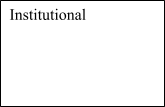
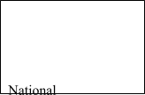
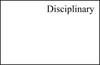
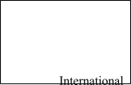
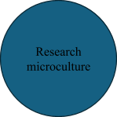
The relation between the components in this model is not merely conceived as one of increasing specificity (e.g., as department < institution < country < world) 1. Rather, the model recognizes that each context exerts influence within the microculture space. Consider, for instance, the roles of status and prestige as influences on behaviour. Within a microculture, these may be conferred based on achievements in any one or combination of the four contexts, such as a prestigious publication (disciplinary context), a managerial role (institutional context), or (inter)national activities not valued by the institution or discipline (e.g., non-scholarly committee service). Status in the microculture might also be bestowed irrespective of any acknowledgement within the four contexts, such as valued identities (e.g., multilingualism), interpersonal factors (e.g., generosity), or service to the microculture (e.g., group leadership, research skillsets).
The present study focuses particularly on the regularities of researcher understandings and behaviours within the context of one microculture. The following literature review considers the broader research culture of (onshore) NZ polytechnics and then focuses on applied linguistics in this sector.
6.3Context
6.3.1Research in New Zealand Polytechnics
Historically, research in NZ belonged in the universities. Universities provided research-led education (Education Act, 1989); polytechnics provided training in the vocational skills required by employers (Brake, 2019). Until the 1990s, research in polytechnics was mainly conducted informally by the occasional enthusiast (Bruce Ferguson, 1999), and disseminated mostly through internal reports rather than formal publications (Beverland & Bretherton, 1998).
A change followed neoliberal reforms beginning in the 1980s (Brake, 2019). Most significantly, the Education Amendment Act (1990) offered polytechnics the opportunity to deliver bachelor-level programmes, “taught mainly by people engaged in research” (Education Act, 1989, p. 464). Polytechnics moved quickly to establish a research footprint for accreditation and compliance. An account of these efforts at one polytechnic (Wintec, serving 15,000 mostly part-time students) records the inaugural research budget in 1993 as just NZ$10,000, and with an initial provision of just 10 days research time annually (of repurposed professional development leave) (Bruce Ferguson, 1999). Growth was accordingly slow.
Time to conduct research is the basic precondition for enabling a research culture (e.g., Bazeley, 1994). At universities in NZ (and elsewhere), this is specified as 40% under the standard workload model (40-40-20). In practice, senior researchers may receive considerably more than this (Manasseh, 2020) and even early career researchers average 44% (Sutherland, 2018). This prioritization reflects both the funding and commercialization potential of research and the contribution of research metrics to international ranking systems and other measures of institutional prestige. This is not mirrored in the polytechnic sector, where research policies mostly orient towards minimal regulatory compliance. Specifically, most teachers on degree programmes must demonstrate at least some annual research activity, though this need not be quality assured. Research time (if any) is rarely more than a 20% workload unless externally funded.
To date, polytechnic funding for research has largely been via the Performance Based Research Fund (PBRF). PBRF was modelled on the UK’s Research Assessment Exercise (RAE) but has distinctive characteristics, including a focus on individual researchers rather than departments. In mostly six-yearly cycles, individuals prepare an Evidence Portfolio highlighting their strongest research outputs and other activities (e.g., mentoring and supervision). Portfolios are externally assessed, and funding is determined by the quality of the portfolio and weightings by discipline. The weighting for applied linguists (whether under Humanities or Education) is 1.0, reflecting the typically low cost of associated equipment and consumables.
6.3.2Applied Linguists in the NZ Polytechnic Sector
The usual home of applied linguists in the sector is in English language teaching (ELT). Only universities offer applied linguistics programmes and currently just one polytechnic offers a TESOL diploma, with one other offering CELTA (Cambridge English’s certificate in teaching English to speakers of other languages). One institution (Unitec, Auckland) formerly offered a BA in English as an Additional Language, but this programme has long since closed and – unlike modern languages – ESL is now exclusively framed as a foundational skills course taken prior to mainstream study. Similarly, bachelor’s degrees in Pacific languages and cultures (e.g., Samoan and Tongan) are exclusively offered by universities, and – with one exception – those in Māori language and culture are exclusively offered by universities and wānanga (institutions providing a Māori context for teaching and learning).
For most applied linguists, a significant obstacle is that regulatory compliance does not require staff on ELT programmes to be research active. Nevertheless, many have managed to secure research time through leveraging PBRF. This usually requires demonstrating a sufficiently convincing track record of quality research activity to indicate that some of the associated costs (principally human resource) will be reimbursed through PBRF.
Over time, Unitec (Auckland) has had the largest and strongest team of applied linguists, and in Hayo Reinders (Head of Education, 2013-2019), easily the most prolific and high profile individual researcher. However, this status has been significantly disrupted by structural changes, redundancies and attrition (including Reinders’ departure). Also notable is Wintec (Hamilton), where at least ten PhD-qualified applied linguists were employed for a year or more between 2013-2023, (including 5 for 5 years or more), and where ELT research dates at least to the mid-1990s. Applied linguists have also been employed in most of the other polytechnics.
Beyond the polytechnics, NZ’s applied linguistics community remains relatively healthy overall, with an active professional network, a collegial environment, and a strong international profile. Aside from English and foreign language teaching and learning, specialties include the indigenous te reo Māori, New Zealand Sign Language, and the heritage languages of migrant communities. Though most of this work is published internationally, there are three domestic journals catering to locally focused work (for surveys of locally published work, see Ker et al., 2013; Skyrme & Ker, 2020).
6.3.3Social and Political Context of the Study
In 2019 the NZ government announced that the country’s 16 polytechnics (along with 9 smaller industry training organizations) would be merging into one entity, later branded Te Pūkenga – New Zealand Institute of Skills and Technology. When the writing of this chapter commenced in 2023, nearly 1000 allied (i.e., non-teaching) staff had just been informed that their roles were being disestablished, with changes to course provision scheduled for 2024. This created a great deal of uncertainty and anxiety about job security and the future of the organization. By the time the interviews were conducted, the new government had begun to disestablish Te Pūkenga. At the time of writing, few further details were available and anxieties remained.
6.4Methods
6.4.1Research Questions
Applying the Research Microcultures Framework to this context, the present study posed the following questions:
RQ1. What are the main institutional characteristics influencing applied linguistics microcultures in the network of NZ polytechnics?
RQ2. What are the major challenges within this microculture?
RQ3. What are the opportunities and how are these exploited?
6.4.2Researcher Positioning
In conducting the present research, aspects of my own institutional role and life history as an applied linguist have inevitably shaped the production of interview data and my subsequent interpretation of it. Having reflected on this, here I summarize in narrative form those aspects most relevant to my positioning. My story begins with joining Wintec as an English language teacher in 2011, at a time when the Centre for Languages had no sustained tradition of research leading to formal publication. This was during the final year of writing my PhD thesis. I taught 23 hours per week and had young children, so thesis writing happened after 8pm and at weekends. Without time or support for research, I intended to leave soon after graduation: Wintec promised a bleak future for applied linguists, and I was intent on pursuing my research interests.
I was unaware, however, that my Centre Director was building a case to secure a budget that would allow me – and eventually others in the center – to have research time as part of my role, a move supported by the institution’s Research and Development Director. Within months of finishing my PhD, I was fortunate to receive a reduction in teaching hours that allowed one day a week for research and another day in the role of the Centre’s Research Leader, tasked with supporting and growing a research community (formerly, an entirely honorary role). The Centre Director and former Research Leader had prepared the ground for a research culture to take root, particularly through nurturing a connection with the applied linguistics research group at the University of Waikato, with the two institutions alternately hosting weekly research presentations. Presenters ranged from high profile international scholars passing through town to postgraduate students. Over time, other staff completed PhDs and became collaborators.
Later, an overseas opportunity arose that seemed almost ideal. I decided not to apply. Why? I was swayed mainly by family, social and lifestyle considerations but I had also found ways to shape the research culture into a more personally satisfying environment. This experience has informed my views in writing this chapter, as have my subsequent experiences as manager of Wintec’s Research Office, where my main roles include supporting and growing the research community.
6.4.3Research Design and Procedures
The study utilized two data collection methods, narrative frames followed by in-depth interviews. Narrative frames are sentence starters which prompt respondents to both reflect on and reveal their experiences (Barkhuizen, 2014; Ryan et al., 2019). Candidate participants firstly received an online survey via a reusable link, which allowed for anonymous responses. This began with some initial survey-style bibliographic questions relating to career stage, current employment, teaching programme, qualifications, current research time allocation, and amount of free time spent on research. These were followed by the following narrative frames:
- My work history prior to joining the Te Pūkenga [polytechnic] network included …
- On joining, my initial impression of the opportunities to do research in this employment context was that ...
- Over time I found that ...
- For my research, the most challenging things about working in the TP environment are ...
- About opportunities for applied linguists in the TP environment, I would say ...
- I would describe the research culture here in my context as ...
- For an applied linguist considering employment within the Te Pūkenga network, my advice would be ...
In addition to generating useful data, distribution of the narrative frames served as a recruitment tool for reaching candidate interviewees from across the country, while also prompting reflection prior to the interview. At the end of the survey, participants were invited to provide contact details for a follow up interview.
Those volunteering for the next stage were invited to discuss their responses in semi-structured interviews, lasting 60 to 95 minutes via Zoom. The interviews were loosely structured around the following questions:
- What research systems and expectations are you aware of in your context? (relating to RQ1)
- What have been the frustrations or obstacles to research in your context? (RQ2)
- What are the research opportunities? (RQ3)
6.4.4Recruitment and Participants
Prior to data collection, a search of institutional digital research repositories and output reports indicated that applied linguistics research (broadly defined) was – or had been – fairly widely dispersed through the network. Relevant outputs were found for 11 of the 16 institutions (though some were dated), with some pockets of significant and sustained publication.
Participation was invited of any self-identifying applied linguist who was a current or recent employee of a NZ polytechnic. The recruitment procedure was to contact Research Offices in the network and after gaining approval, these offices facilitated distribution of the online survey. The survey also included an invitation to distribute the re-useable link to colleagues (current or former) who met the inclusion criteria.
All 16 research offices were contacted by email and three advised that they had no staff fitting the inclusion criteria. Three did not respond; given the timing of the study amidst questions of job security, I did not follow up. From the remaining ten institutions, 11 individuals completed the narrative frames, with five doing so anonymously. Although anonymous respondents did not disclose their institution, it appears that approximately 6 different institutions were represented. Five of the 11 had previously lectured in universities, mostly abroad. Two self-identified as early career researchers and the remainder as mid-career or established researchers.
Of the six who volunteered for an interview, one subsequently became unavailable, leaving five interviewees. One had worked in three different polytechnics and another in two. One had left the polytechnic sector and was now working in a university in Asia. Four of the five interviewees had held a PhD for six years or more, and the other for about a year. There were three native and two non-native speakers of English.
6.4.5Analyses
The interviews were transcribed verbatim. Auto-transcription (Otter.ai) was used to create an initial written record, which was then comprehensively checked and edited by the author for transcription accuracy. Both the interview and narrative frame data were then examined through thematic analyses (Mackey & Gass, 2012). Analysis involved iterative cycles and an inductive approach to identifying themes in the text. Themes were identified where they characterised a topic relevant to the research questions. Thematic labels were inserted into transcripts, such as [[funding]] or [[collaboration]], which provided a system of readily searchable terms. Sections of text were then organized under thematic headings and subheadings. Following refinement of the labels, connections were made between the underlying themes, and these were grouped under three main sections reflecting the research questions. The basis for a reportable finding was considered to be a cluster of statements from different participants that coalesced around a central theme, ideally with participants revealing varying dimensions of the issue. Larger themes were selected for reporting if they appeared widely representative. During drafting of the chapter, each interviewee was asked to verify findings arising from their interview and invited to edit the relevant extracts, especially if these misrepresented information or risked confidentiality.
6.4.6Ethical Issues in the Presentation of Findings
For several reasons, protecting the confidentiality of participant identities has demanded considerable effort. Firstly, the total pool of applied linguists in the network is relatively small, and some individuals are the only applied linguist in their institution. Still others may be readily identifiable by their area of expertise and even rather general biographical details. Similarly important is cognizance of the target readership of this chapter, which includes NZ polytechnic staff who may be able to identify individuals based on their expertise, experiences, and perhaps even by idiosyncrasies of speech. This is a significant concern at a time of institutional upheaval and looming redundancies, particularly where interviewees disclosed criticisms.
To mitigate these risks, the published version of this manuscript therefore:
- omits all but minimal biographical details
- eschews pseudonyms and other identifiers that enable tracking and the building of composite profiles
- where pronouns are stylistically appropriate, refers to every interviewee with she, irrespective of gender
- where general illustration is required (e.g., research leadership roles, visiting research fellows), I have provided examples from my own context (Wintec)
Within these safety-first parameters, the chapter therefore aims to mainly present a collation and synthesis of themes, while acknowledging the loss of details that would be available within lengthier narrative extracts.
6.5Findings
6.5.1Institutional contexts
Research Question 1 sought a broad characterization of the applied linguistics research microculture in the network. Of the 11 respondents to the survey, seven had an ELT role, three reported teaching in other disciplines and one reported working in a non-teaching, service support role; none taught other languages or were teacher trainers. Nine of the 11 reported having 0.2 of their workloads assigned to research, one had 0.1, and the other had secured a rare 0.5 research appointment on an externally funded project. All reported doing research in their free time, and of the six who offered numerical estimates, this ranged from five to 15 hours per week (mean = 9.7 hours, standard deviation = 4.4).
All five interviewees felt heavily invested in research, most saw it as the most gratifying part of their job, and all were greatly appreciative of the opportunities provided. Four had initially been employed solely to teach and had gained research time through developing a portfolio for PBRF. The Te Pūkenga merger and disestablishment had created a heightened sense of research precarity although all indicated they would attempt to continue their research even without institutional support.
A related theme among those who were currently teaching was the gratifying symbiosis between their language teaching role and their research role. For instance, when asked about her career plans, one emphasized her passion for teaching while adding that this was somewhat contingent on a provision for research time:
I actually love teaching language. So I don’t want to go to an area – I don’t want to drop that part. I still want to keep a part of my role teaching a language … [but] without research, simply teaching can be – I’m not sure if it is ah fair to say so – um boring. Some kind of fresh air needs to come in. I think research brings in fresh air to teaching.
In relation to institutional expectations, interviewees reported broadly similar details, with all reporting annual research key performance indicators (KPIs) or similar accountability measures. However, only one indicated institutional pressure to increase her volume of work; rather, KPIs seemed reasonable, and any stress was largely generated by personal goals. Four of the interviewees – all relatively experienced researchers – indicated that they were highly cognizant of PBRF, recognized it as funding their research time, and to some extent made decisions based on enhancing their PBRF portfolio.
There was some variation in the support infrastructure of different institutions, though each had access to a library and to a central Research Office that distributed research funding, oversaw or facilitated research ethics applications and approvals, and administered PBRF and conducted other reporting. In some but not all institutions, there was a departmental role comparable to that of Research Leader (as it is called at Wintec). For instance, at Wintec, each teaching centre allocates time (usually 0.2) to a senior researcher for research mentoring and various administrative responsibilities (e.g., managing a small budget, reviewing ethics applications, participating in meetings, overseeing the Centre’s research plan, advocating for researchers, reporting research outputs) and this leader is also tasked with growing the centre’s research community and capability. This involves activities such as mentoring newer researchers, helping them set goals, assisting with funding applications, informal peer review, and occasionally leading a team-wide collaborative project. As only a few staff have research time, as an accountability process, one important activity is an annual research symposium for those researchers to report back to their peers and management about their activity. It was understood that a consistent lack of publications could result in one’s research time being re-allocated to others awaiting their opportunity.
Beyond these more tangible responsibilities, one interviewee spoke of the supportive, interpersonal dimension benefits of regular contact with a Research Leader:
It kind of eases the pressure for someone to say to ‘okay so [name], so what’s your project and what are you doing, you know, how’s it going?’ It’s not a big stick. It’s just, how’s it going? And I know that either [they] would have said to me, would have then reflected back any kind of advice, you know how to get over whatever hump it is that I may be in the middle of. So that very collegial environment has been helpful.
6.5.2Obstacles in the Microculture
Research question two enquired into the obstacles to research within the microculture. Overall, most indicated that the sector can be a challenging environment in which to establish a satisfying research career, and this sense was particularly strong amongst those with few if any applied linguistics colleagues. For instance, one otherwise rather loquacious respondent, who had taught at universities elsewhere in the anglosphere, completed one narrative frame as follows: “For an applied linguist considering employment within the Te Pūkenga network, my advice would be … “Don’t.” Another provided the following: “I would describe the research culture here in my context as … currently extremely fragile and undervalued.”
Neither of these two respondents volunteered to be interviewed and the underlying issues were not made explicit in their narrative frames. However, the former implies a comparison with her previous university positions, and certainly research at universities is facilitated by comparatively generous research time, the teaching of applied linguistics, the presence of PhD students, extensive library resources, and substantially greater emphasis on research overall. The latter respondent’s use of the word “currently” could suggest a disillusionment more reflective of research climate, the fluctuating “mood of the organization at present” (Hill, 1999, p. 10), rather than a more stable research microculture. This likely reflects the uncertainties at the time of data collection surrounding the disestablishment of Te Pūkenga but could also suggest other persistent and perhaps structural sources of frustration.
Those who participated in interviews were more positive overall but also reported significant frustrations and obstacles. For four interviewees, one theme dominated: although all accepted that their institution prioritized teaching over research, it was the zealous policing of this mandate that on occasion caused frustration. For instance, reminders were frequent:
[Research time] is a privilege but most of us show that we do value it as a privilege. So we don’t need that thrown at us all the time … you just get told – it doesn’t matter what you’re trying to explain, you just get told ‘prioritize teaching.’ As if we don’t know that.
Another noted the low regard given to research for recognition and promotion opportunities:
If somebody’s leading placement testing at the department, that’s a very noticeable, highly valued role, a highly recognized contribution. But if someone’s leading research, the comment goes like ‘that’s still research, it’s not teaching, it’s not our priority.
Several also observed instances in which their line managers appeared unsympathetic to the challenges and sacrifices required to perform well in their research role. For instance, the third interviewee voiced frustration that her managers appeared to see her research activities as readily dispensable – her carefully planned data collection events were to be abandoned at short notice for relief teaching and newly scheduled meetings – despite remaining accountable for her research KPIs. The fourth spoke of intense frustration when her manager blocked a highly promising project on the grounds of her collaborator not being a PhD holder. She spoke of the considerably greater freedoms in universities, where such actions were unthinkable. Conversely, many also cited instances of receiving substantial support, with one being especially effuse in acknowledging her line manager as a strong advocate for her research.
Overall, although the standard 0.2 research time allocation was noted as a limiting factor, this was mostly downplayed. However, one former university lecturer longed for sabbaticals, when major writing projects or data collection could occur. With no such provision in polytechnics, and considerably less research time overall, projects inevitably took much longer to complete and so there was a temptation to “think small,” focusing on small datasets and lower-quality journals.
Finally, one notable frustration about career progression was voiced by a former international PhD student, who identified the lower academic status of polytechnics as a reputational barrier. Since declining a postdoctoral position abroad to remain in NZ, other opportunities had remained elusive, and successes were hard won. This stood in stark contrast to two of her fellow PhD students, who she described as very poor scholars, but who had enjoyed significant career opportunities and prestige since taking up positions in their home country:
what’s the difference? It’s the context. It’s the work environment. It’s also the level of institution. … sometimes I feel very – not ashamed – but I don’t feel good [laughs] because of the opportunities they have and the opportunities we have.
6.5.3Opportunities in the Microculture
Research question 3 asked about opportunities in the microculture. There was one notably unanimous response: that there are – in the words of one – “near endless possibilities” for quality projects, mostly relating to ESL teaching. At least two interviewees had conducted forms of practitioner research (e.g., action research and reflective practice) and at least three had conducted other types of classroom-based research. Three cited the inspiration from informally observing teachers and students and how this generated new ideas and inspired research questions. As one noted, simple proximity to language learners was stimulating:
Students, just in terms of English language teachers, we just have them there with us and … so I am daily reminded of the slow journey of acquiring a language. So I can’t go off on flights of fancy in my research because I’m absolutely up against it. So it’s very insightful. Every day I get insights again.
Hinted at here, and more explicitly stated by others, were the interactions between the informants’ research and their ELT practice. Their teaching motivated their research, and their findings shaped their understandings of language, learners, and pedagogy.
Other fruitful areas for research were mentioned, including teacher cognition and aspects of teacher education, where opportunities arose from working alongside a diverse range of teachers. Indeed, one characterized her institution as being nearly perfectly matched to her major topics of interest, due to the presence of native and non-native teachers, teaching international and domestic students, and their varying levels of experience and training.
Four interviewees discussed the need for research with adult migrants who had limited education and/or limited L1 literacy. Some campuses had substantial numbers of such students, who often present with distinctive characteristics and language learning trajectories, which can pose considerable teaching conundrums. For instance, one interviewee discussed the “skewed profile” of many such learners, where their oral language skills often far exceeded their print literacy, and the practical challenges this poses for curriculum design. Another noted the local relevance of these issues, and the greater feasibility of conducting such a study in a polytechnic compared to a university:
the students here, the LESLLA [low literacy] students, which are just never at a university, you know, so you couldn’t [do that] research there … I think that we probably have contact with different kinds of people than what people in the university would.
Another offered an anecdote illustrating how rarely such students attend or graduate from NZ universities: while half her current class might have limited L1 literacy, she had never knowingly encountered such a student at university. Both suggested that the absence of such students from university campuses accounted for why they were largely overlooked in the literature: illiterate adults had little visibility in academic communities and would be more difficult to access for university-based staff. This created opportunities for polytechnic-based researchers.
The interviewees not only recognized the opportunity to pursue such topics but developed specific strategies to do so. Perhaps the most notable of these involves a research group established within Wintec focusing on ELT students with low L1 literacy. In this paragraph, the observations of one interviewee are further elaborated through my own experience as a founding member of this group. The group was formed in 2018 to enable collaboration by the centre’s (then) six applied linguists. Membership was informal and has shifted following retirements and other departures. The major advantage of the group is in allowing the pooling of time and resources for tackling larger projects than would otherwise be feasible. Even where smaller teams collaborate (e.g., 2-3 authors), there is now in-house expertise regarding the literature and the option of informal peer review. Invaluably, soon after its formation, the group established a collaboration with a highly accomplished UK-based researcher and secured funding to host her as a visiting scholar and mentor (ultimately forced online by Covid-19). On the first project, this meant each team member was guided by a senior scholar in conducting an unfamiliar type of data analysis and the team was then guided through the writing and review stages. As the interviewee stated:
I learned so much being becoming a part of that. … to me that opened up that whole area to me, and in fact then led to my interest and led to me conducting research with other colleagues around the same group of learners, … so it’s been huge and I think that especially because they were for high ranking journals globally – so I wouldn’t have had those opportunities if I wasn’t in that centre working with those researchers.
The collaboration imposed a work schedule and division of labour that ensured reasonably strong productivity and successful publication. More generally, it built trust that enabled other collaborations within the team.
Relatedly, each of the interviewees spoke extensively about the value of collaboration and the opportunities provided by the sector. Two reported that they experienced greater opportunities at polytechnics than at universities, where one had experienced a strong preference for international collaboration rather than collaboration with colleagues, and the other reported scholars in other departments being physically and socially distant. As the former noted:
the disciplinary boundaries, at [polytechnic name] may be a little bit more porous than at the university, so it’s in some ways definitely easier to have those cross collaborations.
Another was actively involved in an external collaboration with members of an NGO, a connection which had been fostered through her institution’s focus on applied research and their strong community links.
Finally, interviewees discussed at length the activities (or lack thereof) of their departmental microculture, the links between their department and the wider community, and the inspiration and motivation these provided. Space does not allow the depth of discussion this point perhaps warrants, but within departments, activities ranged from informal coffee-fueled chats, research presentations, and talks by visitors. Cross-institutional links were important. For instance, Wintec had hosted international visiting scholars (Anne Burns, Jean Wong, and – remotely – Pauline Foster). Regional and national conferences were often invigorating and inspiring, and occasionally led to tangible research outcomes (e.g., helpful feedback, collaborations). Several had also been involved in organising regional or national conferences and symposia.
6.6Discussion
The microcultures framework predicts that there are contextually specific ways of doing research and of being a researcher. It predicts that microcultures may differ substantially between departments within the same institution. It further predicts that those of the same discipline will vary by type of institution, country, and the current international landscape. In general, the more two microcultures diverge across the four cultural dimensions, the more the experiences of researchers operating in those microcultures are also likely to diverge. In the present study, the focus has been on exploring key characteristics of one such applied linguistics microculture and the ways researchers respond.
Against the broader social and historical context, it is notable that the knowledge economy demands increasing levels of education (Marginson, 2010) but that this comes at the cost of qualification inflation, whereby degrees decrease in social and economic value (Allais, 2014). For those intent on a traditional academic career, the resulting surplus of PhD graduates in high-income countries has meant near obligatory overseas relocation for many (Lantsoght, 2018). Among those unable or unwilling to do so, many drift away from research. For instance, in the late 2000s, the administrator at my language school was a PhD-holder who simply never returned to research after completing her studies. In such ways, many who complete a PhD in applied linguistics never become applied linguists (Ellis, 2016). However, in the NZ context, conditions do exist to develop a research career within some polytechnic ELT departments. There, research microcultures have developed despite few financial incentives for institutional support. Although perhaps somewhat precarious, this culture is sustained through a combination of institutional goodwill, the support of senior management, the PBRF system, and the ability of researchers to leverage that system.
While admittedly polytechnics offer fewer research career opportunities than universities, for some applied linguists they may nevertheless be the more appealing option. For instance, many are drawn to applied linguistics through a passion for language teaching, and several of the interviewees emphasized how much they enjoy this aspect of their work; such opportunities are seldom available in local applied linguistics departments. Previous literature also highlights the increasing burdens experienced within NZ universities, where many face intense pressures to publish in highly-ranked journals, which for some comes at considerable detriment to their health and wellbeing (Manasseh, 2020). No such experiences were uncovered in this study. All interviewees reported having KPIs to meet but felt that these were achievable and commensurate to the research time they were provided. Instead, much of the pressure they reported was tied to achieving more personal goals.
In highlighting the characteristics of this research community, the present study also underscores factors that either foster or inhibit the development of research cultures. Most fundamental to fostering growth is the provision of research time (Bazeley, 1994). Once established, a microculture may be developed through coordinated activities, including research-focused meetings and discussion, scheduled events, peer support, and collaboration. The support of managers also plays a critical role, particularly in validating the institutional legitimacy of research to skeptical colleagues (Bruce Ferguson, 1999). Similarly, research is demonstrably valued where it is made visible (e.g., discussed) and where it is linked to hiring and promotion. However, managerial support is constrained by the subordinate status of research to teaching, and as this study shows, the policing of this status can become a source of friction.
For individuals and teams, a key to research productivity is developing a sustainable program of work. For many entering the polytechnic sector, this may require adjusting their focus to topics and methodologies that are viable within their teaching context and which do not require specialist equipment (e.g., for eye-tracking) or large samples of uniform populations (e.g., learners matched for L1 and level). However, with a well-conceived strategy, the sector also offers numerous research opportunities. In particular, the opportunities for practitioner research in the sector are evidenced in a range of publications describing innovative classroom practices (e.g., Fester & Horvath, 2022; Mischefski, 2017; Ryan & Forrest, 2021). However, perhaps the most significant opportunities lie in populations, contexts, and topics that are less accessible to university-based scholars and thus underrepresented in the literature. For instance, one meta-analysis found “a staggering 88% of all adult samples are university student samples” (Andringa & Godfroid, 2020), while a recent meta-synthesis encompassing 15,019 studies (learners of any age) revealed that just 2.5% were conducted in language institutes (Plonsky, 2023). Such sampling biases raise considerable concerns about the generalizability of SLA research, and staff in polytechnics are ideally placed to address sampling disparities. Examples of where they have done so include studies of adult L1 illiteracy and limited education (e.g., Benseman, 2014; Field & Kearney, 2021; Ryan et al., 2023).
6.7Conclusion
The present study offers a framework for conceptualizing research microcultures, spotlighting one such culture within the network of NZ polytechnics. The framework identifies microcultures as arising at the intersection of two or more of the institutional, disciplinary, national or international contexts. While providing challenges, the NZ polytechnic environment can be a viable and rewarding one for applied linguists. This is particularly so for those able to align their research with the opportunities that the context provides, where one is always in touch with language teachers and with under-researched learner populations. One angle that the present study has glossed over are the idiosyncrasies found in particular institutions, a necessary compromise to protect the identities of informants during a phase of job precarity. Future studies could usefully trace how characteristics of an institution, discipline, policy change, or country shape microcultures and explore how microcultures respond to specific developments within one of more the four contexts.
The most notable limitations of this study relate to the small number of respondents. The eleven survey respondents likely represent less than half the eligible population. Only five of those 11 subsequently made themselves available to be interviewed, and overall these five had completed the more positively-worded written narratives. My suspicion is that there were other potential candidates less fortunate in receiving research time or support, who may have either lapsed as researchers or who were actively seeking greener pastures. These voices would surely present counterpoints to the views presented by the more satisfied and optimistic informants in this study. A valuable addition to the literature would be future studies exploring failed or failing research cultures, particularly those associated with PhD holders who never do become applied linguists. Indeed, the value in exploring a research microculture is in identifying opportunities for optimization (Hill, 1999), and this would be usefully informed by comparing how research communities either thrive or wither.
I conclude this chapter with some brief recommendations based on the findings. Firstly, for managers and administrators, the most important message is that microcultures thrive when research is demonstrably valued. The most powerful demonstration is through providing a mechanism that enables time for research. Others include ensuring visibility (e.g., regular presentation events), acknowledging research achievements (e.g., announcing publications), implementing findings (e.g., research informed curriculum developments), and providing incentives and rewards (e.g., through promotion criteria). Also recommended are sensitivity and effective communication strategies when asking staff to abandon pre-arranged research activities at short notice (e.g., for relief teaching). While staff will typically accept the inevitability of such occurrences, it is helpful for managers to be aware that the request may be disruptive and even distressing when there are looming deadlines or challenges to rescheduling events (e.g., data collection events).
For researchers new to a polytechnic, time may be well spent investigating and reflecting on the institutional context, identifying its opportunities and constraints, building a network of potential collaborators and confidantes, and then planning one’s research accordingly. For instance, most participants in this study were keenly aware of the system of research rewards and incentives operating in New Zealand’s research landscape (e.g., PBRF) and had leveraged this to build a case to be supported with research time. Many had also adjusted the types of research they pursued in recognition that the strategic advantage of polytechnics was in areas such as practitioner research (e.g., reflective practice; action research) and working with certain learner groups. Importantly, they appeared most content where they had entered or had established an identifiable research community, such as those involving regular research meetings, discussions, presentations, and collaborative projects.
Notes
- Advisedly, the model is thus not represented within concentric circles (e.g., institutions nested within nations, nested within international contexts) nor within a Venn diagram (e.g., overlapping spaces). Rather, the model recognizes that each context exerts influence within the microculture space. ↩
References
Allais, S. (2014). Selling out education: National qualifications frameworks and the neglect of knowledge. Sense Publishers.
Andringa, S., & Godfroid, A. (2020). Sampling bias and the problem of generalizability in applied linguistics. Annual Review of Applied Linguistics, 40, 134-142. https://doi.org/10.1017/S0267190520000033
Barkhuizen, G. (2014). Revisiting narrative frames: An instrument for investigating language teaching and learning. System, 47, 12-27. https://doi.org/10.1016/j.system.2014.09.014
Bazeley, P. (1994). From vocational college to new university: The research profile and development needs of academic staff in a period of transition. Higher Education Research & Development, 13(2), 121-132. https://doi.org/10.1080/0729436940130203
Becher, T., & Trowler, P. (2001). Academic tribes and territories: Intellectual enquiry and the culture of disciplines. Open University Press.
Benseman, J. (2014). Adult refugee learners with limited literacy: Needs and effective responses. Refuge, 30(1), 93-103. https://doi.org/10.25071/1920-7336.38606
Beverland, M., & Bretherton, P. (1998). Striking the balance-developing a research based culture from scratch. Journal of Institutional Research in Australasia, 7, 44-56.
Brake, D.-J. (2019). ‘Doing More With Less’: A critical analysis of ideological discourse in tertiary sector policy documents and its impact on polytechnics in New Zealand [Master of Philosophy thesis, Auckland University of Technology]. Tuwhera Open Access. https://openrepository.aut.ac.nz/items/a5faea28-3fc7-41b7-8b31-124bdaddfd26
Bruce Ferguson, P. (1999). Developing a research culture in a polytechnic: An action research case study [Doctoral thesis, University of Waikato]. https://researchcommons.waikato.ac.nz/bitstream/handle/10289/13132/thesis.pdf?sequence=1
Callard, F. (2024). Towards a critical-conceptual analysis of ‘research culture’. Area, 56(2), e12905. https://doi.org/10.1111/area.12905
de Bot, K. (2015). A history of applied linguistics: From 1980 to the present. Routledge.
De Peuter, S., & Conix, S. (2022). Fostering a research integrity culture: Actionable advice for institutions. Science and Public Policy, 50(1), 133-145. https://doi.org/10.1093/scipol/scac059
Donald, J. G. (2009). The Commons: Disciplinary and interdisciplinary encounters. In C. Kreber (Ed.), The university and its disciplines: Teaching and learning within and beyond disciplinary boundaries (pp. 35-49). Routledge.
Education Act. (1989). https://www.legislation.govt.nz/act/public/1989/0080/latest/whole.html
Education Amendment Act. (1990). https://www.legislation.govt.nz/act/public/1990/0060/latest/DLM212611.html
Ellis, R. (2016). Becoming and being an applied linguist and doing applied linguistics. In R. Ellis (Ed.), Becoming and being an applied linguist (pp. 331-367). John Benjamins.
Fester, A., & Horvath, G. (2022). Instant messaging and the facilitation of collaborative, student-led learning and teacher-support: The NZCEL EAP scenario. TESOL Journal, 13(4), e691. https://doi.org/10.1002/tesj.691
Field, J., & Kearney, C. (2021). Partners in resettlement and adult education: Former refugees and host communities. In D. S. Warriner (Ed.), Refugee education across the lifespan: Mapping experiences of language learning and use (pp. 369-387). Springer. https://doi.org/10.1007/978-3-030-79470-5_20
Gironzetti, E., & Muñoz-Basols, J. (2022). Research engagement and research culture in Spanish language teaching (SLT): Empowering the profession. Applied Linguistics, 43(5), 978-1005. https://doi.org/10.1093/applin/amac016
Henson, R. K., Hull, D. M., & Williams, C. S. (2010). Methodology in our education research culture: Toward a stronger collective quantitative proficiency. Educational Researcher, 39(3), 229-240. https://doi.org/10.3102/0013189X10365102
Hill, R. (1999, July 12-15). Revisiting the term “research culture” (Conference presentation). HERDSA Annual International Conference, Melbourne, Australia. https://engineering.unt.edu/sites/default/files/Hill.pdf
Ion, G., & Ceacero, D. C. (2017). Transitions in the manifestations of the research culture of Spanish universities. Higher Education Research & Development, 36(2), 311-324. https://doi.org/10.1080/07294360.2016.1208153
Ker, A., Adams, R., & Skyrme, G. (2013). Research in applied linguistics and language teaching and learning in New Zealand (2006–2010). Language Teaching, 46(2), 225-255. https://doi.org/10.1017/S0261444812000535
Lantsoght, E. O. L. (2018). The A-Z of the PhD trajectory: A practical guide for a successful journey. Springer.
Mackey, A., & Gass, S. M. (2012). Research methods in second language acquisition: A practical guide. Wiley-Blackwell.
Madarbakus-Ring, N., & Benson, S. (2022). Applying the research. Modern English Teacher, 31(2), 81-85.
Manasseh, S. (2020). The impact of the performance-based research fund on accounting academics’ life in universities in New Zealand [Doctoral thesis, University of Waikato]. Research Commons. https://researchcommons.waikato.ac.nz/handle/10289/13739
Marginson, S. (2010). Higher education in the global knowledge economy. Procedia - Social and Behavioral Sciences, 2(5), 6962-6980. https://doi.org/10.1016/j.sbspro.2010.05.049.
McRoy, R. G., Flanzer, J. P., & Zlotnik, J. L. (2012). Building research culture and infrastructure. Oxford University Press.
Mischefski, A. (2017). Reflecting on action: A framework to analyse teacher talk. In R. Barnard & J. Ryan (Eds.), Reflective practice: Voices from the field (pp. 77-88). Routledge.
Moore, S. (2011). The struggle to develop a “research culture” in a developing country. TESOL Quarterly, 45(2), 334-343. https://doi.org/https://doi.org/10.5054/tq.2011.254525
Moran, H., Karlin, L., Lauchlan, E., Rappaport, S. J., Bleasdale, B., Wild, L., & Dorr, J. (2020). Understanding research culture: What researchers think about the culture they work in. Wellcome Open Research, 5, 201. https://doi.org/10.12688/wellcomeopenres.15832.1
Plonsky, L. (2023). Sampling and generalizability in Lx research: A second-order synthesis. Languages, 8(1), 75. https://doi.org/10.3390/languages8010075
Ryan, J., & Forrest, L. (2021). ‘No chance to speak’: Developing a pedagogical response to turn-taking problems. Innovation in language learning and teaching, 15(2), 103-116. https://doi.org/10.1080/17501229.2019.1687709
Ryan, J., Foster, P., Fester, A., Wang, Y., Field, J., Kearney, C., & Yap, J. R. (2023). L1 literacy and L2 oracy: A partial replication of Foster & Skehan (1996). Language Learning, 73(4), 1345-1368. https://doi.org/10.1111/lang.12557
Ryan, J., Rabbidge, M., Wang, Y., & Field, J. (2019). Satisfiers and dissatisfiers for international vocational education students: A case study using narrative frames. Journal of International Students, 9(3), 795-814. https://doi.org/10.32674/jis.v9i3.751
Sato, M., Loewen, S., & Pastushenkov, D. (2021). ‘Who is my research for?’: Researcher perceptions of the research–practice relationship. Applied Linguistics, 43(4), 625-652. https://doi.org/10.1093/applin/amab079
Skyrme, G., & Ker, A. (2020). A review of research in applied linguistics published in New Zealand (2013–2017). Language Teaching, 53(2), 144-168. https://doi.org/10.1017/S0261444819000478
Steneck, N., Anderson, M., Kleinert, S., & Mayer, T. (Eds.). (2015). Integrity in the global research arena. World Scientific.
Sutherland, K. A. (2018). Early career academics in New Zealand: Challenges and prospects in comparative perspective. Springer.
Te Pūkenga. (2024). Welcome to Te Pūkenga: He akoranga whaihua. https://www.xn--tepkenga-szb.ac.nz/
The National Ethics Advisory Committee – Kāhui Matatika o te Motu. (2023). Research in the New Zealand context. https://neac.health.govt.nz/national-ethical-standards/part-one/research-in-the-new-zealand-context#_ftn1
The Royal Society. (2017). Research culture: Embedding inclusive excellence. https://royalsociety.org/-/media/policy/Publications/2018/research-culture-workshop-report.pdf
Thoman, D. B., Muragishi, G. A., & Smith, J. L. (2017). Research microcultures as socialization contexts for underrepresented science students. Psychological Science, 28(6), 760-773. https://doi.org/10.1177/0956797617694865
Tucker, B. P., & Tilt, C. A. (2019). ‘You know it when you see it’: In search of ‘the ideal’ research culture in university accounting faculties. Critical Perspectives on Accounting, 64, 102069. https://doi.org/10.1016/j.cpa.2019.01.001
Investigating Early-Career ELT Researchers’ Agenda Setting Practices in Relation to Researcher Identities
Abstract
Research agenda setting is a critical component of the research cycle and the knowledge generation process as it encompasses a wide range of issues, including scientific ambition, beliefs on collaboration or innovation, etc. Studies demonstrate that research agenda setting is determined by individual, organizational, or environmental factors. This chapter aims to get an understanding of early-career ELT researchers’ (ECRs) agenda setting to uncover their beliefs or cognitions regarding what the role of publishing in their careers is, how they decide on research topics, what the role of colleagues in the research cycle is, or what drives them to conduct research in the Turkish context. The reason why the study focuses on the Turkish context and ECRs is that there is a sizeable number of emerging ECRs in the Turkish context. The second reason is that those emerging ECRs represent a changing paradigm in the Turkish context, where the previous generation of scholars was not well-versed in contemporary research procedures. Data was collected through semi-structured interviews that triggered the participants’ narratives of their identity development and agenda setting procedures. The results indicated that the most commonly found identity types were disciplinary experts, evidence-based teachers, and continuous researchers, and that the scientific ambition of the participants mainly reflected the so-called ‘publish or perish’ principle, and most of the participants were willing to align their research with their practice. The findings are discussed in relation to neo-liberal concepts like the commodification of education, credentials inflation, ranking systems, or criteria-based promotion policies.
Keywords: Research agenda setting, ELT early career researchers, Researcher identity, Credentialism
7.1Introduction
Of late, more scholarly attention has been paid to the research agenda-setting of academics (Horlings & Gurney, 2013; Santos & Horta, 2018; Zhang & Horta, 2023). Research agendas could be defined as their intended plans as well as problem-solving behaviours or intended academic actions, academic preferences, strategies, or objectives (e.g., Ertmer & Glazewski, 2014). In the present study, we focus on the research agenda setting procedures of early-career English language teaching (ELT) researchers (ECRs). ‘Early career’ in academia is typically defined in terms of research capability in the five years following PhD completion. Shattock (2014) suggested that knowledge generation is critically dependent on academics’ preferences in terms of topic selection, collaboration, divergent versus convergent behaviours, etc. Therefore, we especially focused on ELT academics who have completed their PhD over the last five years.
Several reasons motivated the present study. The first reason is that occupational (dis)satisfaction at an academic level is closely related to research output (e.g., Wan et al., 2015; Zhang & Horta, 2023). Second, over the last ten or so years, a sizeable number of ECRs completed their PhDs and started working as full faculty members at various universities in different parts of Türkiye. This could be understood from the distribution of PhD dissertations over the years. The number of PhD dissertations between 1988 and 2015 is 160, while the number of PhD dissertation written between 2015 and 2024 is 200 (The Council of Higher Education, 2024) Some of them completed their postgraduate education abroad and could have a different vision compared to those who completed it in Türkiye. Hence, it is important to get an understanding of how these different groups direct their research energy. Third, knowing the research agenda tendencies of ECRs would enable us to provide more accurate guidance to them given that, as was suggested by Zhang and Horta (2023), very little research exists about research agenda setting of academics. Fourth, as was reported by Zhang and Horta (2023), research agenda setting preferences of academics vary based on their demographic, institutional, or personal characteristics. Finally, the academic world today forces academics to be highly selective or divergent in their research endeavour. This mostly stems from the exigencies of the knowledge economy and international competition, which bring about more concern for accountability, competition, and university rankings. And this, as a natural result of the market-driven economic ideology of neo-liberalism, results in the commodification of higher education, where academics have to satisfy various specified credentials. In a sense, credentialism, rather than professionalism, could have an immense impact on research agendas (see Turner & Yolcu, 2014; Zajda & Rust, 2020), a case that was largely expressed through credential inflation theory by sociologists (see Araki & Kariya, 2022). Hence, we propose that the commodification of higher education could have a strong influence on how ECRs construct their identities and research agendas, and hence it, would be insightful to identify research agenda procedures in the Turkish ELT context.
7.1.1The Concept of Research Agenda Setting
In this study, we conceptualized a research agenda-setting process following Horta and Santos (2020, p. 2386). They outlined the dimensions of research agendas as comprising six steps, which are (1) scientific ambition; (2) discovery; (3) conservative; (4) divergence; (5) convergence; (6) mentor influence; (7) tolerance for low funding; and (8) collaboration. Scientific ambition refers to the perseverance of an academic in sustaining academic studies and completing them, including the desire to attain prestige or recognition. Discovery is about to what extent one would be interested in ground-breaking research. Conservative shows whether one opts for the conventional means of research. Divergence reveals multidisciplinary attempts, while convergence is related to sticking to only one line of research. Relevant research indicates that both divergence and convergence are significant factors in research profiles (e.g., Martimianakis & Muzzin, 2015). Mentor influence is concerned with the amount of mentors’ or supervisors’ influence on research agendas. Tolerance for low funding is about whether and to what extent an academic handles lack of funding. Lastly, collaboration indicates the degree to which one is willing to take part in joint projects.
7.2Literature Review
The literature review here first charts the previous work on ECRs’ research agenda setting practices and then elaborates on the concept of researcher identity and related research.
Studies on ECRs’ Research Agenda Setting
Research demonstrated that agenda setting procedures may vary depending on personal or institutional factors (e.g., Horta & Santos, 2020; Santos et al., 2020a, 2020b; Zhang et al., 2020). For example, studies showed that male and high-experience academics tend to focus more on groundbreaking topics, while female and junior academics pursue more convergent plans for their academic work (Horta & Santos, 2020; Santos et al., 2020a; Zhang et al., 2020). Horta and Santos, (2020) found that academics with more autonomy and inclination for collaboration produce more groundbreaking research.
Studies on research agenda setting are relatively scarce. For example, Santos and Horta (2018) explored higher education researchers’ agenda setting practices and demonstrated that higher education researchers could be grouped into two main categories, namely those who opt for more cohesive research practices and those who opt for more groundbreaking research practices. Zhang and Horta (2023), on the other hand, worked on research agendas and job dissatisfaction of Hong Kongese academics and found that research agendas were different based on age, gender, academic rank, and academic discipline. Their findings indicated that trailblazing research agendas correlated with low levels of job dissatisfaction. Third, Santos et al. (2020a) reported that female academics tend to prefer more reciprocally connected and less risky agendas and that they had more inclination to work in collaboration. They found that institutional factors determine research agendas for both male and female academics. Finally, Tack et al. (2018) examined the professional development expectations of Flemish teacher educators and reported that insufficient attention was paid to the professional development needs of teacher educators.
7.2.1The Concept of Researcher Identity
There are various conceptualizations regarding the term researcher identity. Most of them boil down to the question of to what extent researchers prioritize research or teaching or both (see Korhonen & Törmä, 2016; Nevgi & Löfström, 2015). A more comprehensive identity classification was proposed by van Winkel et al. (2017), which involves six categories (1) ‘continuous learner’, who turns career knowledge into a lifetime pursuit, (2) ‘disciplinary expert’, who values disciplinary knowledge, (3) ‘skilled researcher’, who excels in conducting research, 4) ‘evidence-based teacher’, who is eager to integrate research into their teaching, (5) ‘guardian of the research work process’, who is keen on recognizing the distinction between research and teaching, and finally (6) ‘liaison officer’, who cherished a keen interest in synergizing various disciplines. Van Winkel et al.’s classification is the one we used in the study.
A thorough literature review showed us that research agenda practices of academics have not been explored extensively despite their significance in academic knowledge generation (e.g., Santos et al., 2020b; Santos & Horta, 2018). The exploration of agenda setting practices assumes importance as they are determined by various factors that include age, gender, academic rank, or academic discipline (see Santos et al., 2020a; Zhang & Horta, 2023). Existing studies are mostly varied and do not focus on one specific discipline or study group. Moreover, most studies are quantitative or mixed-method in nature. Qualitative research allows researchers to consider the meaning of responses more in-depth, understand better people’s subjective experiences, their meaning-making processes, and thus obtain profound understanding of the phenomenon under study (Leavy, 2022). Therefore, it would be a good idea to focus on research agendas from a qualitative perspective. Furthermore, researchers emphasized the assumption that teacher educators are of utmost importance with severely limited exploration on how they form their research agendas (Czerniawski et al., 2017). Hence, the present study aims to answer the following questions:
- What are the main indicators of ECRs’ identities?
- What are the main drives for ECRs’ agenda setting practices?
7.3Methodology
7.3.1The Study Context
Currently, ELT departments are found at various state and private universities in Türkiye. The number has exploded with the expansion of the number of universities in the country over the last 15 years, though not all embody ELT departments (see https://yokatlas.yok.gov.tr/lisans-bolum.php?b=10108). Yokatlas is a national tertiary education platform which involves detailed information about the number of universities, distribution of departments, the number of students, and the standards for entrance to these departments. According to Yokatlas, around 120 universities, both state and private, embody an ELT department, 80 of which were initiated during the last 10 or 15 years. This resulted in a natural demand and, thus, an explosion of ECRs. In terms of variety, the ELT departments in Türkiye offer a relatively balanced variation of experts, including TESOL, linguistics, and literature.
The research culture in the Turkish context has recently become more dependent on quantity rather than quality, preoccupied with the question ‘how many?’ in most promotional instances. Moreover, the quantity of academic production is also valued in the academic incentive, which is offered as monthly payments to academics when they publish more than a certain number of articles or conference proceedings. This incentive program was initiated in 2015 and has been implemented since then with minor modifications. Basically, the system depends on the calculation of the publication grade of an academic and aims to pay monthly allowance accordingly (detailed information could be found at https://www.mevzuat.gov.tr/mevzuat?MevzuatNo=201811834&MevzuatTur=21&MevzuatTertip=5).
The ELT community in Türkiye is a vibrant one where ELT academics follow each other’s work, express appreciation for publications shared on social media, and enjoy a relatively big number of conferences regularly conducted. These conferences represent valuable platforms where academics share their work and find a chance for networking. Most ELT academics are willing to share their work or perspectives with other ELT academics. The second aspect is that the number of ELT academics, especially ECRs pursuing PhDs has exploded over the last decade.
7.3.2Participants
The present study was conducted with ten ECRs with various degrees of experience and workplace (Table 7.1). We deployed maximum variation sampling so that we could include participants from diverse backgrounds and workplaces. In addition, we also referred to the convenience sampling method (Golzar et al., 2022; Saumure & Given, 2008). We sent invitations to a large number of potential participants and conducted interviews with those who accepted our request. Since Türkiye hosts more than 200 universities, which allows for one university in each city (even more in major cities), we attempted to capture the variety. We selected participants who took their PhD degrees from different major universities in Türkiye, located in İstanbul, Ankara (the capital), İzmir, Adana, Eskişehir and Kayseri. Almost all of these universities have been hosting ELT departments for more than 20 years and employ most of the senior ELT professors. The reason why we did not select participants from peripheral universities is that most peripheral universities do not hold ELT PhD programs. In fact, the ELT PhD programs we selected our participants from function as catalysts in providing ELT academics for the newly opening universities in Türkiye. The recent trend has been this way. One reason why peripheral universities do not hold PhD programs is the limited number of associate or full professors employed in these departments, not meeting the minimum standards for offering a PhD program. Hence, we included participants who completed their PhD within one to five years. As aforementioned, we define ECRs as researchers in the first five years of their careers after they complete their PhD. Finally, we tried to hit the balance in terms of previous teaching experience. The nature of previous teaching experience could include either working as a teacher at a public school or as an instructor at tertiary level. We propose that having various teaching experience will have a varying degree of impact on how practice-related topics form the agenda setting of researchers.
| Code | PhD completed in | PhD University | Previous teaching experience years | Research experience abroad |
|---|---|---|---|---|
| P1 | 2022 | Türkiye (major) | 7 public + 5 tertiary | No |
| P2 | 2021 | Türkiye (major) | None | No |
| P3 | 2021 | Türkiye (major) | 7 tertiary | Yes (5 years) |
| P4 | 2020 | Türkiye (major) | 9 tertiary | Yes (7 months) |
| P5 | 2022 | Türkiye (major) | 5 public + 8 tertiary | No |
| P6 | 2019 | Türkiye (major) | 6 tertiary | No |
| P7 | 2022 | Türkiye (major) | 4 tertiary | No |
| P8 | 2019 | Türkiye (major – private) | None | No |
| P9 | 2021 | Türkiye (major) | None | No |
| P10 | 2022 | Türkiye (major) | 6,5 tertiary | No |
7.3.3Data Collection and Analysis
The study depends on the narratives of ten ECRs collected through some content questions that were also analyzed within the framework of narrative inquiry. As we were mainly interested in participants’ own meaning-making of their experiences, the narrative inquiry best fit in as a method to collect their experiences. The dynamic nature of the experience itself also enabled us to utilize their narratives since “[e]xperience [is] understood narratively (…) and it is shaped in the making and remaking, in the recollecting of what is past, but also in what continues to live on in future moments” (Caine et al., 2022, p. 20). The content questions were mainly based on the dimensions provided by Horta and Santos (2018), which include (1) scientific ambition (i.e., What motivates you most to conduct a study?); (2) discovery (i.e., What is your idea of innovation / contribution in research practices); (3) conservative (i.e., To what extent are you open to new ways of research?); (4) divergence (i.e., Do you prefer to be on a specific tract or opt for multidisciplinary research?); (5) convergence (i.e., Do you conduct studies concurrently or finish one and then embark on a new one?); (6) mentor influence (i.e., What is the role of your PhD supervisor in your choosing research topics?); (7) tolerance for low funding (i.e., What is the role of funds in your choosing research topics?); and (8) collaboration (i.e., What are your ideas about collaboration in research projects?).
We analysed data using thematic analysis approach (Clarke & Braun, 2017). After the codes were generated, overarching themes were defined for organizing the framework presented by the participants. We separately conducted the analysis after obtaining the transcriptions of the recorded audio data. During the comparisons, we negotiated the mismatched items to reach a consensus.
7.4Findings
Early-Career Researchers’ Identities
Table 7.2 outlines the researchers’ identity types, the categories we classified identity types, and the codes as the indicators of these identities and categories.
| Themes | Sub-themes | Codes |
|---|---|---|
| Continuous identity | Personal/academic aspirations | To get promotion Personal interest / enjoying readingThe desire to become an academicFollowing academic social media platforms The desire for specialization |
| Criteria | Criteria are not important for me Institutional criteria (demotivating)Publishing as the main criterionCriteria that push one to work individually | |
| Experiences | Past experiences and observations | |
| (De)motivation | Working on topics of interest in PhD (motivating)Seeing the outcomes of my research (motivating)Funding is influential, but not the main factor Ethical committee permits (demotivating) Coursework/administrative work (demotivating) Finding and persuading participants for the study (demotivating)The format impositions of journals (demotivating) Lack of disciplinary knowledge (demotivating)Academic anxiety (demotivating) | |
| Mentor influence | Agency giving mentors Guiding mentors Resilience enhancing mentors | |
| Disciplinary expert | Contribution to the field/being problem-based | Other researchers and practitioners reading my work A problem-based approachHaving tangible outcomes |
| The teacher educator | Teacher educator rather than a researcher Desire for better teaching An inclination to study teacher education Teaching and publishing go hand in hand | |
| Evidence-based | Research – practice connection | A desire to disseminate the findingsObserved problems in one’s teaching Aligning research with own teachingInability to align research with practice |
| Skilled researcher | Research as duty | Research as a fundamental duty Lack of satisfaction without doing research |
| Research as a desire | Publishing is more prominentProfessors setting an example Quality rather than quantity | |
| Collaboration | Collaboration is more productive Sharing new research | |
| Liaison officer | Supporting | Specialization |
| Non-supporting | Focused on one field Not multidisciplinary due to the criteria | |
| In-between | Specialization First phases are superficial Specialization is not possible in Türkiye |
For the continuous identity type, we identified the following sub-themes: Personal/academic aspirations, criteria, experiences, and (de)motivation (Table 7.2). The emerging codes under personal/academic aspirations included getting promotion, personal interest, the desire to become an academic, or specialization in a particular sub-area. In criteria dimension, we saw that the criteria imposed by institutions or the Higher Education Council of Türkiye (HEC), may be inhibiting factors as they limit researchers. Among the most motivating factors were coded as working on topics of interest, sharing outcomes of research, or excitement in new projects. Demotivating factors include the difficulty of the ethical committee permit process, finding participants for their research, or lacking disciplinary knowledge. Mentor influence also contributed to continuous identity formation. Most of the participants stated that their mentors were influential and dominant at times. The two main sub-themes that emerged under the theme of disciplinary expert identity include contribution to the field and the teacher educator. Most of the participants stated that they take great delight when their research outcomes are beneficial for other contexts. In the teacher educator sub-theme, the desire for better teaching was the prominent code.
As for evidence-based identity, mostly positive responses were recorded from the participants in terms of aligning research with practice. Most of the participants stated that they made the first attempt at academic work from their contextual problems and could mostly combine their research with their practice. Regarding skilled researcher, none of the participants foregrounded research as their primary purpose. Though one of the participants stated that publishing was primary, the focus was on feeding his practice. Regarding the liaison officer identity, we identified three positions, including participants who strongly support specialization, going multidisciplinary, or both, but did not label any participants with this identity type. One participant stated that specialization was not possible in Türkiye. Interestingly, we did not label any of the participants with the guardian of the research work identity. Indicators of the identity structures of the participants are given in Table 7.3.
| Identity type | Participants | Descriptions of the participants’ research identities |
|---|---|---|
| Disciplinary expert | P1, P3 and P6 | My primary responsibility is to teach while my fundamental purpose is to conduct research. (P1)An ELT academic should not overlook the teaching component. An ELT researcher should have teaching experience at some point. (P3)My primary task is teaching, and my secondary aim is research. (P6) |
| Evidence-based teacher | P2, P4, P8, P9 and P10 | I am a research-based ELT academic. My starting point in my research practices is the problems I face in my teaching. (P2)Research should be for teaching. The criteria determined by the Council of Higher Education are also important to me. (P4)I have a tripartite profile of identity, including my identity as a teacher, a researcher, and as an administrator. (P8)I have three responsibilities: teacher education, research, and community service. (P9)I am both internally and externally motivated. (P10) |
| Continuous learner | P5 and P7 | I am still at the very beginning of the long journey. Now, I focus on the outcomes, but I know that I must be process-oriented. I am rather problem-based. (P5)I try to read and write as a researcher. I am enthusiastic and intrinsically motivated. As a researcher, I think I must have an influence. (P7) |
First, we asked the participants what the role of research was in their careers. While some participants prioritized research over other responsibilities, most others prioritized the praxis between research and teaching. Some of the participants were observed to be highly motivated. One of them, for example, stated the following:
Publishing has always been at the centre of my career. The main drive for this was my admiration for my professors. My professors’ passion in conducting high-quality publications influenced me. I realized the significance of publishing during my M.A. degree. (P1)
P1 also mentioned that publishing was more important than lecturing and added that he followed his professors very closely and got a lot of inspiration from them. He also stated that being an academic has always been on his agenda. Another ECR who prioritized research stated that “I sometimes remind myself the ‘publish or perish’ motto” (P3) and complained that workload, in addition to administrative duties, were hindering factors. Another ECR who emphasized the role of publishing suggested the following:
I realized the significance of publishing during the PhD process. I saw that publishing was our primary duty and then I started my publications. One factor that enabled me to realize the role of publication was the rule that stipulated PhD student to publish before they complete their PhD. (P4)
Our study found that most of the ECRs have a passion to combine their research and teaching to varying degrees. One of the participants, as an illustration, commented on her motivation:
Shortly after my graduation, I took great delight in teaching and researching teaching-related things. While I was conducting my lessons, I was always thinking about what theories are at work in my teaching and classroom events. My desire for research stems from my inner motivation rather than outside factors. (P7).
Finally, we found that being in a private university may have an influence on researchers’ identities. One of the participants explicitly mentioned the role of working in a private university in boosting her extrinsic professional motivation:
I could say that I have a combination of intrinsic motivation in addition to instrumental motivation given that our institution, a private university, requires us to conduct research. This means that we also have institutional criteria. (P10)
The second dimension of the scientific ambition dimension inquired how participants decided on research topics. Our analysis indicated that ECRs derive their study topics from several sources ranging from problems that they face in their practice to the convenience of participants or data, or conferences and collegial interaction besides literature review. One of the most prevalent starting points was the problems they faced in their practice. The following quote points to the significance of personal problems:
I have a personal memory that prompted me to focus on my problems as a researcher. It was during one of my micro-teachings where I had a problem with my voice, and I had some classroom management issues due to my inefficient use of my voice. After this incident, I started to focus on my own problems as an instructor in the first place. (P2)
Popularity was also important for some ECRs. One of the participants highlighted the significance of citations given by other scholars to his publications:
It is important the study get[s] a lot of citations. Also, the selection of the journal to publish assumes importance because I would not like to publish in a journal that will be of no benefit to me (P6).
Reading literature was one of the powerful factors. The participants identified that the limitations and suggestion sections of articles facilitated their topic selection. Personal interest also emerged as a significant factor. P1 indicated the importance of the trendy topics as in the following quote:
Sometimes, I tend to select my study topic based on my personal interest. For example, I like (…) topic of emotions and some of my study plans are on language learning emotions. Trendy topics may also be attractive, but I mostly select topics of my personal interest. (P1)
Next, we asked the participants about the most important drive for their research pursuits. The most outstanding reasons included academic production, academic appreciation, contribution to the literature, spreading knowledge, personal satisfaction, problem-solving, curiosity, and getting a promotion. The answers provided by the ECRs shed light on their identity compositions. For example, those who have a ‘continuous learner’ identity valued personal curiosity or contribution to practice more.
Another point that revealed the identity composition of ECRs in terms of criteria-oriented or research-oriented perspectives was seen as what triggers them to conduct research. P3 emphasized contributing to the research community with her findings far more than the institutionally set criteria:
Most importantly, I conduct research to benefit teacher candidates and other shareholders, guide prospective researchers, but not to satisfy the academic performance requirements of my university. What motivates me more is to see academics around me working and the idea that this will increase the image of our country on the international arena. (P3)
From this quote, we clearly elicit the inner motivation of the researcher. She underlines that she is not working for the criteria but for the betterment of teacher candidates and the country’s image. The identity profile of ECRs seems to exert considerable influence on their agenda setting. For example, one of the participants stated, “I view myself as an educator, so my research projects should be based on problems in teaching” (P9).
The top-down, criteria-intensive promotion of the academic structure in Turkish academia seems to limit ECRs. As an illustration, P9 expressed the pressure coming from the managers on determining where her research should be published:
The criteria are overwhelming us. For example, if I don’t publish in Web of Science, the rector sends us messages asking why we do not have ESCI-indexed or SSCI-indexed articles. That makes me sad, but I know I have to do it. (P9)
Early-Career Researchers’ Agenda Setting
The second target of the study was to identify the main drives for ECRs’ agenda setting. For this, we analysed convergence or divergence, discovery and research-practice interface, collaboration, tolerance to low funding, and mentor influence.
Results on convergence vs divergence indicated that there is confusion among ECRs in terms of this issue. However, as they progressed in the field, more consistent perspectives were voiced. For example, P4, who finished his PhD four years ago and just submitted his associate professorship portfolio to be evaluated by the experts in the field, stated the following:
During my PhD period and shortly after it, I thought that I could do everything related to ELT. For example, I thought that I could integrate psychological counselling into ELT studies. But the system forces us to specialize which limits the prospects for multidisciplinary perspective[s]. However, specialization leads to limited scope. I do not focus on topics that are outside my study area, but one part of me says that I may be missing something. (P4)
While some researchers supported one-track research, others valued multidisciplinary studies highly. One of the participants with a ‘continuous learner’ identity stated that he opted for one-track research thanks to the strong influence of his PhD supervisor, who advised them not to move from one topic to another. Another researcher also confirmed the multidisciplinary nature of ELT:
It should be multidisciplinary for sure because we cannot talk about a pure ELT. We have technology or psychology in it. Since I am not an expert in all these areas, we could work in a multidisciplinary manner in tandem with experts from these fields. I enjoy reading and writing multidisciplinary studies. (P9)
A more moderate view was raised by one participant who had completed PhD three years ago and had five years of experience abroad. She evaluated both sides as:
Both, in fact. I enjoy specializing in a particular area. When you conduct research on any topic for the first time, you inevitably go shallow and may not keep up with someone who has been working in that area for twenty years. But in Türkiye, specialization is not that possible. Yet, although specialization is good, I don’t want to stay in one tract forever. I think researchers may have primary and secondary research areas. (P3)
We inquired about the participants’ views on the idea of innovation or contribution (discovery and research-practice interface). We saw that most of the participants aligned innovation or contribution with relevance to actual teaching, problem-solving, or having implications. A sample quote is as follows:
A study should be problem-based. In my PhD thesis, for example, I designed a professional development program, and it turned out to be highly efficient. Apart from this, discovery, to me, implies that a research study should come up with a concept of term. (P10)
Regarding discovery/contribution dimension, some of the participants affirmed that their research guided their practice both before and after the PhD level. Conversely, a few participants stated that their research did not match with their practice. One of them stated that she could not manage that, attributing it to the general learning culture in Turkish context. The participant meant the lecture and teacher-based teaching style in the Turkish education system, which does not give much space for innovation or collaborative work. However, we also propose that this could result from the incompetence of the ECR in managing to include research-based practices in her teaching. One of the participants cited the significance of working in a private university and the extent to which she could align her research. She stated that working in a private university prevented her from conducting the practicum process as the relevant research was framed. That is, working in a private university somehow limited her academic freedom to integrate research-based practices into her teaching.
The results on academic collaboration indicated that the participants positively valued collaboration in research practices. The following excerpt gives a clear picture of the perspectives of the participants:
If we have similar styles, I take great delight from working with a partner because, in the first place, we can share the responsibility. Working individually also provides some benefits like doing it at your own pace, but working with a partner teaches us how to approach a problem from different perspectives in addition to allowing us to learn how to write from our partners. (P10)
P4, with seven months of experience abroad as a researcher, complained that the academic collaboration in Turkish academia was faltering. He also complained that the new criteria imposed by the Higher Education Council, the official body responsible for determining associate professorship requirements, limited their work. Similar remarks regarding the efficiency of collaboration but the inadequacy of our academics were voiced by another participant:
Colleagues are definitely helpful, but we do not have an academic culture that has embraced collegial collaboration. But when I see people who can work in groups, I become excited and think that I would like to work with such people because, as researchers, we all have different perspectives to share. (P4)
Two of the participants brought up the new associate professorship criteria as forcing them to work alone since the new criteria require associate professor candidates to publish at least one SSCI-indexed single-author paper. One fundamental reason is that in calculating the total point for an associate professorship application, the total point is divided by the number of authors. In addition, the new regulations also mandate that candidates pen at least one SSCI-indexed article as a single author. During the interviews, they mentioned that this has a limiting character and causes academics to lose some collaboration chances. This clearly indicated the limiting nature of the criteria-based evaluation system employed in Türkiye.
Lack of expertise emerged as a significant factor that prompted ECRs to collaborate. One of the participants stated the following:
Now that I am at the very beginning of the road, there are too many things I need to learn. I don’t think I can handle this all by myself. So, I would like to publish with friends that I can trust. Collaboration is good. There is strength in the unity. (P1)
Tolerance to low funding was viewed as a significant component of agenda setting. Three lines of thought emerged from the analysis. Three of the participants stated that funds may change their research agenda choices. One of them said, “if there is funding, (…) when expenditures are covered, it is highly beneficial for us. Funds change my research agenda” (P6). Another ECR stated that funds change her mind when they are cost-effective. A second line of agenda setting procedure emerging from the data was a hybrid approach. One of the participants who was identified as an evidence-based disciplinary expert stated, “I think funds have an influence, but they do not change the whole idea. Funds are only critical when we need equipment or some other expenditures” (P3). This is a powerful indication of how identity influences agenda setting.
The overall analysis demonstrated that supervisors exert enormous influence, either positive or negative, not only in terms of topic selection or designing the study but also in providing guidance or resilience to PhD candidates. One of the participants expressed, “she always supported me. As for my topic, I spent one year trying to conceptualize it, but I couldn’t. Then, I told her that I wanted to change it, and she welcomed this idea. This was very supportive of her” (P9). Furthermore, regarding the agency-building aspect of supervisors, one participant stated the following:
My supervisor is already an influential figure in Türkiye. We had a relationship beyond supervisor-supervisee, which extended into the follow-up process in my career. Rather than imposing ideas or things to read, she provided me options and asked [me] to evaluate. She guided me at points where I dried out. She was like supervisors in universities abroad. She gave me agency and resilience. (P3)
7.5Discussion
The findings of the study reinforced some of the conceptualizations found in the literature. For example, we mirrored the identity development of academics suggested by Korhonen and Törmä (2016), who suggested that researcher identity involves three broad categories, which are development-oriented, constructive-conflicting, and unsolved. Most of the participants stated that they had a developmental mindset, while some others mentioned that they could not identify a clear direction in their identity development. Most of the participants mentioned that in the early years after the completion of their PhD, they were engaged in a self-conscious process of enhancing their disciplinary knowledge. Second, our results corroborated the previous research in terms of the impact of demographic, institutional, or personal characteristics in agenda setting (e.g., Zhang & Horta, 2023). For example, two of the participants consistently mentioned that their research practices stemmed from their personal curiosity. Our further analysis also indicated that experience abroad has an immense influence on how researchers conceptualize and maintain their research practices. They were more of balancing their own interests with the respective field researchers’ expertise in combination with the contextual necessities. For instance, they examined the teaching contexts with reference to their students’ needs and acted accordingly while defining the research agenda.
Regarding identity types, the most common identity types were evidence-based teacher, disciplinary expert, and continuous learner types, while, interestingly, none of the participants were labelled with the guardian of the research or liaison officer identities. One reason for this could be the initial enthusiasm ECRs are going through, which incites them to align research with practice. Another could be the lack of the freedom to shape their research endeavours based on their personal interests at their comfortable pace. The career requirements mandated by the state or university authorities force them to be quick. This implies that most academics, and ECRs in particular, could not diversify their research efforts in a way that includes conducting projects or other academic work. Therefore, we speculate that the limiting nature of credentials required for promotion or academic degrees plays a limiting role in academic production. Such top-down policies downplay the autonomy perceptions of academics (see Horta & Santos, 2020).
Secondly, another reason that restricts most ECRs from pursuing their own research path could be the credentialism followed by the Turkish Higher Education system, which requires academics to publish a certain number of publications that include SSCI, Scopus, or ESCI indexed. Another interesting policy pursued by the Turkish Higher Education Council is to require academics to publish three articles in some Türkiye-based index, namely Ulakbim National Index. The limiting effect of this was mentioned by some ECRs who could publish in more international platforms but failed to publish three articles in Ulakbim National Index. The credentialism in Türkiye should be revised to be more discipline-specific and to include other academic publications like projects as well. Currently, projects, whether national or international, receive little value in associate professorship applications.
The third reason that limits the number of guardians of the research or liaison officers identity types could be the marketized education systems, which require academics to publish more, which is explained through credential inflation theory by sociologists (see Araki & Kariya, 2022). This theory assumes that the ever-increasing number of educated personnel leads to a devaluation of academic degrees, in which case authorities require more and more publications or academic criteria for promotion. Some antecedents of this are the rise of the knowledge economy, academic inflation, or degree inflation. All this is manifest from the list-based university ranking systems, which unavoidably force university administrators or academics to value research more than teaching and place science over the arts. A significant offspring of market-oriented neoliberal policies to education, and to higher education in particular, these rankings trigger concepts like accountability, competition, and cost-efficiency (see Zajda & Rust, 2020). We observed that the competitive, accountability-desiring, and market-driven higher education policies hinder the development of guardians of the research or liaison officers type of identities. Although this kind of credentialism enables an equal distribution of individuals in terms of the division of labour and has “… a status-affirming function” (Tomlinson & Watermeyer, 2022, p. 175), bestowing the holders some additional advantages if applied to promotion criteria, they play a limiting role.
The consequence of institutional pressure for more publications might not always result in positive outcomes. Indeed, a recent article in the Guardian by McKie (2024) highlights the existence of the increased rate of retracted pseudo-scientific publishing. According to the report of Van Noorden (2023), 10,000 papers have been retracted due to scientific fraud in 2023. Liverpool (2023) explains that it had been done via utilizing ChatGPT to fabricate fake research, which is difficult to detect immediately. McKie (2024) concludes that higher education institutions across many countries paying their staff in line with the number of papers they publish also motivates researchers for such unwanted behaviour jeopardizing scientific knowledge. It is our concern that Türkiye, as one of such incentivized countries, might be scientifically misguiding ECRs while the researchers are setting up their research agenda and still in the process of building up their researcher’s identity.
Indeed, this is not a new debate. The discussion in relation to the philosophy of knowledge production was elaborated by Gramsci (Kritzman, 2021) on examining the intellectual contribution to form the norms and values and, thus, the reforms in a society. The main argument Gramsci makes is how such contribution “interrelates the dominant mode of production and the political system” (Hartmann, 2017, p. 313).
If the “new” intellectuals position themselves as the direct continuation of the previous intelligentsia, they are not “new” at all; they are not tied to the new social group that organically represents the new historical situation. They are, rather, a conservative, fossilized remnant of the social group that has been historically superseded. (Kritzman, 2021, p. 92)
Bourdieu’s (2018a, 2018b) concept of reproduction is highly relevant to the discussion above, as we saw that the top-down, criteria-based promotion system greatly affects the agenda setting process of some ECRs. Thus, the data from our study supports Bourdieu’s theory of cultural and social reproduction in that the recent trend for more and more publications occasioned an explosion of the belief, ‘the more you produce, the better academic you are.’ This dominant perception circulates in Turkish academia and has a tremendous impact on how ECRs form their identities, posing a potentially critical vicious circle.
Gokturk and Yildirim-Tasti (2022) describe the impact of institutional culture on researcher identity as academic inbreeding and define three significant spaces throughout the formation: (a) institutional habitus, (b) research habitus, and (c) recognition gap. They extend their argument as these three factors act as the determinants of academic inbreeding, researcher’s identity formation in our study, and being significant for the researchers’ institutional socialization. What they find out is institutional habitus functions as an indicator for organizational loyalty and recruiting standards and procedures; research habitus is related to funding allocation, research priorities, and in- and out-group relations, whereas recognition gap refers more to structures on academic networking and group collaboration as well as the hierarchical layout of the research spaces within the institutional habitus.
7.6Conclusion
The study demonstrated that one of the most significant factors that determines the agency setting of ECRs is the regulations imposed by the Turkish higher education system, which mostly function as a limiting factor. Our analysis also indicated that total freedom in an agency setting is out of the question, especially in the case of ECRs. We suggest that the neo-liberal education policies, along with university ranking systems, criteria-based promotion policies, competition, and cost-efficiency pursuits, or credentialism in general, play a limiting role in the identity development of ECRs. Instead of credentialism, we propose that higher education should be marching towards professionalism, which would place more emphasis on context-specific and discipline-specific criteria which would be more identity-triggering and valuable on the part of ECRs.
Several implications could be drawn from the study. First of all, one of the key findings of our study was that most of the ECRs have evidence-based identity with their desire to align their research with their teaching. However, most of them complained that they could not manage that. Hence, an optimal recommendation can be the institutions designing more incentive schemes that would boost the scientific ambition to combine research and practice. Then, policymakers could consider valuing projects which do receive very little recognition and promotion in the current credential system in Türkiye. This assumes significance for sustainable development because when ECRs are not supported in that regard, this identity type may erode. Another recommendation would be to re-orient the credentials in a way that would suit different disciplines to compensate the negative consequences of the fact that the current system in Türkiye requires academics to have the same or similar criteria for the promotion. However, disciplines vary in terms of their scope and research techniques. For example, most ELT academics draw their research from their actual practice, while most academics in other disciplines could have different study areas. In that case, more discipline-specific criteria should be emphasized. Next, in relation to our findings corroborating the observation that in the neo-liberal paradigm, research is valued more than teaching, which results in reluctance in teaching, our recommendation would be to value teaching as much as research. Other recommendations include developing strategies to promote collegial collaboration, increase and diversify funds, and raise ECRs awareness during the doctoral process in line with our findings.
There are several limitations to the study. First, since the study focused on ECR’s agenda setting preferences or practices, the study does not include any data collected from mid-career or senior researchers. A different and maybe more varied picture could appear if senior researchers are included. Second, the study depends on interview data. To see the dynamic nature of agenda setting, longitudinal designs could be opted in future research with journal writing methodology or maybe ethnography. Third, our study did not measure the emotional aspects of the participants. Future studies could focus on the emotional aspects of the agenda setting process. Despite all the limitations, we believe that the study offers valuable insights as to the agenda setting practices or preferences of ELT academics in the Turkish context.
References
Araki, S., & Kariya, T. (2022). Credential inflation and decredentialization: Re-examining the mechanism of the devaluation of degrees. European Sociological Review, 38, 904–919. https://doi.org/10.1093/esr/jcac004
Bourdieu, P., (2018a). Cultural reproduction and social reproduction. In R. Brown (Ed.), Knowledge, education, and cultural change (pp. 71-112). Routledge.
Bourdieu, P., (2018b). Structures, habitus, practices. In J. Faubion (Ed.), Rethinking the subject: An anthology of contemporary European Social Thought (pp. 31-45). Routledge.
Caine, V., Clandinin, D. J., & Lessard, S. (2022). Narrative inquiry: Philosophical roots. Bloomsbury.
Clarke, V., & Braun, V. (2017). Thematic analysis. The Journal of Positive Psychology, 12(3), 297-298. https://doi.org/10.1080/17439760.2016.1262613
Czerniawski, G., MacPhail, A., & Guberman, A. (2017). The professional development needs of higher education-based teacher educators: An international comparative needs analysis. European Journal of Teacher Education, 40 (1), 127–140. https://doi.org/10.1080/02619768.2016.1246528
Ertmer, P. A., & Glazewski, K. D. (2014). Developing a research agenda: Contributing new knowledge via intent and focus. Journal of Computing in Higher Education, 26(1), 54–68. https://doi.org/10.1007/ s12528-013-9076-4
Gokturk, D., & Yildirim-Tasti, O. (2022). The role of academic inbreeding in building institutional and research habitus: A case study from Turkey. Higher Education Policy, 35, 178-198. https://doi.org/10.1057/s41307-020-00201-1
Golzar, J., Noor, S., & Tajik, O. (2022). Convenience sampling. International Journal of Education & Language Studies, 1(2), 72-77. https://doi.org/10.22034/ijels.2022.162981
Hartmann, E. (2017). Quality assurance and the shift towards private governance in higher education: Europeanisation through the back door?. Globalisation, Societies and Education, 15(3), 309–324. http://dx.doi.org/10.1080/14767724.2017.1330138
Horlings, E., & Gurney, T. (2013). Search strategies along the academic lifecycle. Scientometrics, 94(3), 1137–1160. https://doi.org/10.1007/s11192-012-0789-3
Horta, H., & Santos, J. M. (2020). Organizational factors and academic research agendas: An analysis of academics in the social sciences. Studies in Higher Education, 45(12), 2382–2397. https://doi.org/10.1080/03075079.2019.1612351
Korhonen, V., & Törmä, S. (2016). Engagement with a teaching career—how a group of Finnish university teachers experience teacher identity and professional growth. Journal of Further and Higher Education, 40(1), 65–82. https://doi.org/10.1080/0309877X.2014.895301
Kritzman, L. D. (Ed.). (2021). Anthony Gramsci-Subaltern social groups: A critical edition of prison notebook 25. Columbia University Press.
Leavy, P. (2022). Research design: Quantitative, qualitative, mixed methods, arts-based, and community-based participatory research approaches (2nd ed.). Guilford Press.
Liverpool, L. (2023). AI intensifies fight against ‘paper mills’ that churn out fake research. Nature, 618, 222-223. https://doi.org/10.1038/d41586-023-01780-w
Martimianakis, M. A., & Muzzin, L. (2015). Discourses of interdisciplinarity and the shifting topography of academic work: generational perspectives on facilitating and resisting neoliberalism. Studies in Higher Education, 40(8), 1454–1470. https://doi.org/10.1080/03075079.2015.1060708
McKie, R. (2024, February 3). ‘The situation has become appalling’: Fake scientific papers push research credibility to crisis point. The Guardian. https://www.theguardian.com/science/2024/feb/03/the-situation-has-become-appalling-fake-scientific-papers-push-research-credibility-to-crisis-point
Nevgi, A., & Löfström, E. (2015). The development of academics’ teacher identity: Enhancing reflection and task perception through a university teacher development programme. Studies in Educational Evaluation, 46, 53–60. https://doi.org/10.1016/j.stueduc.2015.01.003
Santos, J. M., & Horta, H. (2018). The research agenda setting of higher education researchers. Higher Education, 76, 649–668. https://doi.org/10.1007/s10734-018-0230-9
Santos, J.M., Horta, H., & Amâncio, L. (2020a). Research agendas of female and male academics: A new perspective on gender disparities in academia. Gender and Education, 33(5), 625-643. https://doi.org/10.1080/09540253.2020.1792844
Santos, J. M., Horta, H., & Zhang, L. F. (2020b). The association of thinking styles with research agendas among academics in the social sciences. Higher Education Quarterly 74(2), 193–210. https://doi.org/10.1111/hequ.12240
Saumure, K., & Given, L. M. (2008). Population. In L. M. Given (Ed.), The Sage encyclopedia of qualitative research methods (Vol.1, pp. 124-125). SAGE.
Shattock, M. (2014). Can we still speak of there being an academic profession? History of Education, 43(6), 727– 739. https://doi.org/10.1080/0046760X.2014.964008
Tack, H., Valcke, M., Rots, I., Struyven, K., & Vanderlinde, R. (2018). Uncovering a hidden professional agenda for teacher educators: A mixed method study on Flemish teacher educators and their professional development. European Journal of Teacher Education, 41(1), 86-104. https://doi.org/10.1080/02619768.2017.1393514
The Council of Higher Education. (2024). Thesis Center. https://tez.yok.gov.tr/UlusalTezMerkezi/giris.jsp
Tomlinson, M., & Watermeyer, R. (2022). When masses meet markets: credentialism and commodification in twenty-first century Higher Education. Discourse: Studies in the Cultural Politics of Education, 43(2), 173-187. https://doi.org/10.1080/01596306.2020.1814996
Turner, D., & Yolcu, H. (Eds.). (2014). Neo-liberal educational reforms: A critical analysis. Routledge.
Van Noorden, R. (2023). More than 10,000 research papers were retracted in 2023 — a new record. Nature, 624, 479-481. https://doi.org/10.1038/d41586-023-03974-8
van Winkel, M., van der Rijst, R., Poell, R., & van Driel, J. (2017). Identities of research-active academics in new universities: Towards a complete academic profession cross-cutting different worlds of practice. Journal of Further and Higher Education, 42(4), 539–555. https://doi.org/10.1080/0309877X.2017.1301407
Wan, C. D., Chapman, D. W., Zain, A. N. M., Hutcheson, S., Lee, M., & Austin, A. E. (2015). Academic culture in Malaysia: Sources of satisfaction. Asia Pacific Education Review, 16, 517–526. https://doi.org/10.1007/s12564-015-9398-1
Zajda, J., & Rust, V. (2020). Current research trends in globalisation and neo-liberalism in higher education. In J. Zajda (Ed.), Globalisation, comparative education and policy research (pp. 1-9). Springer. https://doi.org/10.1007/978-94-024-1751-7_1
Zhang, L., & Horta, H. (2023). Research agendas and job dissatisfaction among Hong Kong academics. Higher Education, 85, 103-122. https://doi.org/10.1007/s10734-022-00824-w
Zhang, L. F., Horta, H., Jung, J., & Postiglione, G. A. (2020). The research-teaching nexus: Not merely an enduring myth. Higher Education Forum, 17, 69–96. https://doi.org/10.15027/48955
Unveiling the Dark Side of Research: Graduate Students’ Perceptions of Rapid Publication Culture in TEFL
Abstract
Scientific publication has experienced an exponential increase, with publication rates nearly doubling in the last two decades. The field of Teaching English as a Foreign Language (TEFL) has been no exception and has also witnessed this trend. This phenomenon has raised concerns about the quality and credibility of published research articles. Although research on (under) graduate students’ perceptions of research has been conducted, students’ perceptions of the rapid publication culture is an unexplored area. As such, this qualitative study explores the perceptions of TEFL graduate students of the phenomenon in AL research, trying to shed light on their possible skepticism and concerns. Using the grounded theory approach, 30 participants (15 Ph.D. and 15 M.A. students) were interviewed, and the obtained data was analyzed using MAXQDA. The results showed that the students viewed a culture emphasizing speedy publication as an indicator of reduced research quality, causing skepticism and a decrease in motivation to interact with current literature. The students also suggested that some ‘unusually’ prolific researchers may have ulterior motives for conducting and publishing research rather than making genuine contributions to the field. The message received from the students’ perceptions is that there might be a potential erosion of research ethics and rigor, and this calls for a critical reassessment of research evaluation criteria and publication practices within the TEFL community.
Keywords: Research, Applied linguistics, Publication rate, Teaching English as a Foreign Language (TEFL), Graduate students
8.1Introduction
In the current landscape of research, which is influenced by a meta-research paradigm and methodological turn, Applied Linguistics (AL) stands out as a discipline dedicated to addressing real-world language-related problems. This commitment is strengthened by a foundation of meticulous and systematic research, which aims to bridge the gap between theoretical knowledge and real-world applications. This approach aligns with Byrnes’ (2013) assertion that the main objective of AL is addressing tangible language-related challenges through rigorous research. Hence, in light of paradigmatic research orientation, researchers are becoming more interested in research methodology and its related issues (Plonsky, 2014), examining quantitative, qualitative, mixed-methods, and secondary studies (Brown, 2014; Hudson & Liosa, 2015; Larson-Hall & Plonsky, 2015; Plonsky, 2013, 2014; Riazi, 2016). Considering the centrality of what Byrnes (2013) referred to as “the methodological turn” (p. 825), or, as Plonsky (2017) put it, “methodological awareness” (p. 517), the influence of such a research-based movement has been significant in AL research. A similar point was also raised by Isbell and De Costa (2024), where writers highlighted the necessity for applied linguists to evaluate their methodological practices and develop ethical dispositions, particularly in the context of an expanding research agenda.
This research awareness movement can considerably affect graduate students, who are at the heart of writing proposals, dissertations, and scholarly papers. The moment they delve into the field of AL, they must grasp both the theoretical and practical aspects of the field’s key research methodologies. Nowadays, acquiring this knowledge is crucial for becoming what Dörnyei’ (2007) called, “a good enough researcher” (p. 10). A practical method to achieve this is by using the robust findings from the research synthesis approach and its family (see Plonsky, 2017). Plonsky and Oswald (2015) define research synthesis as the tool that decodes second language (L2) research and shows us the trajectory of upcoming L2 research trends.
Despite this methodological awareness movement, a relatively new cultivated culture has been shaped, especially in the past 10 years (Binswanger, 2014). Previously, a common belief was that professors and researchers conduct research to satisfy their curiosity and the desire to understand the world around them and to develop new solutions for existing problems (Chen et al., 2006). However, this belief is not always accurate in AL as there has been a sizable change in teachers’ and researchers’ attitudes toward research, research resources, and policies (Borg, 2009). Atai et al. (2018) state that it is common for some researchers to do research primarily to achieve professional and career advancement, gain recognition, and increase their visibility. Nowadays, we are witnessing a competitive environment in academia, and AL is not, by any means, an exception. We are currently witnessing the criteria of excellence experiencing a shift, moving toward other criteria such as publication counts, citations, etc. (Binswanger, 2014). This has resulted in the intensifying of the publish-or-perish syndrome, where more attention is given to the number of published papers than their quality (Arani et al., 2018).
Several reasons can be considered to explain this phenomenon. The first reason could be related to the policies adopted by the universities requiring faculty members and researchers to publish a certain number of papers in high-impact journals to secure their academic positions, promotions, or funding. This is because, in Iran, the Ministry of Science, Research, and Education promotes scientific research in universities through various national policy frameworks, including the 20-Year National Vision and the Comprehensive Science Roadmap, which was introduced in 2005. Amini Farsani (2017) noted that the research movement aims to advance knowledge and technology, elevate Iran's economic and scientific standing in the region, increase international knowledge production, reform higher education, and enhance the educational system. Related to this reason is the desire for career enhancement, which comes with publishing in top-tier journals, and can bring new opportunities for collaboration, networking, and professional development. The second reason could be the current high competition that is present among researchers who want to establish a reputation in AL by contributing significantly to the field (Atai et al., 2018). A third reason might be the desire to get recognition and become famous among the academic community and the public by publishing in top-gear journals (Binswanger, 2014). As such, AL researchers are highly motivated nowadays to engage in this fast-paced academic publishing. Such an atmosphere is notably significant for Iranian AL graduate students who are motivated to do research, and their attitude is positive toward research courses and the research process (Asaie & Amini Farsani, 2023).
Despite the importance and relevance of the issue, there has been little empirical investigation of how rapid publication culture (which we define as the tendency of researchers to publish more than 15 research articles in a year) is perceived and experienced by the members of the teaching English as a foreign language (TEFL), a well-established branch of AL community. Exploring this issue among graduate-level TEFL students who are future researchers and educators in this field is more significant since these students are expected to acquire and apply research skills and knowledge in their careers as teachers or researchers (Sato & Loewen, 2019). Therefore, understanding TEFL M.A. and Ph.D. students’ perceptions of rapid publication culture, an under-researched area in AL research, is crucial for informing and improving the research in TEFL research (McGrail et al., 2006).
To fill this research gap and understand this issue, this study aims to explore how TEFL M.A. and Ph.D. students perceive and react to this rapid publication phenomenon in TEFL research and to reveal their attitudes in this regard. In so doing, 30 TEFL graduate students (15 M.A. and 15 Ph.D.) studying at state universities in Iran were purposefully selected and interviewed. We focused on these two groups because the higher education research in Iran trend is growing (Arani et al. 2018). Moreover, publishing in refereed journals is considered as a measure of academic achievement and quality for researchers and students in the field of TEFL. As for M.A. students, they need to publish papers as a way of demonstrating their research skills and knowledge, mostly to increase their chances of applying to higher degree programs (Ph.D.) inside or outside Iran. When it comes to Ph.D. students, publishing papers is a prerequisite for defending their dissertation and obtaining their degree. It should be noted that these requirements are different from those of some European and American universities, where publishing papers is not mandatory for graduation but rather encouraged and supported by the academic institutions and supervisors. The research questions addressed in this study are as follows:
- What are the perceptions of graduate (M.A. and Ph.D.) TEFL students of rapid publishing culture in the field?
- What factors influence the students' views on the rapid publishing culture in the field?
- How do students’ views on the rapid publishing culture affect their motivation and goals for academic success and career development?
8.2Literature Review
8.2.1Rapid Publication Culture
The concept of research culture is related to the shared behaviors, values, and beliefs that shape how research is conducted, evaluated, and disseminated (Hauter, 1993). Research culture, influenced by both internal and external factors such as government and institutional policies, can shape the quality and value of our research (Hill, 1999). Before delving into defining the rapid publication culture in this study, it is crucial to review the concept of research productivity first, as it can help us have a better understanding of this relatively new phenomenon. In the field of academia, typically, the primary objective of individuals is to contribute to their existing knowledge (Thunnissen et al., 2013). Consequently, researchers tend to have associations with universities and research institutes to maintain a competitive edge through their scholarly careers. The key strategy in modern academia for achieving this edge is following the prevailing ‘publish or perish’ ethos (McGrail et al., 2006; Miller et al., 2011; Rawat & Meena, 2014). Therefore, nowadays, the quantity of publications, specifically journal publications, has become the benchmark for gauging research productivity and anticipated outcomes later in a career (Bazeley, 2003). As Lee (2024) noted, research productivity has become an indicator of performance.
In this context, Wigfield and Eccles (2000) provide valuable insights through their exploration of expectancy-value theory, which highlights how individuals’ beliefs about their abilities and the value they assign to research tasks influence their motivation and performance. Their findings emphasize the importance of understanding how these beliefs develop and impact achievement outcomes. This suggests that fostering positive beliefs about research capabilities can enhance motivation and productivity in academic settings. This connection underscores the relevance of Wigfield and Eccles’ work in informing strategies to navigate the challenges of the contemporary research culture. Similarly, Schein’s (1984) analysis of human resource planning highlights the necessity of integrating belief systems and effective planning within organizations, as both individual motivation and strategic development are critical for achieving overall effectiveness and adapting to complex environments. Notably, the study by Greenwood et al. (2013) emphasizes how social self-concepts, such as the need to belong and narcissism, drive individuals’ motivations - whether in the pursuit of fame or in the competitive landscape of academia - indicating that personal aspirations are deeply intertwined with social dynamics and the desire for recognition and validation. This aligns with Yakeley’s (2018) findings that individuals with narcissistic traits often seek external validation, which parallels the motivations of researchers striving for recognition in a highly competitive academic environment.
Relatedly, Plonsky et al. (2024) discussed the prevalence of questionable research practices (QRPs) in AL, revealing a troubling view of the field where approximately 17 percent of researchers admit to engaging in fraudulent activities. This figure sharply contrasts with misconduct rates in other fields, calling for a critical need for heightened awareness and understanding of research ethics that extends beyond traditional macro-ethical concerns. Their analysis also identifies statistical practices as the most common QRPs, since many researchers were reluctant to report non-significant results or tend not to publish such findings. Moreover, they highlight the lack of training in statistical methods, the influence of evolving standards, and the pressure to publish, which can compromise ethical decision-making. Tackling these issues demands the establishment of field-specific guidelines, ongoing training in research ethics, and a re-evaluation of statistical practices, especially considering the inherent challenges associated with statistical methods in social sciences (Goatly, 2022; Heritage, 1984). Ultimately, they call for transparency and integrity enhancement by emphasizing the importance of ethical considerations throughout the research process.
Normally, research productivity is measured by article counts, that is, by calculating the aggregated number of publications that each researcher has authored over a designated period (Daud et al., 2017, 2021; Lee, 2019; Liu et al., 2018). According to Horta et al. (2018), both the average annual publication counts and the average yearly count of publications with international co-authors are set as a benchmark for research productivity. Using a more relatively exact measure for productivity, several studies have focused on the number of articles published in prestigious journals exclusively (García-Suaza et al., 2020; Hilmer & Hilmer, 2007; Laurance et al., 2013; Zhang & Yu, 2020). For example, Hillmer and Hillmer (2007) analyzed publications from around 1,500 agricultural and resource economists and then categorized them into peer-reviewed, core, and regional groups according to the Journal Citation Reports (JCR) within the Web of Science Index. Laurance et al. (2013), in the fields of biological and environmental sciences, assessed the impact of five authorial attributes on productivity by examining the number of published articles in Web of Science-indexed journals. In another study by Zhang and Yu (2020), the impact of various publishing strategies on the frequency of articles appearing in the top quartile of journals, as ranked by SCImago Journal Rank, was investigated.
In this study, our definition of ‘rapid publication culture’ is crucial for understanding research productivity. We examined the research output from 2014 to 2023 of 15 highly cited researchers in the field of AL who have contributed significantly by publishing influential articles in top-tier publishers (e.g., Elsevier, Routledge, Sage, Springer). Specifically, we focused on active researchers in the field whose i10-index from 2019 was 45+ in their Google Scholar profile, as well as the h-index in their Scopus ID (for comprehensive tracking across databases), and who are serving or served editorial roles in prestigious journals in the past decade. Our analysis revealed that most of these researchers (12 out of 15) typically publish between 5 to 10 research articles annually in reputable journals. Consequently, in this study, we define rapid publication culture as the inclination to publish more than 15 articles annually in top-tier journals.
Graduate Students’ Attitudes Toward Research Publication
For students in higher education, publishing research articles is obviously an important concern since it can improve their academic skills, professional opportunities, and their contribution to knowledge. However, attitudes toward publishing research articles among students may vary depending on various factors, such as motivation, perception, experience, and barriers. There are few studies in the literature that discuss the topic of students’ attitudes toward research publishing. One of the studies, as mentioned above, was Atai et al. (2018), in which they explored the conceptions of purpose, process, and product of publishing research articles among Iranian doctoral students of applied linguistics.
Similarly, another study that explored students’ attitudes toward publishing research articles was done by Okoduwa et al. (2018). In that study, the researchers investigated the knowledge, attitudes, practices, and perceived barriers toward research and publishing among research and teaching staff in Nigeria. Using a structured questionnaire to collect and analyze data from 130 participants, they found that although the participants faced several obstacles (e.g., lack of funding, mentorship, and facilities, they had a positive attitude toward research and publishing). They also reported that more than half of the participants had no published papers, mostly because of writing incompetencies, high publishing fees, and long waiting periods for peer review.
As can be seen, students’ attitudes toward publishing are an intriguing topic that has not received sufficient attention in the literature. There are only a few studies that have explored this concept. The fast-publishing rate in TEFL research in Iran is a phenomenon that has been probably influenced by the changing culture and expectations of academia, especially in AL. While some researchers get involved in conducting research to satisfy their curiosity or provide a solution to a problem, others may do so for the sake of career and recognition, and many researchers may be driven by a combination of both. This may affect the quality and rigor of the research, as well as the motivation and perception of the researchers. Given that background, there is a lack of research on how this phenomenon affects the students who are continuing their education as M.A. or Ph.D. students in TEFL in Iran. Students’ attitude toward fast publishing rate in TEFL research may have implications for their learning, writing, and publishing skills, as well as their academic and professional development. As such, further research is needed to investigate students’ attitudes toward the fast-publishing rate in TEFL research and to identify the factors that influence their attitudes and behavior.
8.2.2Context of the Study
In Iran, the Ministry of Science, Research, and Technology (MSRT) plays a pivotal role in setting policies for driving scientific research to enhance the national economy. The ministry tries to encourage universities to engage in scientific research that should be in alignment with national policies, like the 20-year National Vision, the Comprehensive Science Roadmap, Policies of the 5th 5-year Development Plan, and the National Document of Education. In other words, the goal of the research studies in Iran is to improve knowledge and technology, achieve a leading position in the region regarding economy, science, and technology, increase the country’s contribution to the international production of knowledge, advance research and acquire technologies, reform higher education and research, and improve the educational system.
Regarding M.A. students, the policies encourage, but do not require, the students to extract and publish papers out of their thesis; however, that is easier said than done because such students face considerable challenges in conducting research. Consequently, in Iran M.A. students face significant pressure to publish research articles in top-tier journals as this can considerably increase their chances of being accepted into Ph.D. programs. Similarly, Ph.D. students are also under pressure from their professors to conduct research studies since they should publish at least an article in an ISI or Scopus-indexed journal prior to their dissertation defense; they also need to publish for future career development.
8.2.3Research Policies and Goals in Iran
The policies implemented by the MSRT have a direct impact on graduate-level students. One of the challenges is the gap between faculty members’ expectations and the students’ research practices. During the M.A. program, students have a limited time frame to complete their thesis (Amini Farsani & Asaie, 2024). Moreover, lack of comprehensive training in research methods can exacerbate this issue. Additionally, the unavailability of the appropriate amount of financial support from universities constitutes another obstacle for M.A. students. Despite their moderate motivation toward research and research methodology courses (Asaie & Amini Farsani, 2023), the presence of these constraints may hinder the quality and depth of research conducted by these students (Amini Farsani & Babaii, 2019; Babaii et al., 2016).
As for the Ph.D. students, the main objective set for doctoral students is to train them to produce publishable research papers. Jalongo et al. (2013) and Lee (2010) identified various reasons for doctoral students publishing their papers, such as securing their employment, tenure, and promotion, disseminating their research findings to the academic community, engaging in meaningful dialogue with other researchers, meeting their obligations (such as fulfilling graduation requirements, contributing to departmental goals, and more importantly, publishing research papers), conducting research under peer pressure, obtaining research funding, achieving personal satisfaction, and contributing to the field of language education. Another reason that could be added to the mentioned reasons is the notion of competitiveness, which is pervasive among members of academia. This notion was also raised by Bardi (2015), who maintains that universities want to strengthen their international profile to better compete in a highly competitive realm and benefit from the efforts of academics to become internationally recognized. Kwan (2010) has also stated that this competitive environment has pressured doctoral students to publish internationally.
8.2.4Research Publication in Iran: The Status Quo
In Iran, researchers are actively engaged in publishing papers as they wish to keep up with the global trend of research publication (Atai et al., 2018). However, the situation of research publication in Iran is still a relatively unexplored research area. Among the few studies conducted in this regard, Arani et al. (2018) examined the recent progress of higher education research in Iran and the challenges that researchers in the country face. They concluded that although there is a growing research trend in Iran, the researchers encounter some challenges while doing research. One of the challenges is the “university-society gap” (p. 321) as many research projects are valueless in terms of having practical implications for society and are collecting dust in the corner of universities. They also mentioned that a quantity-oriented mindset is ubiquitous in academia, which is the result of the “publish or perish” syndrome (p. 322). In other words, the quantity of research papers is prioritized over the quality. This implies that students and professors often publish articles for credit rather than to meet society’s needs.
Moreover, Atai et al. (2018) conducted a qualitative study and explored the conceptions of purpose, process, and product of publishing research articles among Iranian doctoral students of AL. Using a grounded theory approach to analyze the data from 30 interviews with the students, they found that the students published papers for various reasons, such as contributing to the ELT community, becoming life-long learners and problem-solvers, and meeting their course requirements. Another reason mentioned by the students was publishing to survive in this highly competitive market. These findings imply that publishing is an important issue for TEFL students in the Iranian context.
Binswanger (2014) also raised this issue of favoring quantity over quality. He mentioned that this current system is ubiquitous and tends to give more value to measurable outputs than scientific knowledge. He argued that in this highly competitive context, the quality of a researcher is judged by the quantity of the researcher’s published articles resulting in the ignorance of quality and putting more pressure to publish frequently, which does not allow enough time to consider the advancement of knowledge as the main aim of conducting research. No surprise that quality-focused studies addressed areas of weaknesses in different methodological issues in AL strands (e.g., Brown, 2014; Hudson & Liosa, 2015; Larson-Hall & Plonsky, 2015; Plonsky, 2013, 2014; Riazi, 2016; Riazi & Candlin, 2014). This pushed us to reevaluate the metrics criteria used to assess the quality of a researcher.
However, in another study, Amini Farsani and Asaie (2024) investigated the state of TEFL research pedagogy in M.A. classes in Iran by analyzing the syllabi of 28 research methodology courses based on their objectives, content covered, and assessment criteria. In terms of objectives, it was discovered that writing research papers was an objective in only about five percent of the courses. This finding is noteworthy, considering the policies in Iran that encourage universities to publish more and more and the fact that Iranian researchers are actively involved in conducting research. Nonetheless, it raised important questions about the alignment of academic objectives with the broader policies and practices in the academic environment.
All in all, Iranian TEFL researchers are nowadays striving to publish their papers in top-tier journals. This endeavor is mostly driven by their desire to excel in the academic competition, obtain a better academic position, and establish themselves as respected members of the research community.
8.3Method
8.3.1Research Design
To explore the participants’ perceptions of the rapid publication culture in academic research, a qualitative descriptive study was conducted. This method was chosen because the authors aimed to provide a genuine, comprehensive interpretation of students’ experiences through open-ended responses, which aligns with the naturalistic approach of qualitative descriptive research (Lincoln et al., 2017; Sandelowski, 2010). Unlike phenomenology, grounded theory, and ethnography, qualitative descriptive methodology is based on naturalism and is characterized by its less rigid and strictly defined principles. While this method shares some similarities with ethnomethodology, particularly in its focus on understanding participants' everyday experiences and meanings, qualitative descriptive study is mostly concerned with providing a comprehensive overview of those experiences rather than exploring the underlying social processes that shape them (see Ten Have, 2003). This approach allows researchers to analyze qualitative data with a focused emphasis on the participants’ perspectives and experiences, rather than being influenced by any specific philosophical standpoint (Sandelowski, 2000).
8.3.2Participants
Thirty TEFL students, 15 M.A. and 15 Ph.D. from state universities in Iran, participated in this study. We focused exclusively on state universities in Iran because there is a higher level of difficulty associated with gaining admission to these institutions compared to private universities. Other than that, state universities are distinguished by the presence of a greater number of top-ranked students, which underscores their academic prestige and rigor. The M.A. participants had either graduated or were working on their thesis, while the Ph.D. participants were in the first, second, or third semesters of their Ph.D. courses. The researchers used purposive sampling to interview the students who had either published or submitted at least one research paper in refereed journals individually or with their professors or were co-authoring publishable papers based on their thesis or course projects for submission to the refereed venues.
8.3.3Instruments
The researchers designed the interview questions based on the related literature (Atai et al., 2018; Binswanger, 2014; Lee, 2023) to elicit the TEFL students’ perceptions of fast-paced research publication practice. The first draft of the questions was sent to three researchers who specialized in research in AL, and we asked them to review the interview questions for content relatedness, clarity, and wording of the items. We changed, added, or deleted some questions based on their comments and modifications. The questions were pilot tested with two doctoral students who were not part of the main study to check their clarity, relevance, and validity. The questions were revised based on the feedback from the pilot test (see the Appendix for the interview questions). We made this decision based on two key factors. First, participants who have previously worked, or currently were working, on research papers have more understanding of the publishing process, which was invaluable to us. Secondly, our participants were passing university courses simultaneously, leaving them with limited time to devote to publishing. We believe this limitation might affect their attitudes toward the fast publishing rate. The interviews were conducted via Google Meet. First, we reached out to potential participants who met our criteria on Telegram and invited them to partake in our study. Upon their agreement, we provided them with a Google Meet link through Telegram. Eventually, 24 female and six male participants consented to be interviewed. These interviews were carried out in the participants’ native language, Persian, and ranged from 20 to 30 minutes in duration. All sessions were recorded, and the audio files were subsequently uploaded to MAXQDA software for comprehensive analysis.
8.3.3.1Data Analysis
Following the graded theory approach, we used the MAXQDA software (version 2020) to analyze the open-ended answers. Our coding scheme consisted of open coding, axial coding, and selective coding (Ary et al., 2019). In the open coding phase, we coded the data using MAXQDA, which enabled us to create categories in a flexible way (Burnard, 1991). We generated as many codes as needed (Burnard, 1991, 1996; Hsieh & Shannon, 2005) until we reached a comprehensive categorization. Then, in the axial coding stage, we reorganized and combined specific codes under higher-order categories within MAXQDA (Burnard, 1991). Our goal was to merge similar, broader categories and decrease the total number of codes (Burnard, 1991; Dey, 1995; Downe-Wamboldt, 1992).
During the data analysis, our focus was on finding patterns within the collected data, which helped us to understand and uncover the underlying reasons behind these patterns (Bernard & Ryan, 2010), as well as to identify general statements about relationships and underlying themes (Marshall & Rossman, 2014). Finally, in the selective coding stage, the categories were integrated to form a comprehensive and meaningful representation of the data. We checked the dependability (Cohen et al., 2018) of our findings (similar to reliability in quantitative studies) by asking another coder to code three interviews (10% of the data). The agreement percentage between coders was 0.90, confirming the consistency of the analysis.
8.4Findings
Impact on Students’ Motivation
The first question explored the impact of observing researchers who publish at a questionable rate on the motivation of the students. The majority of students felt indifferent when they saw researchers publish at an incredible rate (Figure 8.1). The most common code was “it is not important for me,” which appeared 11 times (36.7%), followed by the code “it is demotivating for me,” which appeared nine times (30%). Some students expressed mixed feelings and stated that they were “sometimes motivated and sometimes not.” This code appeared four times (13.3%). Only six students (20%) indicated that they were “motivated”. The following quotes show each code:
- It is not important for me, because I don’t believe in the research article they publish.
- It is demotivating for me because my purpose of conducting research is to improve the field of language teaching, and I see those who are publishing one paper after the other just want to publish more without any valuable goal.
- For me, it is motivating because when I see them publishing so fast, I tell myself I can do it and learn from every research experience, which can help me publish faster.
- It’s motivating for me as I see it is doable, and I can do it, but at the same time, it is demotivating as I see I cannot publish as fast as they can.
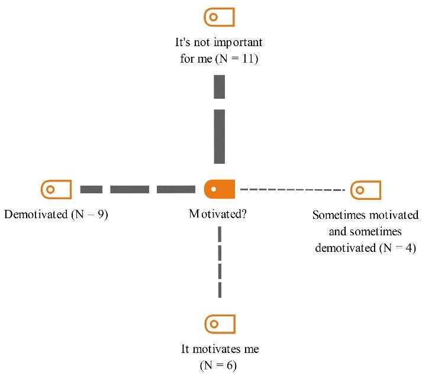
Students’ Perceptions of Fast Publication Culture
In the second question, we investigated the students’ perceptions of how some researchers publish so rapidly. It appears that students have various opinions on how some researchers can publish so fast. The most frequent code was related to “the impossibility of publishing research at a very fast pace” (N = 11), which was almost 35%. “Collusion”, meaning some researchers work in specific groups, mostly to charge anyone who wants to join them. This code, which accounted for 28% (N = 9) of the responses, was the second most frequent code. The third most frequent code was that those publishing profusely “knew the ins and outs of publishing well,” which accounted for 25% (N = 8) of the responses. Interestingly, another 12% (N = 4) suggested the existence of a “publishing mafia” and that these researchers have good connections with the editorial boards of journals (Figure 8.2). The following quotes exemplify each code:
- I don’t know, it’s impossible. My professor, who is a pro at this, publishes only one or two papers a year. Good research is time-consuming.
- It’s a collusion, I think. Some researchers work together, in groups of three to four normally, so everyone can do one part of the task. And if someone wants to join, they should pay something like a membership fee or something like that.
- They know the ins and outs well. It is obvious, that after publishing some papers you develop a good momentum for it.
- I think it’s mainly related to having a good relationship with the editors, and it is mostly a give-and-take one. I think we all know that there is a mafia behind this process. And if you have noticed, they publish only in some specific journals and work on some very limited subjects.
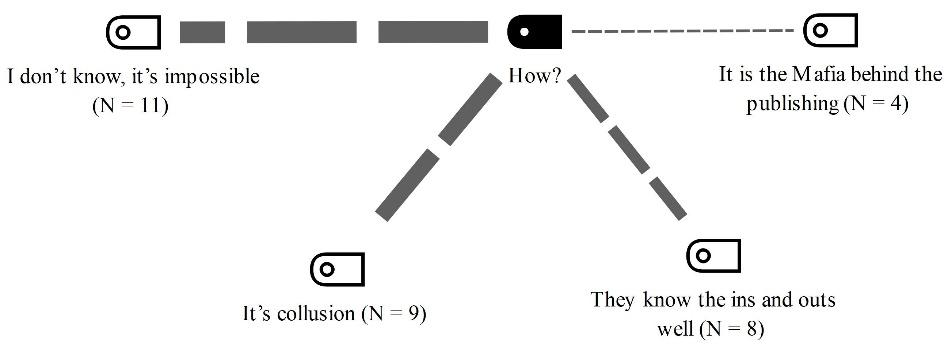
Reliability and Contribution of Rapidly Published Research Articles
The next questions examined the students’ views on the reliability and potential benefits of the articles published by these researchers. More than half of the students (57%) (N = 17) do not consider articles from these researchers as reliable. This sentiment is further supported by 13% (N = 4) of students who expressed distrust in articles from these researchers due to the suspected use of fake data. However, it is noteworthy that 30% (N = 9) of students indicated that they would consider the articles reliable if they were published in a top-tier journal (Figure 8.3(. The students justified this code by stating that there is a rigorous process for publishing an article and that top-tier journals have a very difficult review process, which highlights the importance of rigorous review processes in establishing credibility. The following quotes illustrate each code:
If someone publishes so fast, I don’t read the published articles because I think these articles are not reliable and the researcher wasn’t very ethical (Note that such researchers are rather known in the Iranian AL context, which can lead to questions about whether their rapid publication is a sign of a potential compromise in quality)
- I trust these kinds of researchers if they publish in top-gear journals as I think there should be a rigid review process before an article gets published.
- I don’t trust the results of these articles because we all know how time-consuming the data collection phase is, and I think that there is a high chance that they use fake data.
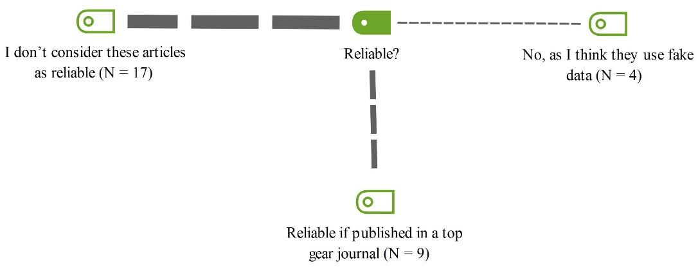
The students also expressed their views on the potential positive contributions of these types of articles to the field of AL, as well as whether they perceive such articles as generating genuine knowledge or pseudo-knowledge. More than half of the students (56.7%) (N = 17) did not think these articles made a positive contribution to the field. 26.7% (N = 8) stated that these researchers did not care about quality and only cared about quantity and wanted to publish more and more. Some students mentioned that publication in top-tier journals could indicate a higher contribution level due to rigorous review processes (N = 5) (Figure 8.4). Overall, the general view is that there are doubts about the value and impact of these articles on the field of AL. The following quotes show each code:
- How can they make a positive contribution? Well-known figures in our field only publish one or two articles in a year, and I enjoy reading their work, they publish more than seven or six articles a year, and when I read their work the only thing that comes to my mind is “So what?”. They only work on some areas that we all know what the results are, for example, we all know reflection is a good thing to have in our classrooms, or teachers don’t have autonomy in their classes in the school context, but we still conduct research in these areas, and the articles get published anyway. It seems like most journal editors don’t care about novelty.
- They don’t care about having positive contributions; they just want to publish one article after another and don’t care about the quality.
- I think we can say that if the articles are published in a top-tier journal, they will make a positive contribution to the field.
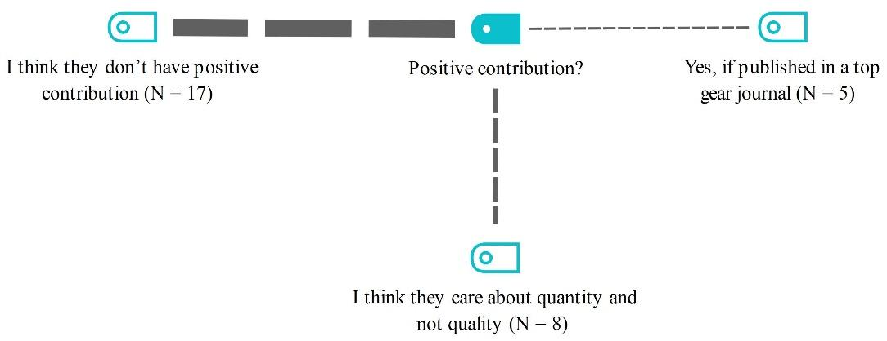
Promoting Research or Fishing for Praise
The final interview question concerned the promotional strategies, particularly on social media, of these researchers who publish so rapidly. The most common reason was to become famous and get recognition from others, especially researchers. This code appeared 21 times (60%). The second most common reason was to increase the future citations of their articles, which appeared nine times (25.7%). The least common reason was to inform others without advertising, which appeared five times (14.3%) (Figure 8.5). The following exemplify each code:
- The way I see is that human beings like to be seen and enjoy the feeling of getting attention from others. Given now we are living in a social media era where fame is an important issue. So, when I see they advertise their articles on social media I think it is mostly for receiving attention, praise, and kudus from the others. These researchers promote their work not only on academic platforms such as ResearchGate and Academia but mostly on social media that are not designed for science promotion such as Telegram, Instagram.
- I don’t think publishing research articles would make you famous or researchers are looking to receive praise from others. One reason in my mind could be to increase the future citations of their work,
- I think it is mostly for informing others, especially other researchers in the field to share the result of their work with them, and by doing so knowledge will be distributed.
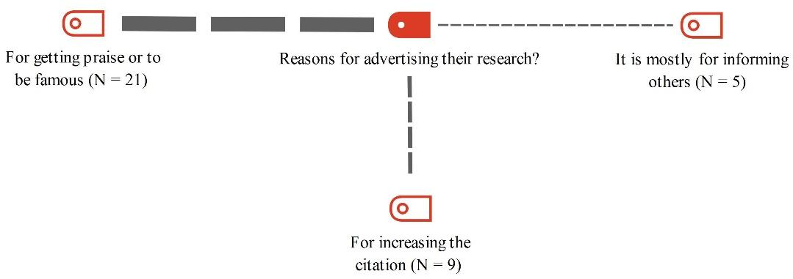
8.5Discussion
In this study, we aimed to explore graduate students’ perceptions of fast-paced research publications in the field of TEFL. Generally, the findings of this study showed that most M.A. and Ph.D. students had negative or indifferent views on the rapid publishing rate of some researchers as they had doubts about the reliability, quality, and contribution of these articles to the field of TEFL. Based on the results from the interviews, we could see that the impact of observing researchers who publish at a questionable rate on the motivation levels of students varies among individuals.
Students’ Perceptions
Many interviewees (N = 11) said that they were indifferent toward such behavior, and some found it demotivating (N = 9), emphasizing that their research goals are different, as they are focused on making meaningful contributions to their field. Only four students said that they had mixed feelings, stating that they were sometimes motivated and sometimes not. Their feelings were sometimes accompanied by inspiration by the pace of publication or demotivation due to their own perceived inability to match themselves with such researchers. As theorists argued, we can explain individuals’ choice, persistence, and performance by their beliefs about how well they will do in the activity and the extent to which they value the activity (Wigfield, 2000). Six students also said they are motivated when they see these researchers publish very fast. These diverse responses highlight the complex interplay between the observation of prolific publishing and its influence on student motivation.
In terms of the possibility of a rapid publication pace, we found out that students hold diverse perceptions. Most students (N = 11) mentioned the impossibility of consistently producing research at such a high frequency. Related to this finding, they emphasized the time-consuming nature of conducting a high-quality research study. Additionally, many students insinuated the presence of collusion among researchers (N = 9), pointing out that certain individuals work together in groups and may require membership payment. In this regard, one student specifically said “My friends needed to publish an article as she believes it can increase her chances of getting acceptance into a Ph.D. program. So, she contacted a very well-known researcher who publishes like one or two articles a month and he told her she has to pay for it.” Linked to this mindset, a few times in the interviews (N = 4), it was speculated that there is a "publishing mafia" and that many researchers have established strong connections with journal editorial boards, which have a sizeable impact on their success. Others, on the other hand, highlighted the importance of having a deep understanding of the publishing process (N = 8). They mentioned that familiarity with the intricate process of publication allows for a more efficient workflow. These varied opinions showed the multifaceted perceptions held by students regarding the notion of fast publication.
8.5.1Toxic Research Culture: Favoring Quantity Over Quality
An issue that arises here is the trade-off between quality and quantity, which has always been debated among academia members (Binswanger, 2014). While some researchers tend to publish as many papers as possible in a short period, hoping to increase their visibility, impact, and recognition, others believe the opposite, stating neglecting quality can bring detrimental effects. We believe rooting for quantity may compromise the quality, originality, and rigor of their research output and may create a distorted and superficial image of research excellence and productivity. This is why most well-known figures in the field of AL, such as Hymes, Halliday, Bachman, and the like, publish only a couple of high-quality papers, not 15 to 20 or even more works in one year. Conducting innovative and rigorous research that addresses relevant and important issues and problems requires time, critical thinking, collaborating with other researchers, and, more importantly, going back and forth many times between the steps of research. These well-known figure researchers are often recognized as leaders and influencers in the field of AL, not because of the sheer volume of their publications but the innovative nature of their research findings.
Prioritizing quantity over quality may be the existing research culture among up-and- coming researchers. The quality and value of research largely depend on the research culture that exists within the higher education institutions and the wider academic community (Hill, 1999). As Schein (1985) puts it, this culture is not static or homogeneous but rather dynamic and diverse, reflecting the different contexts, disciplines, and perspectives of researchers. It should be noted that research culture can also be influenced by external factors, such as government and institutional policies (Hill, 1999; Schein, 1985). The policies taken by these institutes may significantly affect the research practices among researchers and, more importantly, the outcomes of their research. We think the current situation of higher education research culture in Iran poses a threat to the existence and relevance of high-quality research. High-quality research refers to research that meets academic standards and expectations and addresses the needs and challenges of society; that is why we spend so much time and energy on conducting research in the first place! Therefore, we, as researchers in the field of AL, should recognize the pressures of academic publishing, which can overshadow the true essence of academic research (Plonsky et al., 2024). Neglecting this pressure can lead to major shifts toward favoring quantity over quality. This shift raises important questions about the true value of research and the broader implications for the academic community. Addressing these challenges is essential not only for the development of individual researchers but also for the integrity and advancement of the field as a whole.
This could be the reason why the majority of students (N = 17) expressed skepticism regarding the reliability of the articles published by prolific researchers. Some students (N = 4) specifically said that they have concerns about the potential use of fake data that can contribute to their distrust. Moreover, when we asked the students about the contribution that these articles make in the field of AL, most students (N = 17) held critical views on the positive impact of these articles on the field of AL, and some (N = 8) highlighted the researchers’ prioritization of quantity over quality, implying a lack of genuine concern for making meaningful contributions. This point was also raised by Arani et al. (2018) that in Iran, “many research projects are repetitive, devoid of any practical benefit to society, and stored in the corner of universities and research centers” (p.321). However, it is notable that nine students stated that they would believe these articles as reliable if they were published in top-tier journals, and few (N = 5) mentioned that publication in esteemed journals could have a positive contribution due to stringent review processes. This signifies the importance of rigorous review processes employed by journals as a key factor in establishing credibility and, more importantly, signifies the pivotal role that the editorial board of top journal play in shaping the public view toward knowledge (Amini Farsani et al., 2021). As Lee (2010, p. 260) put it, “we don’t just publish to keep our jobs, but to become contributing members of the academic/research community, to advance knowledge in the field.” To tackle this problem, we suggest implementing policies that promote research cultures of producing high-quality and innovative research instead of merely rewarding the number of publications. This would guarantee that research articles make a meaningful contribution toward the progress of knowledge and are given the acknowledgment and admiration they rightfully deserve.
8.5.2Toxic Research Culture: The Pursuit of Fame
Our final interview question probed students’ perceptions of the reasons why these researchers advertise their articles on social media. Results revealed that the desire for fame and recognition from peers and the broader academic community constituted the primary reason, especially when they advertise their articles on platforms that are not related to research such as Telegram and Instagram. According to Greenwood et al. (2013), the desire to be seen/valued (Visibility) is one of the main factors that predict the appeal of fame, along with the desire for an elite, high-status lifestyle (Status) and the desire to use fame to help others or make them proud (Prosocial). They suggest that the desire to be seen/valued reflects the need to belong, which is a fundamental human motivation. When researchers advertise their articles on social media, they may seek to gain attention, recognition, and praise from their peers, colleagues, and followers, as well as to enhance their reputation and image.
We think this may also indicate a form of narcissism, which is another predictor of fame appeal, as Greenwood et al. (2013) argued. However, it is important to consider that this behavior may also stem from insecurities brought about by the precarity of academic jobs. Characteristics of narcissism are having a grandiose sense of self-importance, a need for admiration, and a lack of empathy (Yakeley, 2018). Researchers who show narcissistic traits may use social media to boost their ego, show off their achievements, and compete with others. We should also note that the desire to be seen and valued may also have negative consequences, such as increased stress, anxiety, envy, and dissatisfaction, as well as reduced quality and originality of the research output. Therefore, researchers should be aware of the potential benefits and risks of using social media to advertise their articles and to balance their desire to be seen with their desire to contribute to the field of knowledge.
Furthermore, this phenomenon can be contextualized within the framework of celebrity culture and Debord’s (1994) concept of the spectacle, which posits that modern society is dominated by images and representations that shape our perceptions of reality. Just as celebrities project their public facades to gain visibility and admiration, researchers may similarly engage in self-promotion through social media, which may blur the lines between academic merit and personal fame. This parallel suggests that the pursuit of recognition in academia mirrors the dynamics of celebrity culture, where the desire to be seen and valued can overshadow the intrinsic motivations for genuine scholarly contribution.
8.6Conclusion
In this study, we focused on the fact that the swift pace of publication in the TEFL field has been steadily increasing over the last decade, which has raised concerns about the quality and trustworthiness of published research articles. This qualitative study delves into the perceptions of TEFL Ph.D. and M.A. students regarding the rapid publications in AL research, highlighting their skepticism and apprehensions. The findings of this study can contribute to the field of TEFL and broader academic community in several ways. First, our findings showed that there is a need for more transparency and accountability in the research publication process, especially in terms of the criteria and standards for evaluating and accepting articles. Moreover, there is a need to change our policies in terms of criteria of excellence, because publishing more research articles does not mean a more qualified person for the job. Therefore, we should focus more on the quality and relevance of the research output, rather than the quantity and speed of publication. One potential approach to achieve this objective could be for those individuals undergoing the assessment to present one or two of their top articles published within a year, which would then be reviewed by a committee or their peers. As stressed by Isbell and De Costa (2024) AL field need to evaluate their methods and develop ethical dispositions. Third, our finding highlighted the importance of providing adequate guidance and support for graduate students to give them a better view regarding the purpose of research as some students’ mindset is the more publication, the better.
To appreciate the findings of this study for further studies, it might be helpful to depict the current prevailing research culture in Iran. The MSRT in Iran plays an instrumental role in shaping and promoting scientific research to respond to the government’s commitment to lead a knowledge-based economy (Amini Farsani & Asaie, 2024). As a consequence, emphasizing research output and publication in Iran’s academic and scientific communities has been the ministry’s main orientation. The operationalization and implementation of future research are highly under the powerful influence of national grand policy documents (e.g., the 20-year National Vision; Comprehensive Science Roadmap; Policies of the 5th 5-year Development Plan, and National Document of Education). As stated by Amini Farsani (2017), the purpose of the research movement in Iran is to improve “knowledge and technology; achieve the first economic, scientific, and technological rank in the region; increase the share of the country in international knowledge production; promote research and attain technologies; reform higher education and research; and reform the educational system” (p. 35). As such, the policies taken by the ministry can cultivate a culture of prioritizing quantity over quality.
A concrete example to support this claim is the requirement for Iranian Ph.D. students to publish at least one paper in a peer-reviewed journal before defending their dissertation. While this policy aims to ensure that students have the necessary skills and experience to conduct high-quality research and contribute to the scholarly conversation in their field, it can also be seen as an undue pressure on students to prioritize publication over important research aspects such as rigorous research design, data analysis, and interpretation. Although one article may not seem like a large quantity, the mandatory nature of this publication requirement can lead to a focus on pace rather than quality, pushing students to rush their research to meet the deadline. This, in turn, can lead to a proliferation of low-quality publications that do not significantly advance knowledge in the field. Moreover, there is an emphasis placed on the quantity rather than quality of published articles in faculty recruitment processes. We believe this trend creates pressure for researchers to produce more articles, regardless of their quality and originality, leading to a loss of trust and credibility in research articles. One possible consequence of such a policy might be the feeling of frustration among the members of academia with the higher education system, as they are led to perceive that their knowledge and skills are mostly dependent on their ability to publish more articles.
Finally, we cannot turn a blind eye on Iran’s scientific rivalry with neighboring countries in the Middle East. This is mostly related to securing a better standing in international rankings, and we think this mindset can contribute to the current research culture in Iran. Although rankings can provide valuable feedback to institutions and researchers, setting them as the primary reason for conducting research should not be practiced. Instead, the policies should prioritize conducting high-quality research that contributes to the field positively rather than focusing solely on publishing in high-impact journals. In this study, we attempted to raise awareness and highlight the need for academic policymakers and stakeholders in Iran to reevaluate the policies that have shaped the culture of ‘more publications, more success.’ By prioritizing the quality of research and publications over quantity, institutions and researchers can ensure that their work has a meaningful impact on their field and contributes to the broader academic community. This, in turn, will help to cultivate a research culture that prioritizes excellence over competition. Therefore, further studies are necessary to evaluate the effects of research policies implemented by Iran’s MSRT from multiple perspectives, including students, professors, and policymakers. Additionally, it is important to assess how these policies impact the research culture of Iranian researchers.
Our study has some limitations that need to be mentioned. First, our sample size was relatively small. We only interviewed students from state universities, which may limit the generalizability of the results since students from private universities may have different experiences, motivations, and perspectives, which could impact the overall validity of our findings. While we employed a qualitative approach, which is often perceived as less conducive to statistical analysis or causal inference, it is important to recognize that qualitative methodologies can provide valuable insights into causal relationships. Recent advancements, such as process tracing and other innovative methods introduced by complexity theorists, allow for a nuanced understanding of causality in AL (see McKinney, 2019). Furthermore, the grounded theory approach we utilized can be seen as comparable to rigorous statistical methods like factor analysis (see Hammersley & Atkinson, 2020). While statistical methods reveal causal relationships, qualitative approaches like grounded theory also provide robust insights into underlying patterns. Our systematic coding process and the high inter-coder reliability (0.90) demonstrate that grounded theory is not merely a limitation but a valid method for uncovering causal relationships, complementing quantitative methods, and offering nuanced understandings of complex phenomena. However, future studies could use larger and more diverse samples, employ quantitative or mixed methods, and examine other aspects of research publication, such as the impact, quality, and novelty of the publications.
8.7Appendix: Interview Questions
You probably have seen several relatively young researchers who are publishing at an incredible rate, one or two articles per month or week.
- Do you get motivated or demotivated seeing them publishing so fast and so many?
- How do you think they manage to get so many articles published?
- Do you think they are advancing our field?
- Do you regard their research as reliable?
- What do you think about them advertising their research on social media?
References
Amini Farsani, M. (2017). Exploring three decades of TEFL research in Iran: Conceptions and practices [Unpublished doctoral dissertation]. Kharazmi University, Tehran.
Amini Farsani, M. A., & Asaie, M. (2024). Exploring TEFL research methods courses in Iran: A path to research synthesis pedagogy. The Qualitative Report, 29(1), 206–228. https://doi.org/10.46743/2160-3715/2024.5858
Amini Farsani, M., & Babaii, E. (2019). EFL faculty members’ research engagement: Voices from Iran. Research in Post-Compulsory Education, 24(1), 37–59. https://doi.org/10.1080/13596748.2019.1584437
Amini Farsani, M., Jamali, H. R., Beikmohammadi, M., Daneshvar Ghorbani, B., & Soleimani, L. (2021). Methodological orientations, academic citations, and scientific collaboration in applied linguistics: What do research synthesis and bibliometrics indicate? System, 100, 102547. https://doi.org/10.1016/j.system.2021.102547
Amini Farsani, M., & Mohammadi, V. (2022). Mixed methods research in an EFL context: A quality assessment perspective. Journal of Modern Research in English Language Studies, 9(2), 99–122. https://doi.org/10.30479/jmrels.2021.14436.1771
Arani, A. M., Kakia, L., & Malek, M. J. (2018). Higher education research in Iran: Quantitative development and qualitative challenges. In J. Jung, H. Horta, & A. Yonezawa (Eds.), Researching higher education in Asia: History, development, and future (pp. 315–326). Springer.
Ary, D., Jacobs, L. C., Irvine, C. S. K., & Walker, D. (2019). Introduction to research in education (10th ed.). Cengage Learning.
Asaie, M., & Amini Farsani, M. (2023). Surveying TEFL M.A. students’ attitude towards research and research methodology course: A mixed research approach. Research in Post Compulsory Education, 28(3), 460–484. https://doi.org/10.1080/13596748.2023.2221120
Atai, M. R., Karimi, M. N., & Asadnia, F. (2018). Conceptions of research publication among Iranian doctoral students of applied linguistics: Cherish the wish to publish or rush to perish. Iranian Journal of Applied Linguistics, 21(1), 29–65. https://ijal.khu.ac.ir/article-1-2852-en.pdf
Babaii, E., Hashemi, M. R., & Amini Farsani, M. (2016). Exploring EFL applied linguists’ conceptions of research: A mixed methods study. Journal of Foreign Language Research, 6(2), 501–533. https://doi.org/10.22059/jflr.2017.229637.324
Bardi, M. (2015). Learning the practice of scholarly publication in English – A Romanian perspective. English for Specific Purposes, 37, 98–111. https://doi.org/10.1016/j.esp.2014.08.002
Bazeley, P. (2003). Defining ‘Early Career’ in research. Higher Education, 45(3), 257–279. https://doi. org/10.1023/A:1022698529612
Bernard, H. R., & Ryan, G. W. (2010). Analyzing qualitative data: Systematic approaches. SAGE.
Binswanger, M. (2014). How nonsense became excellence: Forcing professors to publish. In I. M., Welpe, J., Wollersheim, S., Ringelhan, & M. Osterloh, (Eds.), Incentives and performance: Governance of research organizations (pp. 19-32). Springer.
Borg, S. (2009). English language teachers’ conceptions of research. Applied Linguistics, 30(3), 358–388. https://doi.org/10.1093/applin/amp007
Brown, J. (2014). Mixed methods research for TESOL. Edinburgh University Press.
Brown, J. D. (2015). Why bother learning advanced quantitative methods in L2 research? In L. Plonsky (Ed.), Advancing quantitative methods in second language research (pp. 9–20). Routledge.
Burnard, P. (1991). A method of analyzing interview transcripts in qualitative research. Nurse Education Today, 11(6), 461–466. https://doi.org/10.1016/0260-6917(91)90009-Y
Burnard, P. (1996). Teaching the analysis of textual data: An experiential approach. Nurse Education Today, 16(4), 278–281. https://doi.org/10.1016/S0260-6917(96)80115-8
Byrnes, H. (2013). Notes from the editor. Modern Language Journal, 97(4), 825–827. https://doi.org/10.1111/j.1540-4781.2013.12051.x
Chen, Y., Gupta, A., & Hoshower, L. (2006). Factors that motivate business faculty to conduct research: An expectancy theory analysis. Journal of Education for Business, 81(4), 179–189. https://doi.org/10.3200/JOEB.81.4.179-189
Cohen, L., Manion, L., & Morrison, K. (2018). Research methods in education. Routledge.
Daud, A., Abbas, F., Amjad, T., Alshdadi, A. A., & Alowibdi, J. S. (2021). Finding rising stars through hot topics detection. Future Generation Computer Systems, 115, 798–813. https://doi.org/10.1016/j.future.2020.10.013
Daud, A., Aljohani, N. R., Abbasi, R. A., Rafque, Z., Amjad, T., Dawood, H., & Alyoubi, K. H. (2017). Finding rising stars in co-author networks via weighted mutual influence. Proceedings of the 26th International Conference on World Wide Web Companion, Perth, Australia. https://doi.org/10.1145/ 3041021.3054137
Debord, G. (1994). The society of the spectacle (D. Nicholson-Smith, Trans.). Zone Books. (Original work published 1967)
Dey, I. (1995). Reducing fragmentation in qualitative research. In U. Kelle (Ed.), Computer qualitative data analysis: Theory, methods, and practice (pp. 69–79). Sage.
Dörnyei, Z. (2007). Research methods in applied linguistics: Quantitative, qualitative, and mixed methodologies. Oxford University Press.
Downe-Wamboldt, B. (1992). Content analysis: Method, applications, and issues. Health Care for Women International, 13(3), 313–321. https://doi.org/10.1080/07399339209516006
García-Suaza, A., Otero, J., & Winkelmann, R. (2020). Predicting early career productivity of PhD economists: Does advisor-match matter? Scientometrics, 122(1), 429–449. https://doi.org/10.1007/ s11192-019-03277-8
Goatly, A. (2022). Two dimensions of meaning. Routledge.
Greenwood, D., Long, C. R., & Dal Cin, S. (2013). Fame and the social self: The need to belong, narcissism, and relatedness predict the appeal of fame. Personality and Individual Differences, 55(5), 490–495. https://psycnet.apa.org/doi/10.1016/j.paid.2013.04.020
Hammersley, M., & Atkinson, P. (Eds.). (2020). The blind faith in numbers: A critical examination of quantitative research. Springer. https://link.springer.com/book/10.1007/978-3-030-73257-8
Hashemi, M. R., & Babaii, E. (2013). Mixed methods research: Toward new research designs in applied linguistics: Toward new research designs in applied linguistics. Modern Language Journal, 97(4), 828–852. https://doi.org/10.1111/j.1540-4781.2013.12049.x
Hauter, J. (1993). The smart woman’s guide to career success. Career Press.
Heritage, J. (1984). Garfinkel and ethnomethodology. Cambridge University Press.
Hill, R. (1999, July). Revisiting the term “research culture” (Conference presentation). HERDSA (Higher Education Research and Development Society of Australasia) Annual International Conference, Melbourne.
Hilmer, C., & Hilmer, M. (2007a). On the relationship between the student–advisor match and early career research productivity for Agricultural and Resource Economics PhDs. American Journal of Agricultural Economics, 89(1), 162–175. http://dx.doi.org/10.1111/j.1467-8276.2007.00970.x
Holliday, A. (2015). Analyzing qualitative data. In B. Partridge & &. A. Phakiti (Eds.), Research methods in applied linguistics: A practical guide (pp. 60–73). Bloomsbury Publishing.
Horta, H., Cattaneo, M., & Meoli, M. (2018). PhD funding as a determinant of PhD and career research performance. Studies in Higher Education, 43(3), 542–570. https://doi.org/10.1080/03075079.2016.1185406
Hsieh, H. F., & Shannon, S. E. (2005). Three approaches to qualitative content analysis. Qualitative Health Research, 15(9), 1277–1288. https://doi.org/10.1177/1049732305276687
Hudson, T., & Liosa, L. (2015). Design issues and inference in experimental L2 research. Language Learning, 65(S1), 76–96. https://doi.org/10.1111/lang.12113
Isbell, D. R., & De Costa, P. I. (2024). Ethics in applied linguistics research: Evidence and action. Research Methods in Applied Linguistics, 3(1), 100104. https://doi.org/10.1016/j.rmal.2024.100104
Jalongo, M. R., & Saracho, O.N. (2016). Writing for publication: Transitions and tools that support scholars’ success. Springer.
Kwan, B. S. C. (2013). Facilitating novice researchers in project publishing during the doctoral years and beyond: A Hong Kong-based study. Studies in Higher Education, 38(2), 207–225. https://doi.org/10.1080/03075079.2011.576755
Larson-Hall, J., & Plonsky, L. (2015). Reporting and interpreting quantitative research findings: What gets reported and recommendations for the field: What gets reported and recommendations for the field. Language Learning, 65(S1), 127–159. https://doi.org/10.1111/lang.12115
Laurance, W. F., Useche, D. C., Laurance, S. G., & Bradshaw, C. J. A. (2013). Predicting publication success for Biologists. BioScience, 63(10), 817–823. https://doi.org/10.1525/bio.2013.63.10.9
Lee, A. (2010). When the article is the dissertation: Pedagogies for a PhD by publication. In C. Aitchison, B. Kamler, & A. Lee (Eds.), Publishing pedagogies for the doctorate and beyond (pp. 12–29). Routledge.
Lee, A., & Kamler, B. (2008). Bringing pedagogy to doctoral publishing. Teaching in Higher Education, 13(5), 511-523. https://doi.org/10.1080/13562510802334723
Lee, D. (2024). Exploring the determinants of research performance for early-career researchers: a literature review. Scientometrics, 129(1), 181–235. https://doi.org/10.1007/s11192-023-04868-2
Lee, D. H. (2019). Predicting the research performance of early career scientists. Scientometrics, 121(3), 1481–1504. https://doi.org/10.1007/s11192-019-03232-7
Lincoln, Y. S., Lynham, S. A., & Guba, E. G. (2017). Paradigmatic controversies, contradictions, and emerging confluences. In N. K. Denzin & Y. S. Guba (Eds.), The SAGE handbook of qualitative research (5th ed.). Sage.
Liu, J., Tang, T., Kong, X., Tolba, A., Al-Makhadmeh, Z., & Xia, F. (2018). Understanding the advisor– advisee relationship via scholarly data analysis. Scientometrics, 116(1), 161–180. https://doi.org/10.1007/s11192-018-2762-2
Marshall, C., & Rossman, G. B. (2014). Designing qualitative research. Sage.
McGrail, M. R., Rickard, C. M., & Jones, R. (2006). Publish or perish: A systematic review of interventions to increase academic publication rates. Higher Education Research & Development, 25(1), 19–35. https://doi.org/10.1080/07294360500453053
McKinney, C. (Eds.). (2019). Research methods for complexity theory in applied linguistics. Routledge.
Miller, A. N., Taylor, S. G., & Bedeian, A. G. (2011). Publish or perish: Academic life as management faculty live it. Career Development International, 16(5), 422–445. https://doi.org/10.1108/13620431111167751
Okoduwa, S. I., Abe, J. O., Samuel, B. I., Chris, A. O., Oladimeji, R. A., Idowu, O. O., & Okoduwa, U. J. (2018). Attitudes, perceptions, and barriers to research and publishing among research and teaching staff in a Nigerian Research Institute. Frontiers in Research Metrics and Analytics, 3, 26. https://doi.org/10.3389/frma.2018.00026
Plonsky, L. (2013). Study quality in SLA: An assessment of designs, analyses, and reporting practices in quantitative L2 research. Studies in Second Language Acquisition, 35(4), 655–687. https://doi.org/10.1017/S0272263113000399
Plonsky, L. (2014). Study quality in quantitative L2 research (1990-2010): A methodological synthesis and call for reform: Study quality in quantitative L2 research (1990-2010). Modern Language Journal, 98(1), 450–470. https://doi.org/10.1111/j.1540-4781.2014.12058.x
Plonsky, L. (2017). Quantitative research methods. In S. Loewen & M. Sato (Eds.), The Routledge handbook of instructed second language acquisition (pp. 505–521). Routledge.
Plonsky, L., Brown, D., Chen, M., Ghanem, R., Arvizu, M. N. G., Isbell, D. R., & Zhang, M. (2024). “Significance sells”: Applied linguists’ views on questionable research practices. Research Methods in Applied Linguistics, 3(1), 100099. https://doi.org/10.1016/j.rmal.2024.100099
Plonsky, L., & Oswald, F. L. (2015). Meta-analyzing second language research. In L. Plonsky (Ed.), Advancing quantitative methods in second language research (pp. 106–128). Routledge.
Rawat, S., & Meena, S. (2014). Publish or perish: Where are we heading? Journal of Research in Medical Sciences, 19(2), 87–89. https://pubmed.ncbi.nlm.nih.gov/24778659/
Riazi, A. M. (2016). Innovative mixed-methods research: Moving beyond design technicalities to epistemological and methodological realizations. Applied Linguistics, 37(1), 33–49. https://doi.org/10.1093/applin/amv064
Riazi, A. M., & Amini Farsani, M. (2023). Mixed-methods research in applied linguistics: Charting the progress of the second decade of the 21st century. Language Teaching, 1–40. https://doi.org/10.1017/S0261444823000332
Riazi, A. M., & Candlin, C. N. (2014). Mixed-methods research in language teaching and learning: Opportunities, issues and challenges. Language Teaching, 47(2), 135–173. https://doi.org/10.1017/s0261444813000505
Sandelowski, M. (2000). Whatever happened to qualitative description? Research in Nursing & Health, 23(4), 334–340.
Sandelowski, M. (2010). What’s in a name? Qualitative description revisited. Research in Nursing & Health, 33(1), 77–84. https://doi.org/10.1002/nur.20362
Sato, M., & Loewen, S. (2019). Do teachers care about research? The research–pedagogy dialogue. ELT Journal, 73(1), 1–10. https://doi.org/10.1093/elt/ccy048
Schein, E. (1985). Organizational culture and leadership. Jossey Bass.
Ten Have, P. (2003). Understanding qualitative research and ethnomethodology. Sage.
Thunnissen, M., Boselie, P., & Fruytier, B. (2013). Talent management and the relevance of context: Towards a pluralistic approach. Human Resource Management Review, 23(4), 326–336. https://doi.org/10.1016/j.hrmr.2013.05.004
Wigfield, A., & Eccles, J. S. (2000). Expectancy–value theory of achievement motivation. Contemporary Educational Psychology, 25(1), 68–81. https://psycnet.apa.org/doi/10.1006/ceps.1999.1015
Yakeley, J. (2018). Current understanding of narcissism and narcissistic personality disorder. BJPsych Advances, 24(5), 305–315. https://psycnet.apa.org/doi/10.1192/bja.2018.20
Zhang, Y., & Yu, Q. (2020). What is the best article publishing strategy for early career scientists? Scientometrics, 122(1), 397–408. https://doi.org/10.1007/s11192-019-03297-4
Toward Inclusive, Ethical, and Responsive Research Culture(s) in Applied Linguistics and TESOL
Abstract
The concluding chapter of this volume synthesizes the varied insights presented throughout the book and provides a forward-looking perspective on cultivating research culture in applied linguistics and TESOL. Building upon the discussions of challenges and opportunities faced by educators, researchers, and institutions, this chapter reflects on the current state of research culture and offers actionable directions for fostering inclusive, ethical, and responsive scholarly environments.
Keywords: Applied linguistics research cultures, Inclusive research, Ethical research, Responsive research, TESOL research cultures
9.1Current State of Research Culture(s): Synthesizing Key Insights
This volume has critically examined the evolving research culture in applied linguistics and TESOL, reflecting on its challenges, innovative responses, and future directions. Across the chapters, a common thread emerges a) the imperative to balance rigor with inclusivity, b) innovation with ethics, and c) global relevance with local responsiveness. The research culture in these fields is at a crossroads, shaped by the pressures of neoliberal academic systems, a need for interdisciplinary engagement, and rapid technological advancements.
From Chapter 1, we learned how standard evaluation systems, such as REF and ERA, while fostering accountability, may inadvertently marginalise intellectual diversity and non-Western perspectives. Initiatives like IRIS and OASIS provide hopeful counterpoints, emphasizing open access and collaborative practices. Chapter 2 built on this by advocating for open data practices, showing how structured systems like badges can encourage transparency and reproducibility, albeit requiring stronger enforcement to maintain integrity.
Chapters 3 and 4 spotlighted the complexities of interdisciplinarity. While interdisciplinary approaches enrich applied linguistics, they also risk diluting disciplinary identity. The keystone practices framework proposed in Chapter 3 underscores the need to carefully balance internal coherence with external borrowing. The duoethnographic insights in Chapter 4 highlighted the value of reflexivity and dialogic collaboration in navigating disciplinary boundaries, advocating for the cultivation of tolerance, openness, and power-sensitive practices.
The second section contextualized these discussions, addressing the microcultures of research in underexplored contexts. Chapters 5 and 6 emphasized the significance of nurturing research even in teaching-focused or institutionally constrained settings, proposing ways to align research agendas with pedagogical practices and organizational realities. Chapters 7 and 8 added critical perspectives on identity and ethics, particularly the challenges faced by early-career researchers and graduate students amidst rapid publication pressures.
The following sections describe and critique the current higher education landscape and how this landscape has an impact on the creation, maintenance, and transformation of research cultures.
9.2Toward a More Inclusive, Ethical, and Responsive Research Culture
As the concluding chapter seeks to synthesise key insights from earlier discussions, it is clear that the trajectory of research culture in applied linguistics and TESOL must be one of greater inclusivity, ethical rigor, and responsiveness to diverse global needs. The preceding chapters have underscored the pressing challenges and emerging opportunities within these fields, offering a foundation for envisioning the future. This closing reflection draws upon those contributions to outline a path toward a research culture that not only addresses the complexities of the present but also embraces the potential for transformative change.
Inclusivity lies at the heart of a sustainable research culture (Jenks, 2024). Applied linguistics and TESOL exist within a deeply interconnected, globalized academic landscape where disparities in resources, representation, and opportunities remain significant. Whether it is the unique challenges faced by scholars in resource-constrained institutions or the limited recognition of contributions from the Global South, fostering inclusivity requires deliberate effort (McCallum & Tafazoli, 2024). As highlighted in the discussions on research microcultures and the experiences of early-career researchers, structural inequities must be countered through intentional practices that prioritise equitable access to resources, platforms, and collaborations (Habibie, 2022). This means creating pathways for underrepresented voices to shape research agendas and ensuring that knowledge production reflects the diverse realities of language use and education worldwide (Tafazoli & Picard, 2023).
Ethical considerations are equally vital as research culture evolves (Yaw et al., 2023). The accelerating pace of academic publication, often driven by the pressures of performance metrics and competitive benchmarks, raises concerns about research integrity, quality, and purpose (Egbert, 2007). As pointed out by Asaie and Nushi (this volume), the drive for rapid publication can erode trust in the scholarly process and compromise the ethical foundations of academic inquiry. A renewed commitment to ethics requires cultivating environments where quality and rigor are valued over quantity and where scholarly practices are guided by principles of transparency, accountability, and mutual respect. The open science movement offers a promising avenue for promoting ethical scholarship. By encouraging data sharing, open-access publishing, and collaborative methodologies, it fosters a culture of accountability while expanding the reach and relevance of research findings.
Responsiveness to the dynamic and multifaceted challenges of language education and applied linguistics is another cornerstone of this vision. As explored through interdisciplinary dialogues and innovative methodologies, the ability to adapt and engage with evolving societal needs is paramount. The concept of keystone practices, for instance, provides a compelling framework for ensuring that interdisciplinary borrowing serves to strengthen, rather than dilute, the core values and expertise of the field. Such responsiveness demands not only intellectual flexibility but also a willingness to engage with complex issues, from the commodification of education to the nuanced experiences of identity in research. By integrating diverse perspectives and embracing methodologies that reflect the lived realities of learners and educators, applied linguistics and TESOL can remain relevant and impactful (Widdowson, 2020).
Emerging technologies and digital infrastructures offer further opportunities to reshape research culture. As mentioned by Foung and Kohnke (this volume), from the badge system encouraging data sharing to the potential of technology-mediated collaborations across disciplinary and geographical boundaries, the role of technology in advancing inclusivity and accessibility cannot be overstated. These tools not only democratise the research process but also allow for innovative approaches to addressing enduring challenges, such as improving the visibility of marginalized scholars and disseminating findings to wider audiences. The digital realm thus becomes a space for reimagining the relationship between knowledge creation and societal engagement.
Finally, the journey toward a more inclusive, ethical, and responsive research culture is one of collective effort and shared responsibility. It requires a critical examination of existing norms and the courage to innovate. As the reflections in this volume have demonstrated, the potential for transformation lies in the hands of scholars, educators, and institutions committed to creating a more just and equitable academic landscape. By embracing these values, applied linguistics and TESOL can continue to thrive as fields that not only generate knowledge but also contribute meaningfully to addressing the linguistic, educational, and social challenges of our time (see Pennycook, 2021).
9.3A Vision for the Future
The future of applied linguistics and TESOL is one of immense possibility and responsibility. As these fields evolve within a rapidly changing global landscape, it is crucial to articulate a vision that is bold, inclusive, and adaptable (see Mackey et al., 2022). Such a vision requires an intentional alignment of scholarly inquiry, pedagogical practice, and ethical commitment to meet the needs of diverse communities while advancing the transformative potential of research and education.
At its core, the future of these fields is intertwined with the imperative to address the inequities that persist across educational systems and research practices. Applied linguistics and TESOL have long been concerned with understanding and improving the human experience of language, and this commitment must remain central as they confront new challenges. The ability to navigate and respond to disparities in access to education, technology, and scholarly resources will be a defining feature of their relevance in the years to come. A future-oriented vision acknowledges the importance of amplifying marginalised voices, whether by supporting scholars from underrepresented backgrounds, exploring the linguistic realities of minority communities, or addressing the ways in which systemic inequities shape language use and education (see McCallum & Tafazoli, 2024; Tafazoli & Picard, 2023).
Innovation must also be a cornerstone of this vision. As globalisation and technological advancement accelerate, the demand for creative and contextually sensitive approaches to teaching, research, and policy will only grow (see Pennycook & Makoni, 2019). The future of applied linguistics and TESOL will likely be marked by increasing interdisciplinary collaboration (De Costa, 2023), where insights from cognitive science, digital technology, and social justice movements converge to address complex problems. For example, artificial intelligence and machine learning could be harnessed not only to analyse vast linguistic datasets but also to design more personalised and inclusive language learning tools (Tafazoli, 2024). Likewise, interdisciplinary engagement could open up new avenues for understanding the intersections of language, identity, and power, providing richer insights into how individuals and communities navigate multilingual realities (see Widdowson, 2020).
Equally significant is the role of ethics and sustainability in shaping this vision. The pressures of academia, including the pursuit of publication metrics and institutional rankings, often risk sidelining ethical considerations in favour of expedience. A sustainable future for these fields requires scholars and educators to prioritize quality, integrity, and the well-being of all stakeholders in their work. This might involve redefining success in academic research to include societal impact and collaborative, community-driven initiatives. It also calls for a deepened commitment to addressing the ecological and social dimensions of language education, particularly as the climate crisis and global migration reshape the contexts in which language learning and use occur (see Kramsch, 2008).
The democratisation of knowledge and access is another essential element of this vision. By leveraging open-access publishing, digital archives, and virtual networks, applied linguistics and TESOL can break down barriers to information sharing and collaboration (Al-Hoorie, 2024; Plonsky, 2024; Silver et al., 2023). Such efforts ensure that knowledge flows more freely across borders, enabling educators and researchers in even the most resource-limited settings to contribute to and benefit from the global academic conversation. The digital transformation of academia provides unprecedented opportunities to reimagine how scholarship is produced, shared, and valued, fostering a more equitable and interconnected scholarly community.
At a deeper level, the future of these fields is defined by their ability to remain attuned to human experiences. As the boundaries of language, culture, and identity continue to shift, applied linguistics and TESOL must engage with the lived realities of learners, educators, and communities. This requires an unwavering focus on the social and cultural contexts of language, ensuring that research and practice are grounded in the diversity and complexity of human life. It also demands that these fields remain adaptable, open to revisiting foundational assumptions and exploring emerging questions with intellectual curiosity and humility.
Ultimately, the vision for the future of applied linguistics and TESOL is not static but dynamic—a framework that evolves in response to the changing needs of society and the individuals it serves. By embracing innovation, fostering inclusivity, and upholding ethical principles, these fields can continue to thrive as catalysts for knowledge, empowerment, and positive social change.
References
Al-Hoorie, A. H. (2024). The moral schizophrenia in the fight against Big Publisha. Dutch Journal of Applied Linguistics, 13. https://doi.org/10.51751/dujal19167
De Costa, E. (2023). A pedagogical model for integrating interdisciplinary approaches in second language education. In C. B. Scala (Ed.), How to actively engage our students in the language classes (pp. 107-125). Vernon.
Egbert, J. (2007). Quality analysis of journals in TESOL and applied linguistics. TESOL Quarterly, 41(1), 157–171. http://www.jstor.org/stable/40264335
Habibie, P. (2022). Early-career scholars and scholarship: A social justice perspective. Annual Review of Applied Linguistics, 42, 55–63. https://doi.org/10.1017/S0267190521000192
Jenks, C. J. (2024). Circular applied linguistics: A model for impactful, inclusive, and sustainable research. International Journal of Applied Linguistics, 35(1), 420-435. https://doi.org/10.1111/ijal.12628
Kramsch, C. (2008). Ecological perspectives on foreign language education. Language Teaching, 41(3), 389–408. https://doi.org/10.1017/S0261444808005065
Mackey, A., Fell, E., de Jesus, F., Hall, A., & Ku, Y. (Y.). (2022). Social justice in applied linguistics: Making space for new approaches and new voices. Annual Review of Applied Linguistics, 42, 1–10. https://doi.org/10.1017/S0267190522000071
McCallum, L., & Tafazoli, D. (Eds.). (2024). Computer-assisted language learning in the Global South: Exploring challenges and opportunities for students and teachers. Routledge. https://doi.org/10.4324/9781003495956
Pennycook, A. (2021). Critical applied linguistics: A critical re-introduction (2nd ed.). Routledge. https://doi.org/10.4324/9781003090571
Pennycook, A., & Makoni, S. (2019). Innovations and challenges in applied linguistics from the Global South (1st ed.). Routledge. https://doi.org/10.4324/9780429489396
Plonsky, L. (2024). A diamond in the rough: We need open access publishing for books, too. Dutch Journal of Applied Linguistics, 13. https://doi.org/10.51751/dujal19185
Silver, R. E., Lin, E., & Sun, B. (2023). Applied linguistics journal editor perspectives: Research ethics and academic publishing. Research Methods in Applied Linguistics, 2(3), 100069. https://doi.org/10.1016/j.rmal.2023.100069
Tafazoli, D. (2024). Exploring the potential of generative AI in democratizing English language education. Computers and Education: Artificial Intelligence, 7, 100275. https://doi.org/10.1016/j.caeai.2024.100275
Tafazoli, D., & Picard, M. (Eds.). (2023). Handbook of CALL teacher education and professional development: Voices from under-represented contexts. Springer. https://doi.org/10.1007/978-981-99-0514-0
Widdowson, H. (2020). On the subject of English: The linguistics of language use and learning. De Gruyter Mouton. https://doi.org/10.1515/9783110619669
Yaw, K., Plonsky, L., Larsson, T., Sterling, S., & Kytö, M. (2023). Research ethics in applied linguistics. Language Teaching, 56(4), 478–494. https://doi.org/10.1017/S0261444823000010